Centennial Jingzhang · Diameter Axis
— AI Innovation Belt Urban Design Proposal
Guiding Ideology: General Secretary Xi Jinping's important concept of "people's city built by the people, people's city for the people" Theoretical Mainline: New Spatial Economics causal chain — "spatial quality enhancement → dynamic talent agglomeration → industrial innovation development" Theoretical Foundation: Central Urban Work Conference Six-Dimension Modern People's City Framework × Yang Kaizhong's New Spatial Economics Policy Basis: National / Beijing / Haidian three-tier "15th Five-Year Plan" Design Scope: Centennial Jing-Zhang AI Innovation Belt (Coordinated Research 43.6km² / Overall Design 11.4km² / Key Areas 368.4ha) Spatial Paradigm: Diameter-type "One Diameter · Three Cores · Two Rings · Multiple Courts" (Spatial Economic Paradigm: quality gradient drives dynamic talent agglomeration) Design Concept: One Vein · Three Qualities · Six Dimensions · Seven Degrees · Tracing Origins to Inspire Innovation
Nature of Proposal: Open co-creation concept recommendation; does not substitute for formal planning or constitute official government conclusions.
Chapter 1 Design Basis and Data Inventory
1.1 Statutory Planning and Policy Basis
National Level
-
"Outline of the 15th Five-Year Plan for National Economic and Social Development of the People's Republic of China" [source:SRC-005] - "AI+" action deployment - Overall layout of Digital China construction - Building a globally influential sci-tech innovation center
-
"New Generation Artificial Intelligence Development Plan" (Guo Fa [2017] No. 35) [source:STATE-COUNCIL] - By 2030, AI theory, technology, and applications will overall reach world-leading levels - Building AI innovation highlands and talent highlands
-
"Outline of the 15th Five-Year Plan for National Economic and Social Development of Beijing" [source:BEIJING-GOV] - 5 trillion-level industrial cluster cultivation plans (including AI) - International sci-tech innovation center construction - Urban renewal action implementation plan
-
"Beijing's 15th Five-Year Plan Period AI Industry Development Plan" [source:BEIJING-MIIT] - AI core industry scale targets - AI innovation ecosystem construction - Scenario opening and application promotion
Central Urban Work Spirit
-
General Secretary Xi Jinping's Important Expositions on Urban Work [source:XI-URBAN] - The important concept of "people's city built by the people, people's city for the people" - People-centered urban development thought - Coordinating the three major links of urban planning, construction, and governance
-
Spirit of the Central Urban Work Conference [source:CENTRAL-URBAN-CONF] - Six-dimension goal of building a modern city that is "innovative, livable, beautiful, resilient, civilized, and smart" - Transforming urban development methods, improving urban governance systems, and enhancing urban governance capacity - Taking the path of urban development with Chinese characteristics
District Level
-
"Outline of the 15th Five-Year Plan for National Economic and Social Development of Haidian District" [source:HAIDIAN-GOV] - "Two Zones, Three Belts, Multiple Points" spatial pattern - AI industry highland construction - Urban renewal and quality improvement
-
"Haidian District Plan (Territorial Spatial Plan) (2017–2035)" [source:HAIDIAN-PLAN] - Functional positioning of sci-tech innovation core area - Territorial spatial development and protection pattern
-
"Centennial Jing-Zhang Railway Heritage Park Plan" [source:BEIJING-PLAN] - Overall layout of the 9-kilometer heritage park - Industrial heritage protection and activation
1.2 Centennial Jingzhang: From Railway Origin to Digital-Intelligence New Diameter
1.2.1 Historical Heritage: A Railway and a Nation's Innovation Consciousness
The century-old Jingzhang Railway is a spatial footnote of China's modernization journey. In 1909, the Beijing-Zhangjiakou Railway, chief-engineered by Zhan Tianyou, conquered the Badaling Pass with the iconic "herringbone" switchback, becoming China's first independently designed and constructed trunk railway. It marked the historical starting point of the Chinese nation's independent innovation amidst the wave of industrial civilization. Over the past century, the Jingzhang Railway has been more than a transportation corridor — it has been an innovation belt. From the breakthrough in railway engineering technology, to the gestation of industrial civilization along the line, to the continuous accumulation of science and education resources after the founding of New China, this railway has always carried the era's mission of China catching up with the world through independent innovation.
A century later, artificial intelligence is triggering a new round of productivity revolution, and the digital-intelligence economy has become the core battlefield of great power competition. From railway to AI, from industrial civilization to digital-intelligence civilization, the Jingzhang corridor once again stands at the intersection of history. In the past, it was the starting point of modernization — "opening railways, connecting the world." Today, it is the origin of new quality productive forces — "connecting the intelligence diameter, creating the future." The Centennial Jingzhang is not merely a route in geographical space; it is the historical vertical axis of China's innovation spirit.
1.2.2 Era Proposition: The Changing Spatial Logic of the Digital-Intelligence Economy
In the era of the digital-intelligence economy, the underlying logic of urban development is undergoing profound transformation. In the traditional industrial economy, industrial location depends on transportation costs, resource endowments, and scale effects. In the digital-intelligence economy, innovation becomes the primary productive force, talent becomes the primary resource, and spatial quality becomes the primary determinant of talent location choice.
Behind this transformation lies a deep-seated law revealed by New Spatial Economics: spatial quality determines talent location; talent location determines innovation location; innovation location determines the industrial location of new quality productive forces. In development stages dominated by knowledge-intensive industries, talents "vote with their feet" for high-quality spaces; enterprises cluster following talents; industries iterate and upgrade as talents agglomerate — forming a circular cumulative causation of "quality improvement → talent agglomeration → innovation growth → quality re-improvement."
Beijing, as the national science and technology innovation center, and Haidian District, as the core carrier of Beijing's AI industry, face the era proposition of how to transform advantages in science and education resources into AI innovation advantages. Along the Centennial Jingzhang corridor gathers a complete innovation chain from basic research to industrial application — ZhiYuan for original innovation, Zhongguancun for enterprise incubation, Dazhongsi for industrial transformation. Yet these innovation resources have long been separated by urban roads and functional zones, without forming a continuous spatial quality belt and innovation ecosystem chain.
1.2.3 Design Approach: Diameter Intelligence Axis — Activating Innovation Potential Through Spatial Quality
Based on the above historical heritage and era proposition, this proposal presents the overall design concept of "Centennial Jingzhang · Diameter Intelligence Axis": taking the Jingzhang Railway Heritage Park as the spatial main artery, transforming the century-old railway heritage into the innovation spatial skeleton of the AI era, and systematically improving spatial quality along the corridor through a diameter-type spatial structure, creating an AI innovation central axis spanning physical space to digital space, from industrial ecosystem to governance system.
The core design logic can be summarized as "three progressive steps":
Step 1: Linking into a Diameter — The Diameter Paradigm in Spatial Structure. Taking the Jingzhang Railway Heritage Park as the "diameter," connecting three core nodes — ZhiYuan AI Origin Community (North Core · Basic Research), ZhongZhiYuan AI Acceleration Zone (Mid Core · Startup Acceleration), and Dazhongsi AI Industry Cluster (South Core · Industrial Transformation) — forming a north-south quality gradient axis. The diameter-type spatial structure drives talent flow and agglomeration through quality gradients, enabling innovation resources to distribute orderly and link efficiently along the diameter.
Step 2: Virtual-Physical Dual Diameter — Hyper-Dimensional Expansion in Spatial Dimension. Superimposing a virtual spatial dimension on the physical diameter, constructing a "co-creation · co-construction · sharing" AI good governance system. The AI Conjecture Rankings gather collective wisdom to raise and solve problems (co-creation); the challenge-based system coordinates resources for joint breakthroughs (co-construction); innovation achievements benefit all people and improve the quality of production, life, and ecology (sharing). Virtual space and physical space mutually construct and reinforce each other — physical links are established and deepened online; new links emerge online and land and deepen offline.
Step 3: Governance Safeguard — Good Governance Assurance in Spatial Operation. Taking AI removability, non-smart equivalent paths, and manual review mechanisms as governance bottom lines, ensuring that AI always serves people and empowers cities. Taking public interest priority as the value anchor, so that innovation dividends benefit all citizens. The governance system and spatial system are designed integrally, ensuring the long-term, healthy, and sustainable operation of the innovation belt.
Thus, the Centennial Jingzhang is upgraded from "a railway" to "an intelligence diameter," from the transportation infrastructure of industrial civilization to the innovation spatial infrastructure of digital-intelligence civilization.
1.3 Theoretical Basis and Academic Literature
This proposal takes the New Spatial Economics founded by Professor Yang Kaizhong as the core theoretical foundation, and the important concept of the People's City as the value guidance, constructing a three-in-one design methodology of "theory - value - space". The core proposition of New Spatial Economics — "spatial quality drives talent agglomeration, knowledge exchange drives innovation growth" — provides solid theoretical support for the spatial design of the Jing-Zhang AI Innovation Belt.
1.3.1 Core Theory: New Spatial Economics
This proposal takes the New Spatial Economics founded by Professor Yang Kaizhong as its core theoretical foundation. New Spatial Economics breaks through the analytical paradigm of "transportation cost minimization" in traditional urban economics, shifting to a brand-new theoretical perspective of "spatial quality drives innovation growth", providing a systematic theoretical framework for the planning and design of urban innovation spaces in the AI era. Its core proposition holds that spatial economy is endogenously determined by the interwoven co-evolution of technological innovation, increasing returns, factor mobility, travel costs and transport costs, and spatial quality — spatial quality is no longer an exogenous residual "amenity" variable, but a core endogenous variable alongside transport costs and factor flows. [source:SRC-019]
New Spatial Economics reveals that in the DIKIT era, the relative importance of freight costs versus travel costs has undergone a fundamental shift: face-to-face exchange has become the foundational mechanism of innovation, travel costs have risen to become a key constraint of the spatial economy, and spatial quality together with travel costs determines the "quality proximity effect" in talent location choice — talents tend to flow to areas with high spatial quality and low travel costs, even if nominal wages are lower. [source:SRC-019] Its core logic can be summarized as "three propositions + two mechanisms":
Three Core Propositions
Proposition 1: Spatial Quality is the Core Driver of Dynamic Talent Agglomeration [source:SRC-008]
In the innovation-driven development stage, the core of urban competition has shifted from traditional production factors such as land, labor, and capital to the attractiveness of spatial quality to high-human-capital populations. As the ultimate form of knowledge-intensive industries, the core production factor of the AI industry is talent; and the location choice and mobility decisions of talents are increasingly influenced by urban spatial quality — including ecological environment, cultural atmosphere, life convenience, social richness and other multi-dimensional quality factors.
This proposition fundamentally reconstructs the "talent attraction logic": the marginal benefit of the traditional planning model of "static talent introduction" relying on policy subsidies is diminishing, while the "dynamic agglomeration" model centered on spatial quality supply is the sustainable talent strategy. Talents are not "introduced" — they are "attracted" by high-quality spatial environments and spontaneously agglomerate.
New Spatial Economics further proposes the concept of "learning-oriented spatial quality": talent agglomeration generates face-to-face exchange and promotes the spread of tacit knowledge, but the intensity of this spillover effect depends not only on talent density, but on learning-oriented spatial quality — high-quality learning environments can guide talents to actively allocate time for knowledge exchange, thereby realizing human capital appreciation at the micro level. [source:SRC-019] This means AI innovation spaces must not only provide office facilities, but more importantly cultivate learning-oriented scenarios that spark knowledge collision.
Guiding significance for this proposal: Jing-Zhang Railway Heritage Park, as a continuous high-quality public space extending 6.2 kilometers, is the core quality supply source for attracting dynamic agglomeration of AI talents. By continuously supplying diverse quality elements such as ecology, culture, and exchange through linear space, it builds sustained attractiveness for AI R&D talents, entrepreneurs, and engineers, forming a circular cumulative causation effect of "quality enhancement → talent inflow → further quality enhancement".
Proposition 2: Minimizing Spatial Transaction Costs of Knowledge Exchange is the Key to Innovation Efficiency [source:SRC-008]
The core mechanism of innovation is the flow, collision, and recombination of knowledge, especially face-to-face exchange of tacit knowledge. The efficiency of knowledge exchange largely depends on spatial organization — the closer the spatial distance, the richer the exchange scenarios, and the lower the mobility cost, the higher the frequency and quality of knowledge spillovers.
New Spatial Economics takes the "spatial transaction cost of knowledge exchange" as its core analytical variable: including the time cost of movement, the search cost of exchange, the adaptation cost of scenarios, etc. Compact spatial layout, mixed functional composition, and a hierarchical exchange venue system can systematically reduce the spatial transaction cost of knowledge exchange and improve the density and quality of innovation output.
Guiding significance for this proposal: Through the spatial organization of "one diameter stringing three cores, dual rings connecting multiple courts", the diameter-type spatial structure closely arranges innovation subjects such as universities and research institutes, R&D institutions, startup enterprises, investment institutions, and service platforms along the linear corridor, greatly shortening the physical distance between innovation subjects. In particular, linear innovation districts support the informal knowledge exchange mode of "exchanging while walking" — which is one of the most important channels for creative generation and interdisciplinary collision.
Proposition 3: Circular Cumulative Causation — Positive Feedback Between Talent Agglomeration and Spatial Quality Enhancement [source:SRC-008]
The relationship between spatial quality and talent agglomeration is not one-way causation, but bidirectional circular cumulative causation: spatial quality enhancement attracts more high-human-capital talents to agglomerate, and the agglomeration of high-human-capital talents in turn promotes further improvement of spatial quality (such as upgrading demand for public services, consumption support for cultural facilities, participation and empowerment in community governance), forming a positive feedback cycle of "better quality → more talents → better quality".
This proposition reveals the "endogenous growth mechanism" of innovation district development: once a certain critical mass is crossed, the innovation district will enter a self-reinforcing growth track without continuous reliance on external policy injection. The core task of planning and design is to help the region cross this critical threshold through the initial supply of high-quality space.
Guiding significance for this proposal: The spatial design of the Diameter Intelligence Axis takes Jing-Zhang Railway Heritage Park as the initial quality anchor, gradually releasing high-quality spatial supply along the axis, and progressively accumulating talent density. The ultimate goal is to propel the entire innovation belt to enter the circular cumulative causation track of talent and quality, realizing self-organized evolution and sustainable growth of the innovation ecosystem.
Two Spatial Economic Mechanisms
Mechanism 1: Contact Efficiency Advantage of Linear Space — Corridor Mode vs. Node Mode [source:SRC-019]
From the perspective of the spatial efficiency of knowledge exchange, the linear corridor mode is significantly superior to the point-like agglomeration mode. Its economic logic lies in:
- Maximized contact interface: Linear space has a longer contact interface than point-like space, can benefit more building interfaces and functional blocks, and has higher spatial penetration of quality supply.
- Maximized chance encounter probability: In linear corridors, people flowing in different directions naturally generate face-to-face encounter opportunities, and such "encounters in flow" are an important source of informal knowledge exchange.
- Structured reduction of mobility costs: All nodes along the linear corridor share the same quality spine, and the exchange path between any two nodes is naturally minimized, enabling point-to-point communication without detours.
The unique geometric advantage of the diameter-type layout further strengthens this mechanism: within a circular or quasi-circular research scope, the diameter is the longest chord, meaning the maximum coverage of linear space; meanwhile, the midpoint of the diameter (AI Origin) has the shortest distance to both ends, meaning the highest accessibility of the core exchange node.
Mechanism 2: Dynamic Agglomeration Driven by Gradient Differences — Quality Gradient → Talent Flow → Innovation Diffusion [source:SRC-019]
Dynamic talent agglomeration is not uniformly distributed, but flows along the quality gradient. Different types and developmental stages of innovative talents have systematic differences in their preferences for spatial quality: research talents prefer learning-oriented quality (academic atmosphere, quiet environment), entrepreneurial talents prefer innovation-oriented quality (exchange density, entrepreneurial services), and industrial talents prefer industry-oriented quality (business support, industrial chain completeness).
The quality gradient of "learning-oriented → innovation-oriented → industry-oriented" formed along the diameter axis not only corresponds to the spatial organization of the innovation chain, but also creates a "quality differential" for talent flow — talents flow between different nodes due to changes in quality preferences, and knowledge spillovers and innovation diffusion occur during the flow process. This dynamic talent flow based on quality gradients is the "blood circulatory system" of the innovation ecosystem.
Guiding significance for this proposal: The three-core gradient configuration of Collective Intelligence Park (learning-oriented quality) → AI Origin (innovation-oriented quality) → Dazhongsi (industry-oriented quality) essentially provides differentiated quality supply for different types of AI talents, while achieving efficient flow and knowledge transfer of talents between different quality nodes through the linear corridor.
Extended Application of the Green-Intelligent Productivity Paradigm [source:SRC-008]
The concept of "Green-Intelligent Productivity" proposed by New Spatial Economics points out that the deep integration of green development and intelligent development is giving birth to a new form of productivity. Eco-Intelligent Agent City theory regards the city as an intelligent living organism with self-perception, self-learning, self-optimization, and self-evolution capabilities. The Jing-Zhang AI Innovation Belt is not only an industrial agglomeration area, but also an experimental field for green-intelligent integrated Eco-Intelligent Agent City — taking Jing-Zhang Railway Heritage Park, this green infrastructure, as the spatial carrier, and AI technology as the intelligent core, realizing intelligent operation of green space and green application of intelligent technology.
1.3.2 Value Guidance: Important Concept of the People's City
-
Important Concept of the People's City [source:XI-URBAN]
- The important concept of "people's city built by the people, people's city for the people" proposed by General Secretary Xi Jinping
- People-centered urban development thought, emphasizing that the fundamental purpose of urban development is to serve the people
- Coordinating the three major links of planning, construction, and governance to promote high-quality urban development
-
Modern City Six-Dimension Framework [source:CENTRAL-URBAN-CONF]
- The six-dimension goal of "innovative, livable, beautiful, resilient, civilized, and smart" proposed by the Central Urban Work Conference
- Innovation is the primary driving force, livability is the fundamental goal, beauty is the ecological background
- Resilience is the security guarantee, civilization is the spiritual core, and wisdom is the characteristic of the times
1.3.3 Supporting Theories and Methods
-
Urban Renewal Theory - Progressive renewal and organic renewal methodology - Stock space quality improvement and functional mixing strategy - Historical heritage protection and activation utilization
-
Industrial Cluster and Innovation Ecosystem Theory - Porter Diamond Model and industrial competitiveness analysis - Triple Helix theory (government-industry-university collaborative innovation) - Entrepreneurship ecosystem theory
-
TOD and Station-City Integration Theory - Transit-Oriented Development (TOD) model - Rail micro-center and station-city integration design - Slow-traffic priority and job-housing balance strategy
-
Resilient City Theory
- Urban disaster prevention and mitigation and emergency response system
- Sponge city and stormwater management
- Elastic supply of energy and water resources
1.4 Data Sources and Technical Materials
-
Geospatial Data [metric:haidian-gis]
- Haidian District land use status data (2024)
- Jing-Zhang Railway heritage site and surrounding building survey data
- Road network and rail transit status data
-
Industrial Economic Data [metric:haidian-stats]
- Haidian District AI industry statistical yearbook (2024)
- Key AI enterprise directory and spatial distribution
- Distribution of universities and research institutes and achievement transformation data
-
Population and Talent Data [metric:haidian-pop]
- Haidian District population distribution and structure data
- AI practitioner scale and profile
- Talent housing demand estimation data
-
Transportation Data [metric:beijing-transport]
- Rail transit passenger flow data (Line 13, Line 10, Line 15, etc.)
- Road congestion index and travel OD analysis
- Slow traffic system status assessment
1.5 Field Research Materials
-
Site Survey Records (March–June 2025)
- Full-line survey records and imagery of Jing-Zhang Railway heritage site
- Building status survey of three key districts
- Interview records of surrounding communities and parks
-
Stakeholder Interviews
- Meeting minutes of relevant Haidian District government departments
- Interview records of universities and research institutions (Tsinghua, Peking University, Beihang, etc.)
- Demand research of key AI enterprises
- Survey of surrounding community residents' willingness
Chapter 2 Three-Tier Scope Work Framework
2.1 Three-Tier Scope Definition
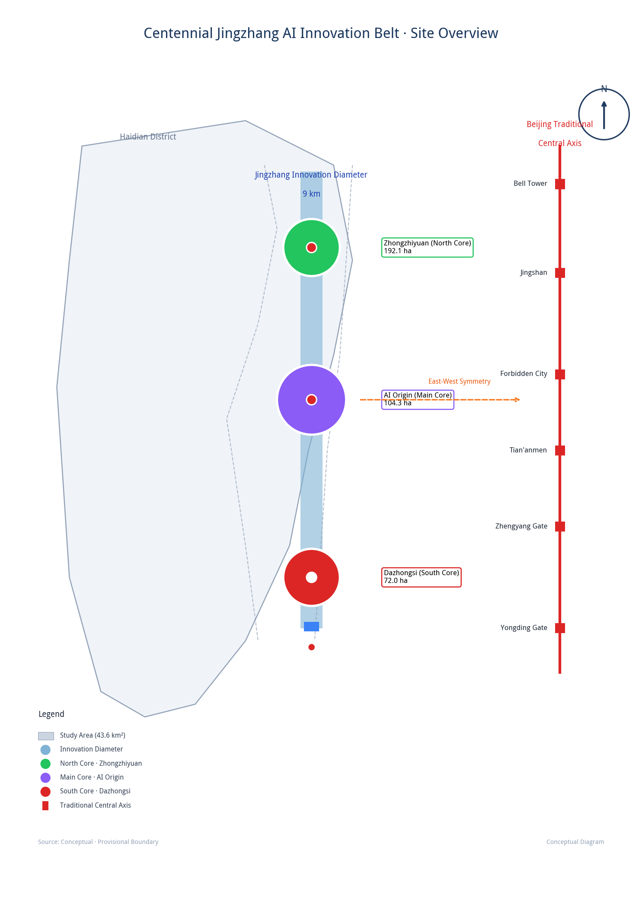
This proposal adopts a "Coordinated Research — Overall Design — Key Areas" three-tier progressive work framework, achieving complete transmission from macro strategy to micro implementation.
2.1.1 Tier 1: Coordinated Research Scope (43.6km²)
Scope Definition: - North to North 5th Ring Road - South to Xizhimen - North 2nd Ring Road - West to Zhongguancun Street - Suzhou Street corridor - East to Xueyuan Road - Xiaoyue River corridor - Total area approximately 43.6 square kilometers [metric:total-research-area]
Work Content: - AI industry development strategy and ecosystem construction research - Regional coordination and spatial pattern optimization research - Transportation and infrastructure system coordination research - Talent community and public service system research - Cultural inheritance and brand strategy research
Core Task: Clarify the strategic positioning, industrial direction, spatial pattern, and support system of the innovation belt from the regional level, providing strategic guidance for overall design.
2.1.2 Tier 2: Overall Design Scope (11.4km²)
Scope Definition: - Approximately 500–800 meters depth on each side of Jing-Zhang Railway Heritage Park - North from Qinghua East Road, south to Xizhimen North Street - Covering three core districts and surrounding linkage areas - Total area approximately 11.4 square kilometers [metric:total-design-area]
Work Content: - Urban renewal overall framework and strategies - Functional layout and land use structure optimization - Building scale and capacity control - Road and transportation system optimization - Public space and blue-green system design - Urban character and building height control - Key project layout and inventory
Depth Requirement: Reach urban design depth at the regulatory detailed planning level, clarifying various control indicators and guidance requirements.
2.1.3 Tier 3: Key Areas Detailed Design (368.4ha)
Scope Definition: Three Core Districts - A1 Collective Intelligence Park District: 192.1 hectares (North Core) - A2 AI Origin Community: 104.3 hectares (Main Core · Wudaokou + Zhichun Road) - A3 Dazhongsi District: 72.0 hectares (South Core) - Total: 368.4 hectares [metric:key-area-total]
Work Content: - District positioning and functional refinement - Spatial structure and layout deepening - Building renewal and renovation plans - Traffic organization and slow traffic system - Public space landscape design - AI scenario implantation and smart design - Risk assessment and response strategies
Depth Requirement: Reach urban design depth at the constructive detailed planning level, which can directly guide subsequent architectural design and engineering implementation.
2.2 Spatial Relationship of Three-Tier Scope
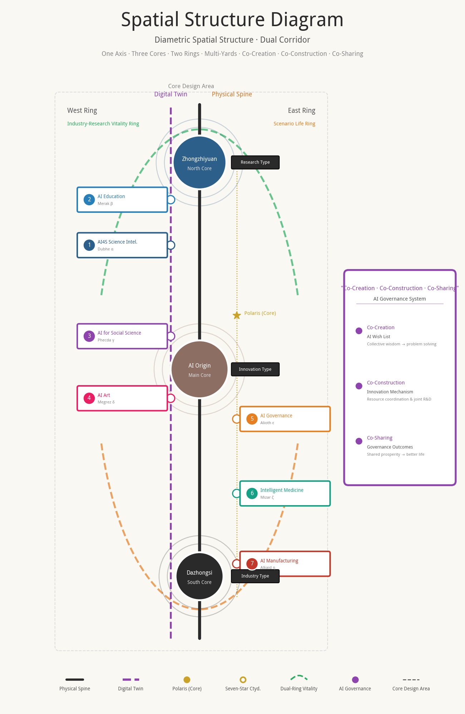
Tier Transmission Relationship:
| Tier | Area | Core Issues | Output Deliverables |
|---|---|---|---|
| Coordinated Research Tier | 43.6km² | Strategic positioning, industrial ecosystem, regional coordination | Strategic research report, industrial plan |
| Overall Design Tier | 11.4km² | Renewal framework, functional layout, character control | Overall urban design, regulatory plan adjustment suggestions |
| Key Areas Tier | 368.4ha | Detailed design, scenario implementation, implementation path | Detailed urban design, project implementation plan |
2.3 Work Methodology and Technical Route
Theory-Led
With General Secretary Xi Jinping's People's City important concept as the fundamental guideline, the Central Urban Work Conference's six-dimension modern city framework (innovative, livable, beautiful, resilient, civilized, smart) as the goal orientation, and Yang Kaizhong's New Spatial Economics as the core methodology, build a theoretical integration system of "People's City Six-Dimension Goal × Spatial Quality Three-Dimension Framework × Diameter-type Spatial Paradigm", establishing a complete theory-policy-space closed loop.
Theoretical Integration Logic: - Value Anchor: The People's City concept establishes the fundamental value orientation of "people-centered", answering the fundamental question of "design for whom" - Goal Framework: The six-dimension modern city goals (innovative, livable, beautiful, resilient, civilized, smart) provide the national-level urban development standard coordinate system - Implementation Path: New Spatial Economics' "spatial quality drives innovation growth" reveals the spatial economic mechanism for the implementation of six-dimension goals - Spatial Paradigm: The Diameter-type "One Diameter · Three Cores · Two Rings · Multiple Courts" transforms theory into operable spatial structure
Correspondence Between Six-Dimension Goals and Three Dimensions of Spatial Quality: | People's City Six Dimensions | New Spatial Economics Quality Dimension | Diameter Spatial Bearing | |-----------------------------|----------------------------------------|-------------------------| | Innovation | Innovative Spatial Quality | Three Core Innovation Nodes + Two-Ring Innovation Ecosystem | | Livable | Livable Spatial Quality | Multiple Courtyards + 15-minute Living Circle | | Beautiful | Livable (Ecological Sub-dimension) | Blue-Green Skeleton + Heritage Park Vitality Belt | | Resilient | Livable (Safety Sub-dimension) | Disaster Prevention Space System + Sponge City | | Civilized | Learning (Cultural Sub-dimension) | Jing-Zhang Cultural Heritage Axis + Public Art | | Smart | Innovative (Smart Governance Sub-dimension) | AI Urban Brain + Full Smart Scenario Coverage |
Three-Tier Connection
Precisely align with the national-Beijing-Haidian three-tier "15th Five-Year Plan", forming a planning system with layered strategy transmission and progressive spatial implementation.
Multi-Dimensional Integration
Integrate multiple professional fields including industrial planning, urban design, transportation planning, landscape design, and smart city to form an integrated solution.
Iterative Optimization
Establish a quantifiable, monitorable, and iterable spatial quality assessment system to ensure the dynamic adaptability and continuous optimization capability of the proposal.
Chapter 3 Industry and Future City Research (Coordinated Research Scope)
3.1 Development Vision: Six-Dimension Quality Supply System Based on New Spatial Economics
The methodological core of this proposal is: taking the causal chain of New Spatial Economics — "spatial quality enhancement → dynamic talent agglomeration → industrial innovation development" — as the mainline, systematically transforming the six-dimensional goals of the people's city into six types of spatial quality supply strategies, and driving talent agglomeration and innovation growth through spatial design means.
3.1.1 Theoretical Mainline: Spatial Quality → Talent Agglomeration → Industrial Innovation
This proposal takes New Spatial Economics as its core methodology, establishing the three-stage causal logic of "spatial quality enhancement — dynamic talent agglomeration — industrial innovation development" as the theoretical mainline running through the entire proposal:
┌─────────────────────┐ ┌─────────────────────┐ ┌─────────────────────┐
│ Spatial Quality │────→│ Dynamic Talent │────→│ Industrial Innovation│
│ Enhancement │ │ Agglomeration │ │ Development │
│ (Design Means) │ │ (Intermediate Var.)│ │ (Ultimate Goal) │
└─────────────────────┘ └─────────────────────┘ └─────────────────────┘
↑ │ │
│ ↓ │
└──── Circular Cumulative Causation ←──┘ ←─── Knowledge Spillover ────┘
Stage 1: Spatial Quality Enhancement (Design Means)
Urban design is not an end in itself, but a means of supplying spatial quality.
Yang Kaizhong's latest research systematically demonstrates the endogenous core status of spatial quality in the spatial economic system: it is no longer an exogenously given "amenity" residual variable in traditional theory, but a core endogenous variable alongside technological innovation, increasing returns, factor mobility, and travel/transport costs, with all six interweaving and co-evolving. [source:SRC-019] This theoretical positioning elevates spatial quality from "supporting facility" to "core driver", fundamentally establishing the strategic value of urban design in innovation-driven development.
Traditional planning regards space as a "container for industry", while this proposal regards space as a "magnet for talent". This shift in perspective is fundamental: the industrial planning logic is "build parks → attract enterprises → gather talents", while the New Spatial Economics logic is "improve quality → gather talents → prosper industry".
Stage 2: Dynamic Talent Agglomeration (Intermediate Variable)
Talent is the core mediating variable between spatial quality and industrial innovation. High-quality space attracts talent agglomeration, and talent agglomeration brings knowledge spillovers and innovation vitality, which in turn drives industrial development.
- Flowing talents: Talents are not "introduced" and then fixed in a certain space, but continuously flow between different quality nodes — from laboratories to incubators, from startup parks to industrial districts, from workspaces to living spaces. Flow itself generates knowledge spillovers.
- Differentiated talent preferences: Different types and developmental stages of AI talents have different preferences for spatial quality, requiring a differentiated quality supply system to attract and retain them.
- Critical mass effect: When talent density crosses a certain critical threshold, it will trigger the positive feedback of knowledge spillovers and enter a self-reinforcing agglomeration track.
Stage 3: Industrial Innovation Development (Ultimate Goal)
Dynamic talent agglomeration ultimately promotes industrial innovation development through mechanisms such as knowledge spillovers, startup incubation, and industrial chain self-organization. It is worth noting that industrial innovation development is not "built" by planning, but "emerges" on the basis of talent agglomeration.
The self-organized evolution of the innovation ecosystem follows the following logic: talents attracted by spatial quality reach critical mass → knowledge spillovers give birth to startup projects → startup projects attract capital and services → successful enterprises drive industrial chain agglomeration → industrial chain agglomeration further enhances spatial quality.
3.1.2 Mapping Framework: Six-Dimension Goals → Six Types of Spatial Quality
The six-dimensional modern city goals of "innovative, livable, beautiful, resilient, civilized, and smart" proposed by the Central Urban Work Conference provide a value coordinate system for this proposal.
| People's City Six Dimensions | Mapped to Spatial Quality Type | Quality Connotation | Corresponding Mechanism in New Spatial Economics |
|---|---|---|---|
| Innovation | Innovation-oriented spatial quality | Entrepreneurial environment, industry-university-research collaboration, innovation community, exchange density | Minimization of knowledge exchange transaction costs → improvement of innovation efficiency |
| Livable | Livable spatial quality | Residential comfort, public services, life convenience, job-housing balance | Livable quality extends talent stay time → improves agglomeration efficiency |
The theoretical significance of this mapping lies in: it transforms the people's city concept from the level of value advocacy into an operable spatial economic analysis framework.
3.1.3 Spatial Supply Pathways for Six Types of Quality
Based on the above mapping framework, this proposal systematically supplies six types of spatial quality through the diameter-type spatial structure.
Innovation-oriented quality supply: Taking "One Diameter · Three Cores · Multiple Courts" as the spatial carrier, reducing the mobility cost of knowledge exchange through linear corridors, meeting the spatial needs of different innovation stages through the three-core gradient configuration, and providing hierarchical exchange scenarios through the multi-court system.
Livable quality supply: Taking "multiple courts" living courtyards and the 15-minute living circle as spatial carriers, reducing commuting time through functional mixing, reducing living costs through talent housing security, and improving life convenience through improved public services.
Beautiful quality supply: Taking Jing-Zhang Railway Heritage Park vitality belt and the blue-green space system as spatial carriers, maximizing landscape coverage efficiency through linear green corridors, strengthening uniqueness and recognition through heritage cultural landscapes, and extending quality experience time through four-season landscape design.
Resilient quality supply: Taking the disaster prevention space system and sponge city facilities as spatial carriers, constructing emergency evacuation corridors through linear open spaces, improving rainwater management elasticity through decentralized sponge facilities, and enhancing security assurance through smart security systems.
Civilized quality supply: Taking the Jing-Zhang Railway cultural heritage axis and public art system as spatial carriers, shaping identity through the century-old Jing-Zhang historical context, enhancing place spirit through public art, and forging community consensus through innovative cultural activities.
Smart quality supply: Taking the AI urban brain and full-scenario smart facilities as spatial carriers, improving spatial operation efficiency through the digital twin base, empowering innovation experience through AI scenarios, and reducing information costs through open data.
The six types of quality are not isolated from each other, but form a composite and superimposed quality supply system along the diameter axis. The closer to the core node, the higher the degree of quality superposition, and the stronger the comprehensive attractiveness to talents.
3.2 Three Strategic Positionings
Based on the core logic of New Spatial Economics — "spatial quality drives talent agglomeration, talent agglomeration drives industrial innovation" — combined with the six-dimensional goals of the people's city and the requirements of the three-tier "15th Five-Year Plan", starting from the hierarchy and types of spatial quality supply, three strategic positionings for the Centennial Jing-Zhang AI Innovation Belt are established.
Positioning 1: National-Level Learning-Oriented + Innovation-Oriented Spatial Quality Supply Highland
(Economic restatement of the original "Haidian Pivot of the National AI Strategy")
Connotation Interpretation: The core of this positioning is not "building an AI highland", but constructing a national-level learning-oriented and innovation-oriented spatial quality supply system — through high-quality academic spaces, research environments, entrepreneurial atmospheres, and exchange scenarios, attracting and agglomerating top AI talents from across the country and even the world.
- Quality supply type: Based on learning-oriented spatial quality (university research resources, academic cultural atmosphere), with innovation-oriented spatial quality as the core (entrepreneurial incubation ecosystem, industry-university-research collaboration, knowledge exchange density)
- Talent agglomeration goal: AI scientists, top researchers, young academic talents, serial entrepreneurs
- Innovation output direction: Basic research original innovation, frontier technological breakthroughs, AI for Science interdisciplinary innovation, governance system innovation
- Spatial bearing: Collective Intelligence Park District (core of learning-oriented quality) + AI Origin Community (core of innovation-oriented quality)
Core Support (New Spatial Economics Interpretation): - Haidian District has the highest density of AI research talent supply sources in the country (Tsinghua, Peking University, Beihang, etc.), providing a natural foundation for learning-oriented quality — this is the "initial endowment" of dynamic talent agglomeration
Positioning 2: Beijing-Tianjin-Hebei Innovation-Oriented + Industry-Oriented Spatial Quality Coordination Hub
(Economic restatement of the original "Core Engine of Beijing-Tianjin-Hebei AI Innovation Coordination")
Connotation Interpretation: The core of this positioning is not "becoming a growth pole", but constructing a hub node for quality gradient coordination in the Beijing-Tianjin-Hebei region — through the innovation-oriented and industry-oriented quality supply of the Diameter Intelligence Axis, attracting and transforming innovative talents and research achievements within the Beijing-Tianjin-Hebei range.
- Quality supply type: With innovation-oriented spatial quality as the hub (connecting the north-south quality gradient), with industry-oriented spatial quality as the export (achievement transformation and industrial landing)
- Talent agglomeration goal: Cross-regionally flowing AI R&D talents, technology transformation experts, industrial operation talents
- Innovation output direction: Technology transformation and pilot incubation, industrial chain collaborative innovation, two-way regional talent flow
- Spatial bearing: AI Origin Community (innovation transformation hub) + Dazhongsi District (industrial agglomeration export) + dual-ring collaboration network
Core Support (New Spatial Economics Interpretation): - Beijing's position as the core area of the international sci-tech innovation center means the highest level of innovation-oriented quality supply capacity, forming a "quality highland" with both siphon and radiation effects on surrounding areas
Positioning 3: Beijing's AI Industry-Oriented + Smart-Oriented Spatial Quality Main Supply Area
(Economic restatement of the original "Main Bearing Area of Beijing's AI Trillion-Level Industrial Cluster")
Connotation Interpretation: The core of this positioning is not "introducing enterprises and forming clusters", but constructing Beijing's highest-energy industry-oriented and smart-oriented spatial quality supply system — through high-quality industrial supporting facilities, business services, application scenarios, and smart facilities, attracting AI industrial talent agglomeration.
- Quality supply type: With industry-oriented spatial quality as the leading factor (industrial chain completeness, business support level, application scenario richness), with smart-oriented spatial quality as the feature (AI scenario empowerment, digital infrastructure, smart governance level)
- Talent agglomeration goal: AI industrial engineering talents, product managers, industry solution experts, operation management talents
- Innovation output direction: AI industrialization scale growth, industry application innovation, AI + real economy integration
- Spatial bearing: Dazhongsi District (core of industry-oriented quality) + smart scenarios along the entire line (smart-oriented quality supply)
Core Support (New Spatial Economics Interpretation): - Beijing's AI industry foundation (enterprise count, talent scale, and financing volume all rank first in the country) provides the demand foundation and initial conditions for self-organized evolution of industry-oriented quality
3.3 Five Core Functions
Based on the full-chain development law of AI innovation ecosystem, five core functions are established:
| Function Category | Function Connotation | Spatial Bearing |
|---|---|---|
| AI Technology Source | Basic research, frontier exploration, original innovation | Universities and institutes, key laboratories, joint R&D centers |
| AI Industry Highland | Full-chain industrial ecosystem, corporate headquarters, unicorn cultivation | Industrial parks, headquarters bases, incubators, accelerators |
3.4 "Three Zones, Two Wings" Spatial Pattern
For the overall AI innovation spatial layout within the coordinated research scope, following the spatial organization logic of "core agglomeration, axial connection, and collaborative empowerment", an overall spatial pattern of "Three Zones and Two Wings" is formed.
3.4.1 Three Zones: Three Core Functional Zones
(1) Northern Innovation Zone — AI Independent Innovation Leading Zone
Its scope covers Tsinghua Science Park, Peking University Science Park, Zhongguancun West District and surrounding areas, with an area of approximately 15.2 square kilometers.
Core functions include: basic research and original innovation, high-end talent cultivation and agglomeration, startup incubation and acceleration, international academic exchange and cooperation.
(2) Central Core Zone — AI Technology Source and Talent Core Zone
Its scope covers Wudaokou, Zhichun Road, and areas along Zhongguancun Street, with an area of approximately 13.8 square kilometers.
Core functions include: AI technology R&D and transformation, innovation and entrepreneurship ecosystem cultivation, talent housing and living services, and AI scenario testing and verification.
(3) Southern Industrial Zone — AI Industry Agglomeration and Application Demonstration Zone
Its scope covers Dazhongsi, Xueyuan South Road, and Xizhimen surrounding areas, with an area of approximately 14.6 square kilometers.
Core functions include: AI industry headquarters agglomeration, industry application solution R&D, scientific and technological achievement transformation and industrialization, and accelerated growth of innovative enterprises.
3.4.2 Two Wings: East-West Collaborative Empowerment
(1) West Wing — Industry-University-Research Collaborative Empowerment Belt
Along the Zhongguancun Street-Suzhou Street line, it connects scientific research resources such as universities and research institutes, national key laboratories, and engineering technology centers, constructing a complete innovation chain of "basic research - applied research - technology transformation".
(2) East Wing — Scenario Application Demonstration Belt
Along the Xueyuan Road-Huayuan Road line, various AI application scenarios and testing and verification bases are arranged, including city-level application scenarios such as smart transportation, smart communities, smart healthcare, and smart education.
The internal logic of the "Three Zones, Two Wings" spatial pattern is: taking the Three Zones as the core bearing bodies, respectively anchoring the upper, middle, and lower reaches of the innovation chain; taking the Two Wings as collaborative empowerment belts, respectively strengthening knowledge supply and scenario traction.
3.5 Benchmarking Study of Global AI Innovation Ecosystem Cases
Eight representative AI innovation district cases worldwide are selected for in-depth benchmarking, extracting lessons and insights that can be drawn upon:
Case 1: Silicon Valley, USA
Key Learnings: - Innovation ecosystem with deep interaction between universities-enterprises-capital
Insight: Haidian District has similar university resources and industrial foundation, and needs to further strengthen capital factors and entrepreneurial culture.
Case 2: Kendall Square, Boston
Key Learnings: - Industry-university-research deep integration model with MIT as the core
Insight: The Collective Intelligence Park district can learn from Kendall Square's "campus-park-street" integration model.
Case 3: Silicon Alley, New York
Key Learnings: - Path of renovating old office buildings into AI-ready spaces
Insight: The renovation of existing buildings along Jing-Zhang can reference New York's AI-ready renovation manual.
Case 4: Toronto-Waterloo AI Corridor
Key Learnings: - Model of linear space connecting multiple innovation nodes
Insight: The linear innovation belt model has successful precedents, and the key lies in the functional organization and transportation connections of core nodes.
Case 5: King's Cross, London
Key Learnings: - Successful practice of railway heritage renewal and tech industry implantation
Insight: Jing-Zhang Railway heritage renewal can learn from King's Cross's heritage activation strategy.
Case 6: Shenzhen Qianhai Shenzhen-Hong Kong Modern Service Industry Cooperation Zone
Key Learnings: - Development model driven by institutional innovation
Insight: Institutional innovation is one of the core competitiveness of AI innovation zones.
Case 7: Shanghai Zhangjiang Science City
Key Learnings: - Innovation model driven by large-scale scientific facility clusters
Insight: The layout of major sci-tech infrastructure is crucial for the innovation ecosystem.
Case 8: Hangzhou Future Sci-Tech City (Dream Town)
Key Learnings: - Startup ecosystem cultivation through characteristic town model
Insight: Startup incubation system and talent services are the foundational capabilities of innovation zones.
3.6 Brand Identity System
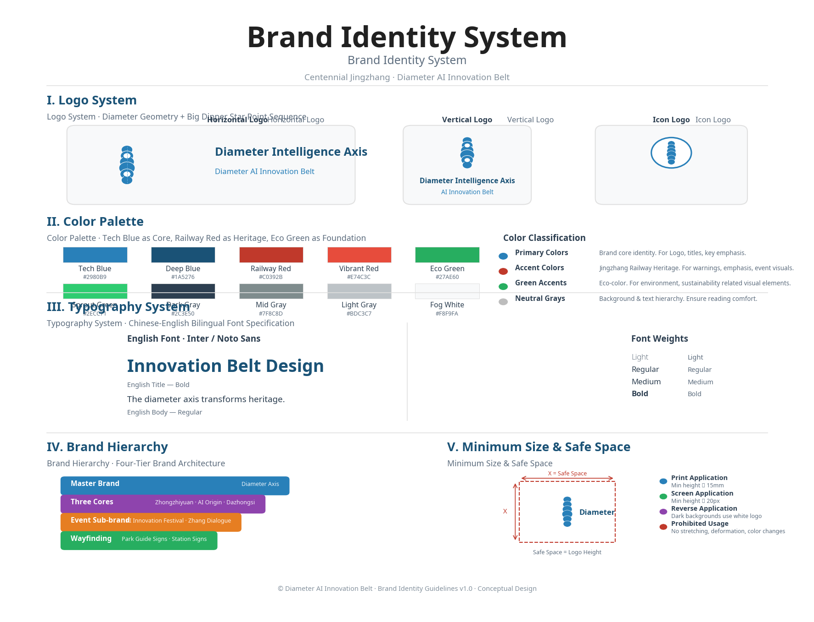
A complete brand identity system is a core project for the innovation belt to establish differentiated recognition, build identity cohesion, and form long-term memory points.
3.6.1 Naming System
Main Name: Centennial Jingzhang · Diameter Axis
The naming logic is interwoven from three dimensions, forming a trinity brand core of "historical heritage × spatial innovation × intelligent creation for the future":
| Naming Dimension | Core Term | Cultural Connotation | Value Orientation |
|---|---|---|---|
| Temporal Dimension | Centennial Jingzhang | The Jing-Zhang Railway opened in 1909 as the first railway independently designed and built by the Chinese, representing the origin and inheritance of the century-old spirit of independent innovation | Historical roots, cultural tracing |
| Spatial Dimension | Diameter Axis | An innovation central axis that stands in east-west symmetry with Beijing's traditional central axis, geometrically presenting a diameter-penetrating form. "Dui" (pair) implies symmetry, dialogue, and connection; "Jing" (path) implies route, directness, and meridian | Spatial paradigm, structural originality |
English Name: Centennial Jingzhang · Diameter Axis — AI Innovation Belt Urban Design Proposal - Centennial Jingzhang: Preserving pinyin to strengthen cultural recognition
Short Names: Diameter Intelligence Axis / Jingzhang Intelligence Axis - Use "Diameter Intelligence Axis" on formal occasions, emphasizing the originality of the spatial paradigm
Abbreviation: DZA (Diameter · Zhi · Axis) - Derived from the initial D of Diameter + initial Z of Zhi (intelligence) + initial A of Axis
Code Name: Beidou (Big Dipper) Plan - Echoes the spatial imagery of "Big Dipper + North Star", symbolizing direction-setting for AI innovation - Seven featured AI scenarios distributed along the Jingzhang innovation diameter at "three cores + four courts" spatial nodes, forming a quality gradient from "basic research → interdisciplinary empowerment → application landing" from north to south, echoing the ladle-shaped pattern of the Big Dipper - Symbolizes guidance and direction, inheriting the spirit of Jing-Zhang Railway as "the first in independent innovation" - See Section 5.5 "Seven Featured AI Scenario Spatial System" for details
3.6.2 Brand Slogan System
Main Slogan: Centennial Self-Reliance · Diameter Intelligent Creation - "Centennial Self-Reliance" — inheriting the innovation spirit of Jing-Zhang Railway's independent design and construction
Sub-slogan: An Innovation Epic of a Railway, An AI Era of a Central Axis - The first line reviews history: Jing-Zhang Railway is an innovation epic in China's railway history
Annual Theme Slogans (Annual Ring Level): Set an annual theme each year, corresponding to the development stage - Launch Year (2026): "Initiation · The Beginning of the Diameter" — laying the foundation and opening new prospects - Acceleration Year (2028): "Inheritance · The Prosperity of the Intelligence Axis" — initial scale achieved - Maturity Year (2030): "Transformation · The New Paradigm" — model output
Spatial Sub-brand Slogans (Differentiated Positioning of Three Cores):
| Core District | Sub-brand Name | Slogan | Positioning |
|---|---|---|---|
| Collective Intelligence Park District | Zhi Yuan (Intelligence Source) | Gathering Intelligence into Source · Setting Out for Innovation | Basic research and original innovation source |
| AI Origin Community | Zhi He (Intelligence Core) | Wudaokou Origin · AI Forefront | Startup incubation and industrial hub |
3.6.3 Logo Design
Design Concept: Diameter Geometry + Big Dipper Light Point Sequence
The logo takes the "diameter" geometric relationship as the core form, uses the light point sequence of the Big Dipper as the visual symbol, and integrates the linear gene of railway tracks with the node characteristics of AI neural networks, building a brand identity with both spatial order and technological imagination.
Main Logo Graphic Composition:
-
Diameter Main Axis (vertical/horizontal main line) - A main diameter line running through the logo, representing the diameter innovation axis
-
Big Dipper Light Point Sequence - Seven luminous nodes distributed along the diameter axis, corresponding to the arrangement of the Big Dipper
-
North Star Anchor Point - A brightest star is set at the northern end of the diameter axis, corresponding to the North Star
-
Symmetric Dual Rings - Semi-circular arcs on each side of the diameter axis, constituting the "dual rings" imagery
Logo System Composition:
| Logo Type | Form Description | Application Scenarios |
|---|---|---|
| Full Logo | Graphic + Chinese full name + English full name, top-bottom or left-right structure | Official documents, building signage, main visuals of large-scale events |
| Mark | Core graphic of only diameter geometry + Big Dipper light points | Icons, Apps, badges, social media avatars |
Usage Guidelines: - Minimum Size: Full logo minimum print width 30mm, digital display minimum width 80px - Safe Clear Space: Clear space around the logo shall not be less than 1/4 of the logo height, ensuring recognition integrity - Prohibition of Deformation: No stretching, tilting, proportion changing, adding special effects, or changing color relationships - Monochrome Versions: Three monochrome versions are provided: positive black, reverse white, and special gold, suitable for different materials and backgrounds
3.6.4 Color System
The color system takes "Tech Blue" as the primary color, echoing the characteristics of the AI era; takes "Railway Ochre" as the secondary color, inheriting the historical memory of Jing-Zhang Railway; takes "Innovation Gold" as the accent color, symbolizing innovation value and achievement; and takes "Eco Green" as the supplementary color, reflecting the concept of green development.
Primary Color:
| Color Name | HEX | RGB | CMYK | Usage Proportion | Semantics |
|---|---|---|---|---|---|
| Diameter Blue | #0A2463 | 10, 36, 99 | 100, 85, 20, 40 | ~60% | Technology, rationality, depth, future |
Secondary Colors:
| Color Name | HEX | RGB | CMYK | Usage Proportion | Semantics |
|---|---|---|---|---|---|
| Railroad Ochre | #B5651D | 181, 101, 29 | 20, 55, 90, 15 | ~20% | History, inheritance, industry, warmth |
| Intelligence Cyan | #3E92CC | 62, 146, 204 | 65, 25, 10, 0 | ~10% | Wisdom, clarity, connection |
Accent Colors:
| Color Name | HEX | RGB | CMYK | Usage Proportion | Semantics |
|---|---|---|---|---|---|
| Innovation Gold | #E9B44C | 233, 180, 76 | 5, 25, 70, 0 | ~5% | Achievement, value, quality |
| Eco Green | #2D8659 | 45, 134, 89 | 80, 20, 75, 10 | ~5% | Ecology, sustainability, vitality |
Neutral Colors:
| Color Name | HEX | RGB | Usage Scenarios |
|---|---|---|---|
| Ink Black | #1A1A2E | 26, 26, 46 | Main titles, body text on dark backgrounds |
| Dark Gray | #4A4A68 | 74, 74, 104 | Subtitles, important information |
Usage Proportion Guidelines: - Primary color 60% + secondary colors 25% + accent colors 5% + neutral colors 10% (recommended proportion for color application)
3.6.5 Typography System
The typography system follows the principles of "function first, unified style, compliant and commercializable", building a complete font stack with Chinese, English, and numerical support.
Chinese Heading Font: Source Han Serif SC - Bold/Heavy - Source: Open source font jointly developed by Adobe and Google, licensed under SIL Open Font License
Chinese Body Font: Source Han Sans SC - Regular/Medium - Source: Open source font jointly developed by Adobe and Google, licensed under SIL Open Font License
English Heading Font: Inter - Bold/Black - Source: The Inter Project, licensed under SIL Open Font License
English Body Font: Inter - Regular/Medium - Source: Same as above
Numerical Font: JetBrains Mono - Medium/Bold - Source: Developed by JetBrains, licensed under SIL Open Font License 2.0
Typography Usage Guidelines: - Level 1 headings: Source Han Serif Heavy / Inter Black, font size adjusted according to medium
3.6.6 Brand Hierarchy
Build a four-level brand architecture of "one belt main logo / three core sub-brands / event sub-brands / wayfinding system sub-brand", with both unified brand recognition and support for differentiated expression in different scenarios.
Level 1: One Belt Main Brand - Brand name: Centennial Jingzhang · Diameter Axis
Level 2: Three Core Sub-brands - Zhi Yuan · Collective Intelligence Park (North Core): leaning toward academic blue tone, highlighting the imagery of "source"
Level 3: Event Sub-brands - Jing-Zhang AI Innovation Culture Festival (annual ring-level flagship event)
Level 4: Wayfinding System Sub-brand - Diameter Wayfinding System
Brand Hierarchy Management Principles: - Unity: All sub-brands must be designed within the main brand visual framework to ensure brand asset accumulation
3.6.7 Application Guidelines
The normative direction of the brand identity system in various application scenarios, providing guidance for subsequent brand implementation.
Brochures and Printed Materials: - Planning and design brochures: Cover uses vertical combination of main logo, internal grid system based on modular design
Exhibition Boards and Displays: - A0/A3 exhibition boards: Unified layout system, brand color bar on the left + content area on the right
Websites and Digital Products: - Official website: Responsive design, first screen with large visuals + dynamic diameter geometry effects
Wayfinding System: - Park master plan: Use brand color coding for functional zoning
Peripheral Products and Souvenirs: - Office stationery: Letterhead, envelopes, business cards, notebooks, pens
Note: The above brand identity system design is a conceptual proposal recommendation.
3.7 Future City Vision
Vision Description
By 2030, the Centennial Jing-Zhang AI Innovation Belt will be built into: - World-class AI innovation ecosystem highland: Gathering the world's top AI talents and enterprises, forming a globally influential AI industrial cluster - Modern people-oriented city demonstration belt: Practicing the concept of "people's city built by the people, people's city for the people", creating high-quality living spaces - Model of urban renewal and innovation integration: Benchmark for industrial heritage activation and utilization, model for existing spatial value reshaping - Green-intelligence integrated future city model: Eco-Intelligent Agent City with deep integration of green low-carbon and smart technology
Core Development Indicators
| Dimension | 2030 Target | Current Baseline (2024) | Growth Rate |
|---|---|---|---|
| AI Core Industry Scale | ≥300 billion yuan | ~200 billion yuan | +50% |
| Number of Unicorn Enterprises | ≥40 | ~25 | +60% |
[metric:target-indicators-2030]
3.8 Central Axis - Diameter Innovation Paradigm: Theoretical Refinement and Model Value
The "Central Axis - Diameter" innovation spatial paradigm proposed in this proposal is not only applicable to the specific scenario of the Centennial Jing-Zhang AI Innovation Belt, but also has universal theoretical value and promotion significance.
Evolving from a spatial paradigm to a spatial economic paradigm: The diameter innovation paradigm is not only a spatial organization method, but also a set of innovation growth mechanisms based on New Spatial Economics.
3.8.1 Paradigm Definition and Core Characteristics
The "Central Axis - Diameter" innovation paradigm refers to an innovation spatial organization model that takes a high-quality linear public space as the urban innovation central axis, connecting innovation nodes, industrial blocks, and living districts along the axis, forming a symmetrically balanced, bidirectionally empowered, and gradiently growing innovation spatial pattern.
Core characteristics include:
- Axial Symmetry: Taking the linear public space as the diameter axis, the functions on both sides are symmetrically complementary and the landscape is evenly distributed, forming a spatial image with a strong sense of order and direction. Different from traditional urban central axes that center on ritual system and symbolism, the diameter innovation axis centers on efficiency and vitality, maximizing spatial utilization efficiency and innovation exchange density through symmetrical layout.
- Linear Quality Supply: Continuously supplying high-quality public spaces along the axis — including green spaces, plazas, cultural facilities, exchange venues, etc. — forming an innovation atmosphere of "changing scenery with each step, innovation everywhere". Linear space has a longer contact interface and higher quality penetration rate than point-like space, which is the spatial realization of New Spatial Economics' "linear contact efficiency advantage".
- Gradient Functional Organization: Forming a functional gradient of "source — incubation — acceleration — industry" along the axis, corresponding to each link of the innovation chain. The functional gradient corresponds one-to-one with spatial positions, giving knowledge flow clear directionality and continuity, reducing cross-link communication friction. From the perspective of New Spatial Economics, this gradient is essentially a talent flow gradient driven by quality gradient.
- Dual-Ring Ecological Support: Forming an industry-university-research collaboration ring and a scenario application ring on both sides of the main diameter, empowering the innovation axis from the knowledge supply side and the demand traction side respectively, constructing a complete innovation ecosystem of "one diameter leading, dual rings supporting". The economic significance of the dual rings lies in transforming one-way flow into circular flow, enhancing system resilience and self-organization capacity.
3.8.2 Economic Principles of the Paradigm
The economic foundation is the systematic application of new spatial economics at the spatial level:
- Linear quality supply scale effect — 9km diameter serves ~150,000 innovation workers within 500m on both sides, with much lower per-capita quality supply cost than point-park models.
- Distance decay law of knowledge exchange — Innovation subjects arranged along linear corridors, most exchanges within 5-15 min walk, systematically improving knowledge spillover efficiency.
- Gradient-driven dynamic agglomeration — "Learning → Innovation → Industry" quality gradient creates talent flow "quality difference"; flow itself generates spillovers, more dynamic than static distribution.
- Bidirectional flow innovation multiplier — Research talent southward for industrial transformation, industry talent northward for tech sources; bidirectional flow produces more knowledge collisions.
- Circular cumulative causation self-organization — Initial quality supply pushes past critical talent mass, entering "quality → talent → innovation → quality" self-reinforcing track.
3.8.3 Comparison with Traditional Spatial Development Theories: Transcendence from the Perspective of New Spatial Economics
The diameter innovation paradigm is built on the basis of traditional spatial development theories, but achieves important transcendence in core logic.
| Theory | Core Logic | Driving Mechanism | Spatial Form | Transcendence of the Diameter Paradigm |
|---|---|---|---|---|
| Growth Pole Theory (Perroux) | Polarization effect + diffusion effect | Industrial agglomeration drives growth | Point-like growth pole radiation | Transcending the "industry-driven" logic and shifting to the "quality-driven" logic; the growth pole is the result of enterprise agglomeration, while the diameter paradigm is the result of talent agglomeration |
| Point-Axis Development Theory (Lu Dadao) | Point-axis-plane progressive diffusion | Transportation corridors drive development | Point-axis spatial structure | Transcending the "transportation-driven" logic and shifting to the "quality-driven" logic; the function of the axis is upgraded from a transportation channel to a quality spine + exchange corridor |
Specifically, the diameter paradigm achieves transcendence in the following three aspects:
-
From "transportation cost" to "exchange cost": Traditional theories focus on minimizing freight transportation costs (such as industrial location theory, point-axis development theory), while the diameter paradigm focuses on minimizing knowledge exchange costs.
-
From "enterprise agglomeration" to "talent agglomeration": The analytical unit of traditional theories is the enterprise (industrial clusters, growth poles are all enterprise-level concepts), while the analytical unit of the diameter paradigm is talent — talent is the carrier of knowledge, talent flow is the way of knowledge spillover, and talent agglomeration is the root of innovation vitality.
-
From "top-down planning" to "self-organized evolution": The implicit logic of traditional theories is the top-down path of "planning and construction → industrial development", while the logic of the diameter paradigm is the bottom-up path of "quality supply → talent agglomeration → ecosystem self-organized emergence".
3.8.4 Comparison with the Traditional Central Axis Model
The diameter innovation paradigm inherits the spatial wisdom of China's traditional urban central axis, but achieves contemporary translation in value orientation, functional logic, and operating mechanism:
| Dimension | Traditional Ritual Central Axis | Diameter Innovation Central Axis |
|---|---|---|
| Value Core | Ritual order, symbol of power | Innovation efficiency, talent vitality |
| Spatial Logic | Symmetrical balance, sense of ritual | Symmetrical empowerment, exchange density |
The paradigm evolution from the traditional central axis to the diameter innovation axis is essentially a reflection of the transformation of urban development driving force from "administrative-driven" to "innovation-driven" in spatial form.
3.8.5 Applicability Conditions and Promotion Value
Applicability Conditions: - The city has linear infrastructure heritage that can be renovated and utilized (railways, river channels, elevated roads, etc.)
Promotion Value: - Stock renewal path: Provides an endogenous path for old city renewal that drives industrial upgrading through the improvement of public space quality, avoiding large-scale demolition and construction - Regional collaboration model: Linear corridors naturally have connectivity and can span multiple administrative districts to achieve cross-district collaborative innovation - Cultural inheritance and innovation: Transforming industrial heritage or historical corridors into innovation spines, realizing a time-space dialogue between historical memory and future development - Replicable and promotable: The paradigm has clear spatial organization logic and quantifiable quality evaluation system, facilitating other cities to carry out adaptive applications according to their own conditions
3.8.6 Strategic Significance of Beijing's Dual Central Axis Pattern
Beijing's traditional central axis (Yongdingmen — Bell and Drum Towers) represents the ritual order and cultural accumulation of five thousand years of Chinese civilization; while the Jing-Zhang AI Innovation Diameter Axis represents China's innovation confidence and future exploration as it moves toward the AI era.
From a larger spatial-temporal scale, the traditional central axis carries the civilization inheritance of "past-present", and the diameter innovation axis carries the innovation growth of "present-future".
3.9 Regional Synergy Development Mechanism
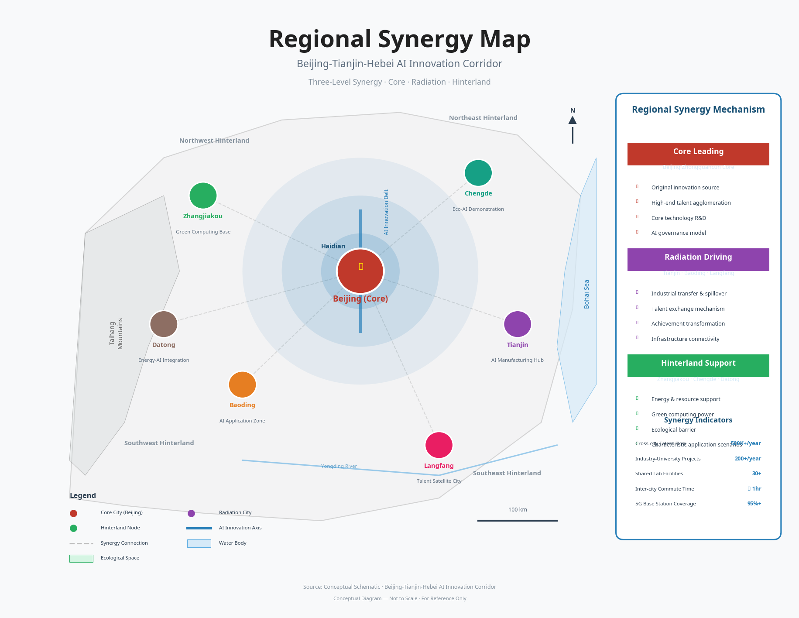
The Centennial Jingzhang · Diameter Axis AI Innovation Belt is not an isolated "enclave", but a key node in Beijing's international sci-tech innovation center construction network. Establishing and improving a regional synergy development mechanism is a strategic necessity for the innovation belt to integrate into Beijing's "Three Cities and One Zone" pattern and radiate to the Beijing-Tianjin-Hebei region and even the whole country.
Important Note: The regional synergy mechanisms described in this section are all conceptual suggestions, intended to propose ideas and directions for synergy development, and do not constitute any government commitment, signed arrangement, or statutory planning content.
3.9.1 Overall Framework of Regional Synergy
Based on the main platform pattern of Beijing's international sci-tech innovation center "Three Cities and One Zone", clarify the differentiated synergy positioning between the Diameter Intelligence Axis and surrounding innovation nodes, and build an overall regional synergy framework of "connecting science in the north, linking future in the east, connecting transformation in the south, inheriting sources in the west, and radiating to Beijing-Tianjin-Hebei".
Synergy Relationship with Beijing's "Three Cities and One Zone":
| Synergy Object | Spatial Orientation | Functional Positioning | Synergy Direction | Diameter Intelligence Axis Role |
|---|---|---|---|---|
| Huairou Science City | Northeast direction | Basic research large facility cluster | Basic research results docking, large scientific device sharing, joint research on major sci-tech projects | Application transformation hub |
| Future Science City | Due north direction | Future industrial technology innovation | Industry-university-research linkage in energy technology, new materials, advanced manufacturing and other fields | Scenario verification platform |
Synergy with Key Innovation Communities:
- North Latitude Community (40°N Innovation Community): Located on the northwest side of the innovation belt, focusing on youth entrepreneurship and community building. Synergy directions include two-way flow of innovative talents, youth startup incubation linkage, and community governance experience mutual learning.
- Zhongguancun Software Park/West District: Located on the west side of the innovation belt, a mature IT industry cluster. Synergy directions include industrial gradient transfer, computing power resource sharing, and enterprise incubation relay.
- Xueyuan Road University Cluster: Located on the east side of the innovation belt, gathering universities such as Beihang, BUPT, USTB, and CAU. Synergy directions include industry-university-research integration, nearby transformation of sci-tech achievements, and campus opening linkage.
Synergy with Beijing-Tianjin-Hebei Region: - Link northward with Zhangjiakou and Chengde: undertaking extended demands such as AI computing power infrastructure and data centers
3.9.2 Five Synergy Interfaces
Targeting key links in the flow of innovation elements, design five synergy interfaces to ensure regional synergy is operable, measurable, and sustainable.
Interface 1: Knowledge Spillover Interface - Function: Promote the flow of scientific research results from the source to the application end - Mechanism: Establish cross-regional joint laboratories, share literature databases, and regular academic exchange programs - Key Docking: Huairou Science City (basic research) → Diameter Intelligence Axis (applied research) → E-Town (industrialization) - Conceptual Indicators: Annual number of co-published papers, joint patent applications, cross-institutional cooperation projects
Interface 2: Talent Flow Interface - Function: Facilitate the free flow of innovative talents within the region - Mechanism: Talent qualification mutual recognition, talent apartment interconnection, joint recruitment of postdoctoral mobile stations, "dual-appointment" scientific research positions - Key Docking: Two-way flow between university research talents ↔ enterprise R&D talents ↔ government think tank talents - Conceptual Indicators: Cross-institutional talent flow rate, number of jointly trained talents, number of dual-appointment experts
Interface 3: Computing Power Scheduling Interface - Function: Coordinate intelligent computing resources within the region to achieve efficient allocation and flexible scheduling of computing power - Mechanism: Establish a regional computing power scheduling platform, unify computing power access standards, and dynamically allocate according to demand priority - Key Docking: Collaborative scheduling of Diameter Intelligence Axis Intelligent Computing Center + Zhangjiakou Data Center Cluster + Yizhuang Supercomputing Center - Conceptual Indicators: Computing power utilization peak/valley difference, cross-regional computing power scheduling ratio, average computing power response time
Interface 4: Testing and Verification Interface - Function: Provide a full-chain verification scenario for AI technology from laboratory to large-scale application - Mechanism: Establish a four-level verification system: "laboratory verification — block scenario verification — city-level verification — industry-level verification" - Key Docking: Diameter Intelligence Axis provides block-level AI scenario verification, E-Town provides industry-level verification, Xiong'an/Zhangjiakou provide city-level verification - Conceptual Indicators: Annual number of verified AI products/services, verification pass rate, conversion rate from verification to industrialization
Interface 5: Achievement Transformation Interface - Function: Open up the transformation channel of sci-tech achievements from "bookshelf" to "shelf" - Mechanism: Co-build technology transfer centers, share pilot test bases, jointly establish achievement transformation funds, and coordinate intellectual property protection - Key Docking: Universities/research institutes (achievement source) → Diameter Intelligence Axis (pilot incubation) → E-Town/Tianjin-Hebei (large-scale production) - Conceptual Indicators: Annual technology contract turnover, achievement transformation rate, number of industrialization landing projects
3.9.3 Synergy Mechanism Design
Around the five synergy interfaces, design five institutionalized synergy mechanisms to ensure the normal and standardized operation of synergy work.
Mechanism 1: Joint Conference Mechanism - Composition: Composed of relevant departments of municipal and district governments, management committees of each synergy region, representatives of key universities and enterprises - Responsibilities: Review annual synergy work plans, coordinate major synergy matters, and resolve cross-regional cooperation obstacles - Frequency: Hold a regular work meeting every quarter and a plenary meeting every year - Administrative Body: Establish a joint conference secretariat, proposed to be attached to the innovation belt management office, responsible for daily coordination - Nature Note: This is a conceptual suggestion mechanism. The specific establishment shall be separately studied in accordance with relevant regulations and procedures.
Mechanism 2: Joint Project Research Mechanism - Model: Release joint research guidelines around key areas, encouraging cross-institutional and cross-regional teams to apply - Funding: Establish a special fund for collaborative innovation to provide supporting support for joint research projects - Management: Establish a whole-process tracking and evaluation mechanism for projects, implementing "milestone nodes + dynamic adjustment" management - Achievements: Intellectual property sharing, joint paper authorship, achievement transformation benefits distributed according to contribution - Nature Note: The specific implementation measures, funding standards, and intellectual property arrangements for joint project research shall be separately negotiated by the participating parties.
Mechanism 3: Data Sharing Mechanism - Principles: Follow the principles of "on-demand sharing, hierarchical classification, safe and controllable, and compliant use" - Scope: Non-confidential data such as industrial data, talent data, infrastructure data, and public service data - Technology: Realize "data available but not visible" based on privacy computing, federated learning and other technologies - Security: Establish a data security assessment mechanism to clarify data use boundaries and accountability - Nature Note: Data sharing involves legal requirements such as data security and personal information protection. Specific implementation shall strictly comply with laws and regulations such as the Data Security Law and the Personal Information Protection Law.
Mechanism 4: Talent Mutual Recognition Mechanism - Content: Establish a cross-regional talent evaluation standard mutual recognition system, promoting the mutual recognition and interoperability of talent qualifications, professional titles, and achievements - Services: Talent service "all-in-one card" — providing city-wide services in housing, medical care, children's education, entry-exit, etc. - Incentives: Establish a "Collaborative Innovation Talent Award" to recognize talents who have made outstanding contributions to cross-regional cooperation - Nature Note: Talent mutual recognition involves policy adjustments in many aspects such as staffing, social security, and household registration, which need to be coordinated and promoted at the municipal level.
Mechanism 5: Event Linkage Mechanism - Content: Jointly organize brand events, set up branch venues mutually, share guest resources, and conduct joint publicity and promotion - Flagship Events: Jing-Zhang AI Innovation Culture Festival sets up branch venues in Huairou / Future Science City / E-Town - Daily Events: Innovation activities in all regions are uniformly included in the "Diameter Intelligence Axis Event Calendar" to achieve information sharing - International Events: Jointly participate in international exhibitions, jointly hold international conferences, and jointly carry out international talent recruitment - Nature Note: The specific forms and contents of event linkage shall be determined through negotiation according to the actual situation of each participant.
3.9.4 Regional Spatial Pattern Illustration
On a larger regional scale, the Centennial Jingzhang · Diameter Axis AI Innovation Belt plays the role of a strategic fulcrum of "core hub and innovation pilot field" in Beijing's "Three Cities and One Zone" pattern.
Spatial Pattern Positioning:
From the perspective of Beijing's city-wide innovation spatial pattern, the Diameter Intelligence Axis has the unique location of "one axis connecting three cities, one core running through east and west": - Northward: Docking with Future Science City and Huairou Science City, undertaking the application and transformation of cutting-edge technologies - Westward: Deeply integrating with the core area of Zhongguancun Science City, sharing the intellectual resources of universities and institutes - Southward: Linking with Beijing E-Town, providing industrial landing scenarios for AI achievements - Eastward: Radiating to the Xueyuan Road University Belt and CBD, expanding application scenarios and business services
Strategic Fulcrum Functions:
| Fulcrum Function | Specific Connotation | Value in Regional Pattern |
|---|---|---|
| Spatial Connector | Linear spatial form is naturally suitable for connecting multiple innovation nodes | Organizing dispersed innovation resources into a network through the diameter axis |
| Innovation Pilot Field | Stock renewal space in the city center, suitable for technology pilot testing and scenario verification | Connecting basic research and industrialization, filling the "valley of death" |
Regional Synergy Spatial Pattern Schematic: - Taking the Diameter Intelligence Axis as the north-south main ridge, connecting Zhongguancun Science City in the west and Xueyuan Road Innovation Belt in the east, forming a "丰" (abundance) shaped regional innovation structure — note: the Chinese character "丰" symbolizes abundance and the multi-axis intersection pattern
Chapter 4 Urban Renewal and Regulatory-Level Urban Design (Overall Design Scope)
4.1 Industry Development Goals
4.1.1 Industry Scale Targets
By the end of the "15th Five-Year Plan" (2030), within the innovation belt scope: - AI core industry operating revenue exceeds 300 billion yuan [metric:industry-scale-target]
4.1.2 Industrial Structure Targets
Build an industrial system of "one main, two wings, multiple supports":
One Main: AI Core Industry - Foundation layer: Computing power infrastructure, AI chips, basic software
Two Wings: Sci-Tech Services + Future Industries - West Wing Sci-Tech Services: Sci-tech finance, intellectual property, legal services, consulting and evaluation
Multiple Supports: Supporting Industries - Digital creativity, smart education, smart healthcare, intelligent transportation, etc.
4.1.3 Industrial Spatial Layout
| Industry Type | Main Bearing District | Proportion | Featured Directions |
|---|---|---|---|
| AI Basic Research & Frontier Technology | Collective Intelligence Park District | 25% | Large models, general AI, AI for Science |
| AI Technology Incubation & Entrepreneurship | AI Origin Community | 35% | Applied AI, vertical AI, AIGC |
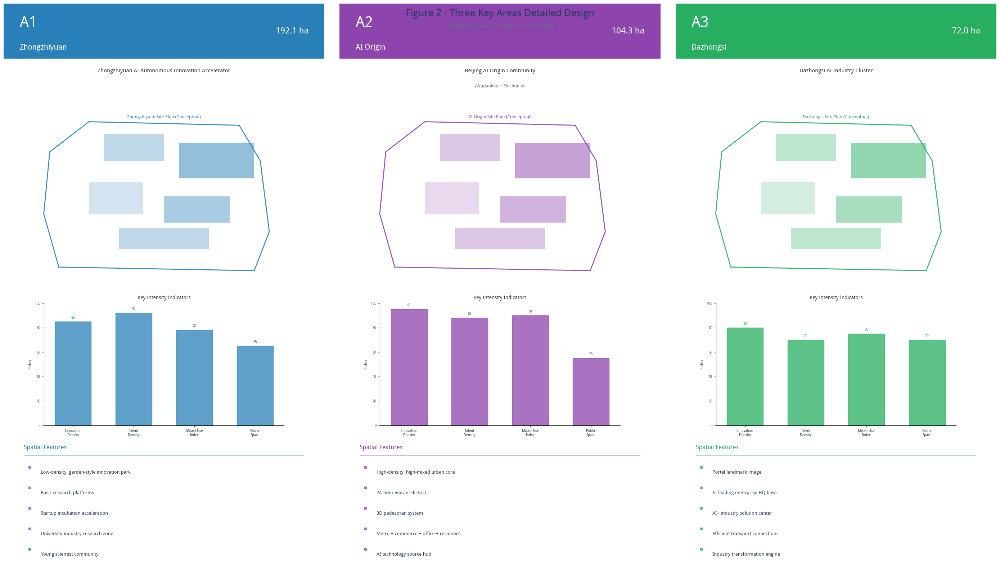
4.2 Functional Layout Structure
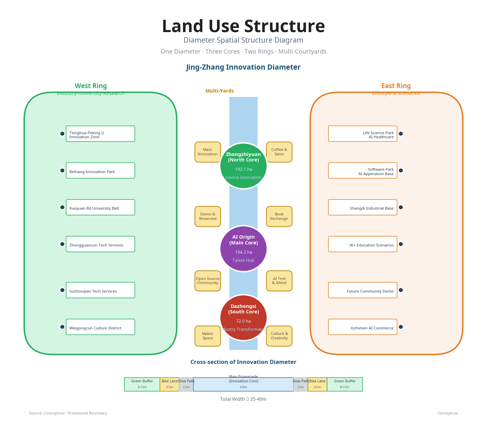
4.2.1 Overall Layout: One Diameter · Three Cores · Two Rings · Multiple Courts
Based on new spatial economics' "spatial quality → dynamic talent agglomeration → industrial innovation" causal chain, the Jingzhang Innovation Diameter serves as the quality spine, three core districts as gradient quality nodes, east-west dual rings as circular flow support, and multiple innovation courtyards as mesoscopic exchange nodes, forming a well-proportioned and clearly layered spatial structure.
| Structural Element | Spatial Form | Economic Function | Design Principle |
|---|---|---|---|
| One Diameter | 9km linear public space spine | Quality supply main axis, knowledge spillover channel | Continuous interface, gradient quality, linear efficiency advantage |
| Three Cores | Three clustered core districts (Zhongzhiyuan / AI Origin / Dazhongsi) | Gradient quality nodes, talent agglomeration poles | Learning → Innovation → Industry quality gradient, specialized division of labor |
| Two Rings | East-west circular supporting rings | Ecological circulation support, dual-end empowerment | Industry-university-research coordination ring (west) + scenario application ring (east) |
| Multiple Courts | Scattered micro-spaces along the diameter | Mesoscopic exchange nodes, mobility cost reducers | 300-500m spacing, themed diversity, step-by-step scenic variation |
The three cores are not simple functional zoning but a spatial quality gradient sequence along the diameter axis, corresponding to different stages of talent dynamic agglomeration: - North Core · Zhongzhiyuan (learning quality): Source of basic research, attracting research talents - Middle Core · AI Origin (innovation quality): Innovation transformation hub, attracting startup talents - South Core · Dazhongsi (industry quality): Industrial transformation terminal, attracting industrial talents
The quality gradient from north to south drives bidirectional talent flow — research talent southward for industrial transformation, industry talent northward for tech sources — generating more knowledge collisions than unidirectional flow, achieving an innovation multiplier effect.
4.2.2 Functional Mixing Strategy: Enhancing the Composite Supply Efficiency of Spatial Quality
Based on the New Spatial Economics concept of "industry-city-people integration", high-intensity functional mixing is implemented.
Functional mixing is not a simple patchwork of functions, but taking the daily behavior trajectory of talents as clues, organically organizing various activities such as work, life, learning, and socializing within walking distance, reducing the mobility cost of talents between different functional spaces and increasing the probability of chance encounters.
Vertical Mixing (Building Level): - Basement: Parking, municipal utilities, commerce
The economic logic of vertical mixing: superimposing multiple functions such as residence, office, and commerce in the same building, enabling talents to meet multiple needs in the vertical direction, greatly reducing the mobility cost of cross-functional activities, while increasing the probability of encounters between people with different functions in the building's public spaces.
Horizontal Mixing (Block Level): - Mixed layout of office, residential, commercial, and public services within each block unit
The economic logic of horizontal mixing: achieving functional compounding at the block scale, enabling talents to complete most daily activities within a 5-minute walk, reducing commuting and long-distance travel.
Mixing Ratio Control (Differentiated Configuration Based on Talent Structure):
| District | Industrial Office | Residential | Commercial Services | Public Space | Mixing Logic (Based on Talent Types) |
|---|---|---|---|---|---|
| Collective Intelligence Park | 55% | 25% | 10% | 10% | Research talents are the mainstay, requiring a higher proportion of R&D office and residence, while focusing on the academic exchange function of public space |
| AI Origin Community | 45% | 30% | 15% | 10% | Entrepreneurial talents are the mainstay, requiring the highest proportion of residence and commercial services (social + life), with relatively flexible office space |
The differentiated configuration of mixing ratios embodies the New Spatial Economics principle of "quality supply matching talent preferences" — different types of talents have different preferences for the ratio of functional mixing, and the three-core districts carry out targeted functional mixing design according to their respective dominant talent types, maximizing the matching efficiency of quality supply.
4.2.3 Summary of Spatial Economic Mechanisms
The design logic of the diameter-type spatial structure is rooted in the core theory of New Spatial Economics, and its economic rationality is reflected in the complete framework of "three mechanisms + one closed loop":
Mechanism 1: Talent Agglomeration Effect of Linear Quality Supply
Jing-Zhang Railway Heritage Park, as a continuous high-quality public space of 6.2 kilometers in length, continuously supplies diverse spatial quality elements such as landscape, culture, leisure, and exchange along the axis.
The unique advantage of the diameter-type layout lies in: linear space has a longer contact interface than point-like or planar space, can benefit more building interfaces and functional blocks, and maximizes the coverage efficiency of quality supply.
Mechanism 2: Minimization of Spatial Transaction Costs of Knowledge Exchange
The core driving force of innovation is the flow and collision of knowledge, and the efficiency of knowledge exchange is negatively correlated with spatial distance.
In particular, linear innovation districts support the informal knowledge exchange mode of "exchanging while walking" — which is one of the most important channels for creative generation and interdisciplinary collision.
Mechanism 3: Dynamic Agglomeration Effect Driven by Gradient Growth
The diameter-type spatial structure presents a quality gradient of "learning-oriented quality → innovation-oriented quality → industry-oriented quality" from north to south, consistent with the preference differences of talent flow and the chain logic of knowledge production and transformation.
This "source-flow-sink" gradient spatial organization not only ensures the specialized division of labor of each functional section (specialization improves efficiency), but also realizes efficient knowledge spillover and industrial linkage through linear corridors (connectivity generates spillovers), avoiding the problem of vitality fault and innovation islands that may occur in single-function zones.
One Closed Loop: Self-Organized Evolution of Circular Cumulative Causation
The three mechanisms work together to form a positive feedback closed loop of spatial quality and talent agglomeration: quality enhancement attracts more talents → talent agglomeration enhances innovation vitality → innovation vitality drives industrial development → industrial development feeds back to quality enhancement.
The above three spatial economic mechanisms — linear quality supply, knowledge exchange efficiency, and gradient growth cycle — together with the self-organized closed loop of circular cumulative causation, constitute the economic theoretical foundation of the "Central Axis - Diameter" innovation paradigm, proving that the diameter-type spatial structure not only has formal beauty and sense of order, but also has inherent rationality and promotable value at the level of innovation economics.
4.3 Spatial Implementation of the Central Axis - Diameter Innovation Paradigm: Beijing's Dual Central Axis Pattern
As a specific practice of the "Central Axis - Diameter" innovation paradigm in Beijing, the Jing-Zhang AI Innovation Belt takes Jing-Zhang Railway Heritage Park as the spatial carrier, constructing an innovation central axis that stands in east-west contrast with Beijing's traditional central axis, forming a dual central axis urban pattern of "ritual central axis — innovation diameter".
4.3.1 Design Concept: Dual Central Axis Pattern
The planning and construction of the Jing-Zhang Railway Heritage Park should not be positioned merely as a linear green belt, but should be elevated to the Jing-Zhang Innovation Diameter — a sci-tech innovation central axis in western Beijing, echoing and standing alongside the traditional ritual central axis in the east, together forming Beijing's dual central axis urban pattern of "one ancient, one modern; one cultural, one technological".
East (Traditional Axis) West (Jing-Zhang Innovation Diameter)
│ │
Yongdingmen Southern Gateway
│ │
Zhengyangmen Dazhongsi
│ │
Tian'anmen AI Origin
│ │
Jingshan Wudaokou
│ │
Gulou Collective Intelligence Park
│ │
Olympic Park Northern Source
Three Connotations of "Dui Jing" (Diameter): - Dui (Pair/Opposite) — Diameter signifies the way of symmetry, echoing Beijing's urban gene of central axis symmetry, pairing east-west with the traditional axis - Jing (Path/Diameter) — Possessing both the order and ritual sense of an axis and the liveliness and approachability of a path, emphasizing walkability - Dui Jing (Diameter) — Distinguished from the "development axis" of traditional planning (dominated by transportation and industrial functions), emphasizing the unity of walkability, spatial symmetry, cultural ritual sense, and innovation interactivity
4.3.2 Diameter Cross-Section Design: Seven-Lane Pattern
The Jing-Zhang Innovation Diameter adopts a "seven-lane" cross-section design, from west to east: West Bicycle Lane — West Walkway — Central Landscape Belt (Heritage Memorial Path) — East Walkway — East Bicycle Lane — Ecological Buffer Zone — Innovation Interaction Belt.
| Lane Order | Name | Width | Function | Design Key Points |
|---|---|---|---|---|
| Lane 1 | West Bicycle Lane | 3.5m | North-south fast cycling | Independent right-of-way, colored pavement, night lighting |
| Lane 2 | West Walkway | 4-6m | Commuter walking, daily passage | Smooth paving, tree shade coverage, seating facilities |
Scale Parameters: - Total length: ~9km (Qinghua East Road — North 3rd Ring Road) - Full walking time: ~1.5-2 hours (including stops) - Full cycling time: ~25-35 minutes - Tree shade coverage: ≥70%, perceived temperature reduction of 5-8°C in summer
Seven-Scenario Connecting Path Functional Upgrade: The seven-lane cross-section also serves as the backbone of the "Seven-Scenario Connecting Path" system linking the seven featured AI scenario nodes — with the main walkway as the linear link, scenario courtyards as node hubs, and themed rest stations as intermediate anchors, forming a three-level continuous pedestrian experience system of "line — node — station". Walking from north to south along the path, visitors pass through the seven featured AI scenarios (AI4S, AI Education, AI4SS, AI Art, AI Governance, Intelligent Medicine, AI Manufacturing), experiencing the transition from the depth of basic research to the vibrancy of industrial application, carrying the spatial narrative of "quality gradient" (see Section 5.5.1).
4.3.3 Four Seasons Landscape Design: Spring Flowers · Summer Shade · Autumn Colors · Winter Bones
Combined with Beijing's warm temperate semi-humid continental monsoon climate characteristics (distinct four seasons, short spring and autumn, long winter and summer), the diameter landscape adopts a seasonal design strategy of "one theme per season, enjoyable all year round":
Spring · Flower Path (Mid-March — Early May) - Thematic Imagery: Jing-Zhang Flower Charm · Innovation Germination - Plant Configuration: Using spring flowering plants such as mountain peach, flowering peach, cherry blossom, winter jasmine, forsythia, and crabapple as the backbone, forming a spring scene of "peach blossoms flowing along the diameter" - Event Arrangement: Spring Innovation Week · AI Cherry Blossom Forum · Outdoor Pitch Season · Youth Startup Festival - Space Utilization: Temporary flower borders and art installations in the central landscape belt, increased coffee outdoor seating and outdoor exhibitions in the innovation interaction belt
Summer · Shade Path (Early June — Late August) - Thematic Imagery: Lush Green Shade · Creative Intelligence Growing - Plant Configuration: Using tall deciduous trees such as Chinese scholar tree, ash tree, plane tree, and goldenrain tree as the skeleton, forming dense shade coverage; lower layer features shade-tolerant perennial flowers such as hydrangea, plantain lily, and dwarf lilyturf - Cooling Design: Tree shade coverage ≥70%, mist forest systems, shade pergolas, and spray cooling devices at key nodes, perceived temperature reduction of 5-8°C - Event Arrangement: Summer Night Film Season · Beer Garden · Innovation Night Market · AI Music Festival - Space Utilization: Extended opening hours at night, using night lighting and cool temperatures to host night economy activities
Autumn · Color Path (Early October — Mid-November) - Thematic Imagery: Golden Wind and Jade Dew · Fragrant Fruits - Plant Configuration: Featuring autumn foliage plants such as ginkgo, maple, torch tree, ash tree, and smoke tree, forming a "golden-red gradient corridor" - Landscape Layers: Upper layer of golden-yellow and orange-red autumn leaves, middle layer of perennial flowers, lower layer of evergreen ground cover, constructing a three-layer autumn landscape system - Event Arrangement: Golden Autumn Sci-Tech Innovation Festival · AI Industry Achievement Exhibition · International Innovation Week · Red Leaf Hiking - Space Utilization: The most pleasant outdoor season, hosting large-scale forums, exhibitions, and carnivals
Winter · Bone Path (Early December — Late February of the following year) - Thematic Imagery: Cold Branches and Proud Bones · Poised for Growth - Plant Configuration: Using evergreen trees such as Chinese pine, lacebark pine, and Chinese juniper as the base color, paired with deciduous trees and shrubs with beautiful branches (such as lacebark pine, Chinese pagoda tree, red-twig dogwood), showcasing the "beauty of the skeleton" of plants - Winter Landscape: Using plant branch lines, snow scenery, and evergreen base to construct a simple and elegant winter landscape; setting up winter warm corridors, solar-heated seats, and windbreak barriers - Event Arrangement: Ice and Snow Tech Festival · AI Winter Camp · New Year Light Show · Warm Winter Market - Space Utilization: Glass greenhouses and indoor-outdoor connection spaces at core nodes to ensure winter accessibility
Four Seasons Plant Configuration Table:
| Season | Upper Layer Trees | Middle Layer Flowering Shrubs | Lower Layer Ground Cover | Flowering/Ornamental Period |
|---|---|---|---|---|
| Spring | Mountain peach, cherry, crabapple, magnolia | Winter jasmine, forsythia, flowering peach, flowering plum | Violet orychophragmus, Chinese violet, tulip | March-May |
| Summer | Chinese scholar tree, ash, plane tree, goldenrain | Crape myrtle, rose of Sharon, hydrangea, false spiraea | Plantain lily, dwarf lilyturf, sedum spectabile | June-August |
4.3.4 Daily Time Sequence Design: Commute · Vitality · Leisure · Mid-Night
Centered around the lifestyle patterns of innovative people, the diameter space adopts a time-sharing design strategy, presenting different spatial atmospheres and functional focuses throughout the day:
Morning Peak · Commute Mode (7:00-9:30) - Dominant Function: Commuter passage, morning exercise - Space Focus: East-west walkways and bicycle lanes operate efficiently, with pedestrian flow dominated by commuting between the three cores and connecting to rail stations - Supporting Services: Breakfast carts, convenience kiosks, shared bicycle dispatch points, coffee outdoor seating opens early - Landscape Atmosphere: Morning light through the shade, fresh and brisk, with runners and commuters moving side by side - Traffic Organization: Bicycle lanes guaranteed for two-way peak hours, walkways with diversion guidance to ensure passage efficiency
Noon · Vitality Mode (11:30-14:00) - Dominant Function: Lunch rest, outdoor socializing, short events - Space Focus: The innovation interaction belt and central landscape belt become popular areas for outdoor lunch and walking exchanges - Supporting Services: Mobile food trucks, fast food outdoor seating, noon pop-up shops, outdoor coffee seats - Event Arrangement: Lunchtime concerts, midday talk shows, lunch pitch sessions, pop-up exhibitions - Landscape Atmosphere: Under sunny shade, white-collar workers gather in groups, forming a vibrant midday innovation social scene
Afternoon · Work Mode (14:00-18:00) - Dominant Function: Daily office, business exchange, leisure strolling - Space Focus: Pedestrian flow relatively stable, innovation courtyards become extended spaces for business negotiations and outdoor office work - Supporting Services: Coffee tea houses, shared office kiosks, business centers operating normally - Landscape Atmosphere: Dappled tree shadows, quiet and orderly, with occasional walking exchanges and team discussions
Evening · Leisure Mode (18:00-21:00) - Dominant Function: Leisure fitness, social gatherings, night consumption - Space Focus: Fitness tracks begin to be used, commercial dining outdoor areas are bustling, night lighting in the central landscape belt turns on - Supporting Services: Bars, restaurants, night market stalls, night retail gradually open - Event Arrangement: Running events, outdoor movies, night markets, live music - Landscape Atmosphere: Sunset glow, lights coming on, warm and romantic night atmosphere gradually unfolds
Late Night · Mid-Night Mode (21:00-24:00) - Dominant Function: Night economy, 24-hour innovation, nighttime leisure - Space Focus: Core nodes remain active, some areas transition to quiet leisure - Supporting Services: 24-hour convenience stores, late-night diners, night bookstores, shared office all-night zones - Event Arrangement: Hackathons, late-night reading clubs, stargazing, late-night live streaming - Landscape Atmosphere: Low-illumination warm point light system creates a quiet and comfortable nighttime walking environment, core nodes brightly lit
Time-Sharing Design Correspondence Table:
| Time Period | Mode | Dominant Function | Core Space | Featured Events |
|---|---|---|---|---|
| 7:00-9:30 | Commute Mode | Commute · Morning exercise | Walkway · Bicycle Lane | Morning run · Breakfast market |
| 9:30-11:30 | Work Mode | Work · Business | Innovation Courtyards · Shared Spaces | Seminars · Business negotiations |
4.4 Urban Renewal Overall Framework
4.4.1 Renewal Goals
- Comprehensively improve spatial quality, create high-quality innovation districts
4.4.2 Renewal Strategies
Strategy 1: Infill Renewal - Using the Jing-Zhang Innovation Diameter as the skeleton, weaving eastward and westward into surrounding blocks
Strategy 2: Tiered Renewal - Core Zone (Three Cores): High-intensity, comprehensive renewal, creating benchmark demonstrations
Strategy 3: Differentiated Renewal - Industrial heritage type: Protection priority, activation and utilization, preserving historical memory
4.4.3 Renewal Sequence and Rhythm
Build the skeleton first, then fill in content: - Early stage: Full-line connection of Jing-Zhang Railway Heritage Park, infrastructure first
Public construction first, then commercial office: - Prioritize construction of public service facilities and public spaces
4.5 Key Project List (Overall Level)
Top Ten Benchmark Projects
| No. | Project Name | Located District | Building Area (10,000㎡) | Functional Positioning | Implementation Phase |
|---|---|---|---|---|---|
| 1 | AI Origin Tower | AI Origin Community | 20 | Technology landmark, industrial flagship, innovation service hub | 2026-2028 |
| 2 | Jing-Zhang AI Computing Center | Collective Intelligence Park | 8 | 100K-card level intelligent computing infrastructure | 2026-2027 |
[metric:key-projects-list]
4.6 Urban Character Control
4.6.1 Character Positioning
"Centennial Jing-Zhang · Intelligence Creates the Future" — Innovative urban character blending tech sensation with historical sense
- Inherit the industrial cultural genes of Jing-Zhang Railway, preserve historical memory
4.6.2 Building Height Control
| Zone | Height Control | Description |
|---|---|---|
| 100m along Jing-Zhang Heritage Park | ≤24m | Ensure spatial openness and landscape permeability of the heritage park |
| Three Core Zones | 60-120m (local landmarks up to 150m) | High-intensity development, forming spatial focal points |
Skyline Organization: - AI Origin Tower proposed as landmark (~150m target), with heights gradually decreasing northward and southward
4.6.3 Architectural Character Guidelines
Overall Style: Modern Minimalist + Tech Texture + Industrial Elements - Main tone: Glass curtain wall + metal panels, reflecting tech sensation and modernity
District Character Guidance:
| District | Character Feature | Design Guidance |
|---|---|---|
| Collective Intelligence Park | Garden-style, low-density, academic style | Sloped roof elements, red brick combined with glass, courtyard layout |
| AI Origin Community | High-density, futuristic, vibrant urban | Glass curtain walls, three-dimensional traffic, sky corridors, lighting |
4.7 Diameter-type Innovation Street Quality Enhancement
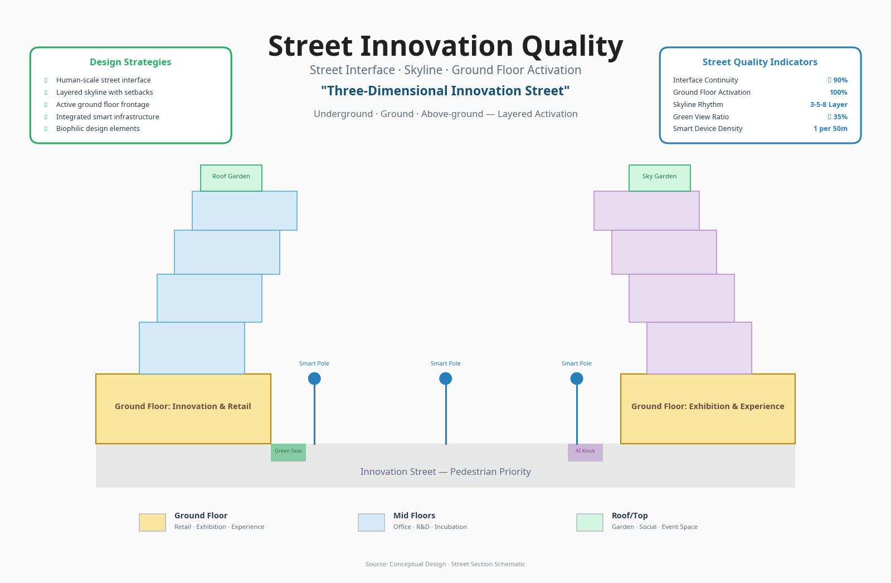
4.7.1 Layout of Sci-Tech Themed Street Exchange Spaces
The diameter innovation axis is not only a linear traffic corridor, but also an all-weather social and collaboration network for innovative people.
(1) Street Innovation Pods
Modular innovation pod units are set every 300-500 meters along the main diameter axis, with a single group building area of about 80-120 square meters, adopting full glass curtain wall + parametric metal perforated panel facade, and internally equipped with movable conference tables, digital whiteboards, video conference terminals and high-speed WiFi.
Design Features: - The facade adopts variable light transmittance smart glass, transparent during the day to ensure natural lighting, atomized at night to protect meeting privacy
(2) Roadside Project Showcase Walls
On the continuous ground-floor interface of buildings on both sides of the diameter axis, an interactive digital showcase wall system is set up, adopting an alternating layout of transparent OLED screens and physical display spaces, forming a virtual-real combined project release corridor.
Technical Features: - Integrated design of transparent OLED screens and building glass curtain walls, without affecting indoor natural lighting
(3) Street-Corner Innovation Living Rooms
In the street-corner spaces around the seven innovation courtyards and the three core nodes, semi-open sci-tech innovation living rooms are set up, each with an area of about 200-400 square meters, positioned as the dual function of "park living room + urban showcase window".
Functional Configuration: - Project pitch area: Equipped with professional-grade audio-visual equipment, capable of hosting small-scale launches, pitches, and salons
4.7.2 Unmanned Catering and Smart Service System
Along the diameter innovation axis, build a smart catering and service system for the "15-minute innovation life circle", characterized by unmanned, intelligent, and low-carbon, adapting to the fast-paced and diverse lifestyle needs of tech people.
(1) Unmanned Catering Matrix Layout
According to the three-level configuration of "staple food + light food + beverages", three types of unmanned catering equipment are laid out along the diameter axis:
-
AI Unmanned Restaurants (Central Core + North Core): Set up one fully intelligent unmanned restaurant each in the AI Origin core area and the Collective Intelligence Park north core, with an area of about 300-500 square meters, equipped with intelligent cooking robots, automatic food delivery systems, and frictionless payment settlement, capable of accommodating 80-120 people dining simultaneously, providing diverse choices such as Chinese formal meals, Western light meals, and customized nutritious meals. The restaurant adopts transparent kitchen design, with the whole cooking process visible, enhancing the sci-tech experience.
-
Unmanned Convenience Stores + Light Food Cabinets (Evenly Distributed): Set up a combination of unmanned convenience stores and smart light food cabinets every 500 meters along the main diameter axis, providing instant consumption categories such as pre-made meals, salad sandwiches, fruits, coffee and tea. The equipment adopts intelligent temperature control and freshness management systems, and AI algorithms dynamically adjust the product structure and replenishment strategy based on the surrounding population profile.
-
Mobile Food Trucks + Coffee Robots (Node Supplement): In the seven innovation courtyards and public activity nodes, deploy movable smart food trucks and robotic arm coffee stations as elastic catering supplements during peak hours and large-scale events. The robotic arm coffee station can make 20+ types of specialty coffee drinks, with an average serving time of 45 seconds, adapting to the rapid replenishment needs of innovative people.
(2) Smart Service Supporting Facilities
- Unmanned Delivery Network: Lay dual channels of underground logistics delivery pipelines and ground unmanned delivery vehicles along the diameter axis, targeting 30-minute delivery of catering, documents, and materials within the park. Delivery tasks are uniformly managed by the AI scheduling system, dynamically allocating transport capacity resources according to real-time road conditions and priority levels.
- Smart Public Toilets and Rest Pods: Set up a combination of smart public toilets and capsule rest pods every 800 meters along the diameter axis, equipped with smart sensor sanitary ware, ambient air purification systems and free WiFi; the rest pods provide 15-30 minute short rest services, equipped with zero-gravity seats and white noise systems.
- AI Guide and Information Screens: Interactive AI information terminals are set up at key street nodes, supporting voice Q&A, route navigation, event query, service reservation and other functions, simultaneously accessing multi-language systems in Chinese, English, Japanese and Korean, serving international innovative people.
4.7.3 Integrated Street Space Design
(1) All-Element Street Cross-Section Optimization
The diameter innovation axis adopts a composite street cross-section design of "one diameter, seven paths", from west to east in order: west building setback exchange belt → slow-traffic greenway → non-motor vehicle lane → central railway heritage green belt (main diameter) → non-motor vehicle lane → slow-traffic greenway → east building setback exchange belt.
(2) Smart Street Infrastructure
- Smart Light Poles: One pole integrates multiple functions such as lighting, 5G/6G base stations, environmental monitoring, traffic signal lights, public WiFi, and emergency calls, with reserved modular expansion interfaces on the pole body
- Underground Comprehensive Utility Tunnel: Pipelines for electricity, communications, water supply and drainage, and cold chain logistics are uniformly placed in the tunnel, avoiding repeated excavation and ensuring high-reliability operation of the innovation district
- Frictionless Payment and Identity Authentication: The entire street supports biometric frictionless passage & payment (privacy-compliant, opt-in), and innovative talents can enjoy full-scenario smart services with the park all-in-one card or digital identity
(3) All-Day Vitality Creation Strategy
- Daytime: Mainly work commuting and business exchange, pod meeting rooms and showcase walls are frequently used, and unmanned catering operates at full capacity during the lunch peak
- Evening: Sci-tech innovation living rooms host salon pitches, street pods switch to leisure social mode, outdoor bars and coffee robots set up outdoor seating
- Night: Digital showcase walls switch to public art mode, low-illumination warm point light systems create a quiet innovation atmosphere, and 24-hour convenience stores and rest pods guarantee the needs of late-night entrepreneurs
- Weekends: Some sections of the street are temporarily pedestrianized, hosting innovation markets, sci-tech carnivals, outdoor pitches and other activities to activate weekend vitality of the district
Chapter 5 Detailed Design of Key Areas
5.1 A1 District: Collective Intelligence Park AI Independent Innovation Acceleration Zone
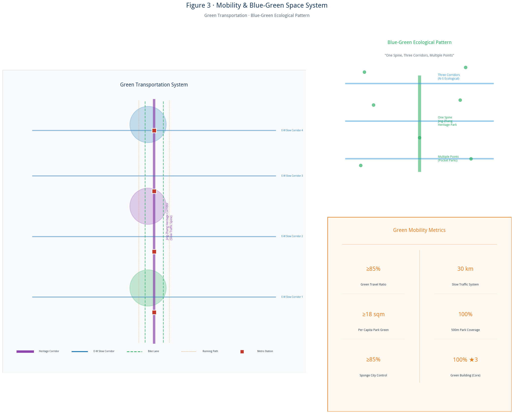
5.1.1 District Overview and Positioning
Location: North to North 5th Ring Road, south to Qinghua East Road, west to Zhongguancun North Street, east to Xueyuan Road Area: 192.1 hectares [metric:a1-area]
Positioning: Core bearing area of AI full-stack independent innovation system, first station for university achievement transformation in North Campus area, main front for "from 0 to 1" original breakthroughs.
Economic Logic of Positioning: From the perspective of New Spatial Economics, the core value of the Collective Intelligence Park District lies in it being the highest-density supply area of learning-oriented spatial quality — adjacent to top universities such as Tsinghua, Peking University, Beihang, and BUPT, it naturally possesses the richest academic resources, the strongest research atmosphere, and the highest density of research talent reserves. This learning-oriented quality is the "source endowment" of dynamic talent agglomeration and also the starting point of knowledge spillovers for the entire innovation belt.
- Quality type: Learning-oriented spatial quality as the leading factor, superimposed with initial supply of innovation-oriented quality
- Talent agglomeration type: AI scientists, researchers, young scholars, doctoral students and other research talents
- Knowledge spillover direction: Spilling over from universities to the park (basic research results → technology transformation)
- Position in the diameter gradient: The northern starting point of the quality gradient, the "source point" of talent flow
Core Values:
5.1.2 Spatial Structure
"One Corridor · Two Belts · Three Parks · Multiple Courtyards" Spatial Structure
- One Corridor: Jing-Zhang Innovation Diameter (Collective Intelligence Park Section) — innovation hub and interaction bond
- Two Belts:
- Three Parks:
- Multiple Courtyards: Multiple innovation courtyards scattered within the park, each focusing on an AI sub-field
5.1.3 Building Renewal Strategy
Status Assessment:
Renewal Classification:
| Renewal Type | Building Area Proportion | Strategy Description |
|---|---|---|
| Preservation and Enhancement | 40% | Research buildings with good quality, functional optimization, facade improvement, smart renovation |
Architectural Design Guidelines:
5.1.4 Transportation System Design
External Transportation:
Internal Transportation:
Slow Traffic System:
5.1.5 Public Space System
Three-Tier Public Space System:
| Tier | Space Type | Quantity | Service Radius | Function |
|---|---|---|---|---|
| Tier 1 | City-level Park Squares | 2 | Entire district | Large-scale events, landscape core |
Key Public Space Designs:
-
Collective Intelligence Park Central Plaza
-
Railway Memory Garden
-
Seven Featured AI Scenario Courtyards + One Garden - 7 themed courtyards each corresponding to a featured AI scenario (see Section 5.5), distributed along the diameter in a quality gradient from north to south - Themes: AI4S Science Academy, AI Education Academy, AI Social Science (AI4SS) Academy, AI Art Academy, AI Governance Academy, Intelligent Medicine Academy, AI Manufacturing Academy - Railway Memory Garden serves as the "North Star" imagery node for cultural heritage and spiritual anchoring - Each courtyard equipped with coffee, pitch space, and shared meeting rooms
5.1.6 AI Scenario Design
Industrial Testing and Verification Scenarios:
-
Large Model Training and Inference Test Field
-
Embodied Intelligence Testing and Verification Park
-
AI for Science Joint Laboratory Cluster
5.1.7 Risk Assessment and Response
Main Risks:
| Risk Type | Risk Description | Impact Level | Response Strategy |
|---|---|---|---|
| University Collaboration Risk | Insufficient openness of university spaces, insufficient depth of industry-university-research integration | High | Establish university-local collaboration mechanism, set up joint management institutions, benefit sharing |
5.1.7 Virtual Space Functional Positioning: Conjecture Plaza
The virtual space of the Collective Intelligence Park district is positioned as the "Conjecture Plaza", the birthplace of AI basic research conjectures and an open discussion space. Corresponding to the learning-oriented quality characteristics of the physical district, it adheres to the principles of low barrier, high openness, and strong academic rigor, encouraging researchers worldwide to freely publish cutting-edge AI scientific conjectures and engage in interdisciplinary discussion, virtually strengthening its functional positioning as the "knowledge source."
5.2 A2 District: AI Origin Community (Wudaokou + Zhichun Road)
5.2.1 District Overview and Positioning
Location: North to Qinghua East Road, south to North 4th Ring Road, west to Zhongguancun Street, east to Xueyuan Road Area: 104.3 hectares [metric:a2-area]
Positioning: AI technology source and talent vitality core, energy hub of the innovation diameter, destination for global AI young talents, main front for "from 1 to 100" technology incubation.
Economic Logic of Positioning: From the perspective of New Spatial Economics, the core value of the AI Origin Community lies in it being the highest-density supply area of innovation-oriented spatial quality — located at the midpoint of the diameter axis, it is the intersection and converter of learning-oriented quality and industry-oriented quality. Here, there is not only knowledge and research talents spilling over from the northern universities, but also market channels leading to the southern industrial zone.
- Quality type: Innovation-oriented spatial quality as the leading factor, being the composite intersection area of learning-oriented and industry-oriented quality
- Talent agglomeration type: Entrepreneurs, product managers, technical partners, investors and other entrepreneurial ecosystem talents
- Knowledge spillover mechanism: Bidirectional knowledge spillover — research results are transformed southward into startup projects, industrial demands are fed back northward into research topics
- Position in the diameter gradient: The core conversion node of the quality gradient, the "hub" of talent flow
Core Values:
5.2.2 Spatial Structure
"One Core · Two Axes · Three Slices · Multiple Nodes" Spatial Structure
- One Core: AI Origin Core Zone (around Wudaokou crossing) — Origin Tower + Origin Plaza
- Two Axes:
- Three Slices:
- Multiple Nodes: Scattered innovation micro-spaces, featured street corners, themed plazas
5.2.3 Building Renewal Strategy
Status Assessment:
Renewal Classification:
| Renewal Type | Building Area Proportion | Strategy Description |
|---|---|---|
| Preservation and Optimization | 50% | Buildings with good quality, functional optimization, facade renovation, smart renovation |
Key Building Renewal Projects:
-
AI Origin Tower (New Landmark)
-
Wudaokou Shopping Center Upgrade
-
Zhichun Road Buildings AI-ready Renovation
5.2.4 Transportation System Design
Rail Transit:
Road System:
Three-Dimensional Pedestrian System:
Slow Traffic System:
5.2.5 Public Space System
Key Public Spaces:
-
Origin Plaza
-
Wudaokou Sci-Tech Innovation Market Plaza
-
Xueyuan Road Coffee Block
-
Zhichun Road Maker Gallery
5.2.6 AI Scenario Design
Industrial Testing and Verification Scenarios:
-
Multimodal AI Application Test Field
-
AIGC Creative Content Factory
Urban Life Scenarios:
-
AI+Smart Business District
-
AI+Smart Transportation Demonstration Zone
-
AI+Future Community
5.2.7 Risk Assessment and Response
| Risk Type | Risk Description | Impact Level | Response Strategy |
|---|---|---|---|
| Traffic Congestion Risk | Wudaokou currently has severe traffic congestion, incremental development may worsen it | High | Rail priority, slow traffic priority, private car restriction, smart traffic optimization |
5.2.7 Virtual Space Functional Positioning: Acceleration Lab
The virtual space of the AI Origin Community is positioned as the "Acceleration Lab", a virtual-physical collaborative field for achievement verification and startup acceleration. Corresponding to the innovation-oriented quality characteristics of the physical district, it adheres to the principles of rapid verification, resource docking, and growth acceleration, providing full-factor acceleration services for high-quality projects emerging from the Conjecture Rankings, building a progressive acceleration mechanism of "online pre-verification → offline deep incubation."
5.3 A3 District: Dazhongsi AI Industry Agglomeration Zone
5.3.1 District Overview and Positioning
Location: North to North 3rd Ring Road, south to Xizhimen North Street, west to Zhongguancun South Street, east to Xueyuan South Road Area: 72.0 hectares [metric:a3-area]
Positioning: AI industry landing and application promotion gateway, southern gateway image display zone, main front for "from 100 to N" industry amplification.
Economic Logic of Positioning: From the perspective of New Spatial Economics, the core value of Dazhongsi District lies in it being the highest-density supply area of industry-oriented spatial quality — located at the southern end of the diameter axis, it is the terminal link where innovation achievements are transformed into industrial value. Here, it undertakes startup projects and technological achievements incubated and matured at the central origin, and through the agglomeration and scaling of the industrial chain, innovation value is transformed into industrial value and economic output.
- Quality type: Industry-oriented spatial quality as the leading factor, superimposed with smart-oriented quality (scenario applications)
- Talent agglomeration type: Enterprise executives, industrial engineers, product operations, business services and other industrial talents
- Knowledge spillover direction: Industrial demand feedback northward (market demand → technology iteration → basic research), while radiating outside Beijing
- Position in the diameter gradient: The southern terminal of the quality gradient, the "sink point" of talent flow and the starting point of feedback
Core Values:
5.3.2 Spatial Structure
"One Core · Two Belts · Three Zones" Spatial Structure
- One Core: Dazhongsi AI Gateway Core — around Dazhongsi subway station
- Two Belts:
- Three Zones:
5.3.3 Building Renewal Strategy
Status Assessment:
Renewal Classification:
| Renewal Type | Building Area Proportion | Strategy Description |
|---|---|---|
| Preservation and Optimization | 45% | Office buildings with good quality, functional enhancement, facade renovation |
Key Building Projects:
-
Dazhongsi AI Tower (Twin Towers)
-
AI+Industry Application Solution Center
-
International AI Exchange and Exhibition Center
5.3.4 Transportation System Design
External Transportation:
Internal Transportation:
TOD Development:
5.3.5 Public Space System
Key Public Spaces:
-
Dazhongsi Gateway Plaza
-
AI Innovation Exhibition Garden
-
Industry Application Themed Blocks
5.3.6 AI Scenario Design
Industrial Testing and Verification Scenarios:
- AI+Finance Technology Innovation Test Field
Urban Operation Scenarios:
-
AI+Urban Governance Command Center
-
AI+Smart Exhibition
5.3.7 Risk Assessment and Response
5.3.8 Virtual Space Functional Positioning: Challenge Hall
The virtual space of the Dazhongsi district is positioned as the "Challenge Hall", the core platform for industrial demand release and technological breakthrough docking. Corresponding to the industry-oriented quality characteristics of the physical district, it adheres to the principles of problem-oriented, result-oriented, and value-oriented, aggregating real enterprise demands and technical challenges, promoting AI technology from lab to industrial application.
| Risk Type | Risk Description | Impact Level | Response Strategy |
|---|---|---|---|
| Industry Competition Risk | Fierce competition for AI headquarters project investment attraction, difficult to land | High | Differentiated positioning, precise investment attraction, policy enhancement |
5.4 Virtual-Physical Dual Diameter Spatial Structure
Core Concept: Building on the physical "One Diameter · Three Cores · Two Rings · Multiple Courts" structure, a virtual spatial dimension is superimposed, forming a new spatial paradigm of "physical diameter + virtual diameter" running in parallel, mutually constructing and reinforcing each other. The virtual space serves as the "digital twin layer + collaboration enhancement layer" of physical space — both a digital mapping of physical space and a hyper-dimensional accelerator for innovation collaboration.
Dual Diameter Mutual Construction Mechanism: - Physical links → Deepened online: Encounters, exchanges, and collaborations in physical space are extended, deepened, and scaled in virtual space, transcending temporal and spatial constraints. - New links online → Landed offline: Collaborative relationships, knowledge networks, and innovation consensus formed in virtual space precipitate into physical space, triggering resource allocation and spatial utilization. - AI Conjecture Rankings serve as the core mechanism for virtual-physical integration and the engine of talent aggregation — global intelligence gathered online, implementation and transformation landed offline, forming circular cumulative causation of "online emergence → offline precipitation."
Virtual Function Mapping of the Three Cores: The three core districts along the diameter axis each carry differentiated functions in virtual space, forming a virtual gradient consistent with the physical gradient: - Collective Intelligence Park (North Core) — Conjecture Cradle: Virtual "Conjecture Plaza," the source of basic research conjectures, encouraging open discussion and low-barrier publishing. - AI Origin Community (Mid Core) — Acceleration Field: Virtual "Acceleration Lab," a virtual-physical collaborative field for achievement verification and startup acceleration. - Dazhongsi AI Industry Cluster (South Core) — Challenge Arena: Virtual "Challenge Hall," a docking platform for industrial demand and technological breakthroughs.
Governance Core: "Co-Creation · Co-Building · Co-Sharing" AI Good Governance System. The deep integration of virtual-physical dual diameter relies on a贯穿始终的 governance mechanism — Co-Creation gathers collective wisdom to pose and solve problems, with AI Conjecture Rankings as the core carrier; Co-Building pools collective efforts to coordinate resources, with three-core spatial dynamic allocation connecting supply and demand; Co-Sharing ensures all people benefit from innovation achievements, with public interest priority guarantee. Together they form the "space-network-governance" trinity development paradigm of the AI Innovation Belt.
5.5 Seven Featured AI Scenario Spatial System
This proposal upgrades the "Beidou Plan" from a brand symbol to a landable spatial scenario system. Seven featured AI scenarios are distributed across the "three cores + four courts" spatial nodes along the Jingzhang innovation diameter, forming a quality gradient of "basic research → interdisciplinary empowerment → application landing" from north to south. The spatial pattern echoes the ladle-shaped imagery of the Big Dipper, constituting a trinity innovation organization model of "space — brand — scenario". The Railway Memory Garden serves as the North Star imagery node, anchoring cultural heritage and the innovation origin.
Seven Scenario Spatial Layout Overview:
| No. | AI Featured Scenario | Spatial Node | Quality Gradient | Core Logic |
|---|---|---|---|---|
| 1 | AI4S Scientific Intelligence | North Core · Zhongzhiyuan District | Learning quality source | Highest concentration of university basic research, original innovation source of AI for Science |
| 2 | AI Education | Between North and Middle Core · Qinghua East Road Courtyard | Learning-innovation transition | Highest university and student density, best node for AI education application |
| 3 | AI Social Science (AI4SS) | Middle Core · AI Origin Community | Innovation quality core | Most active interdisciplinary intersection, innovation hub for deep integration of social science and AI |
| 4 | AI Art | South of Middle Core · Courtyard beside Railway Memory Garden | Innovation-industry transition | Cultural heritage activation zone, best venue for AI art creation and immersive experience |
| 5 | AI Governance | South Core · Dazhongsi District | Industry quality core | Dual demonstration of industrial governance and urban governance, AI governance institutional innovation window |
| 6 | Intelligent Medicine | East of South Core · Life & Health Courtyard | Industry quality extension | Medical AI application landing, smart health and precision medicine demonstration |
| 7 | AI Manufacturing | South of South Core · Southeast Wing Manufacturing Innovation Courtyard | Industry-manufacturing extension | Intelligent manufacturing and robotics applications, AI + advanced manufacturing integration model |
节点详细设计图组（总平面图+三维轴测+商业服务配置）：
| AI for Science Hub | AI Education Courtyard |
|---|---|
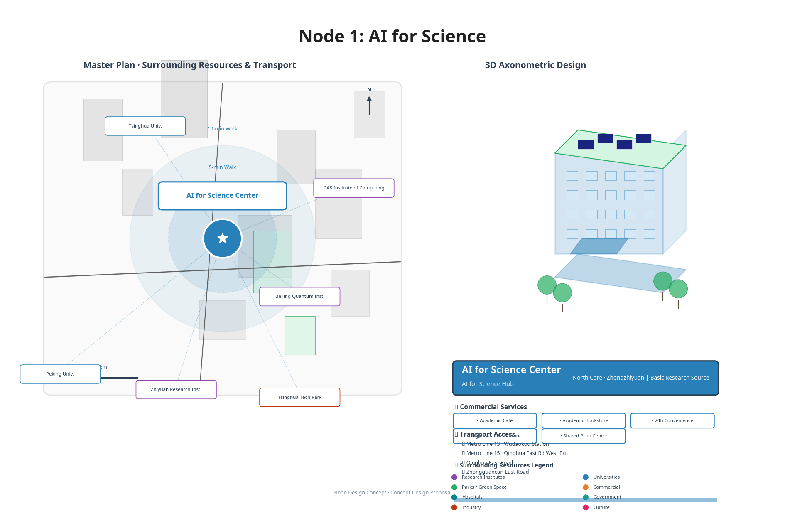 |
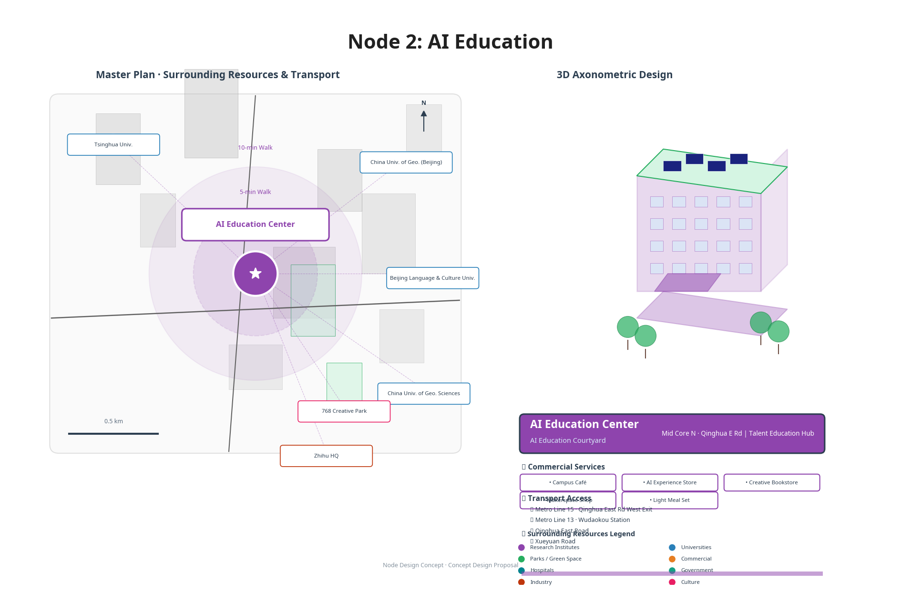 |
| *North Core·Zhongzhiyuan | Basic Research* |
| AI for Social Sciences Lab | AI Art & Creativity Waterfront |
|---|---|
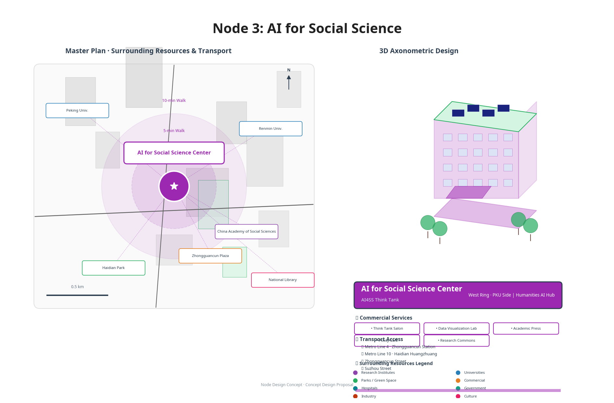 |
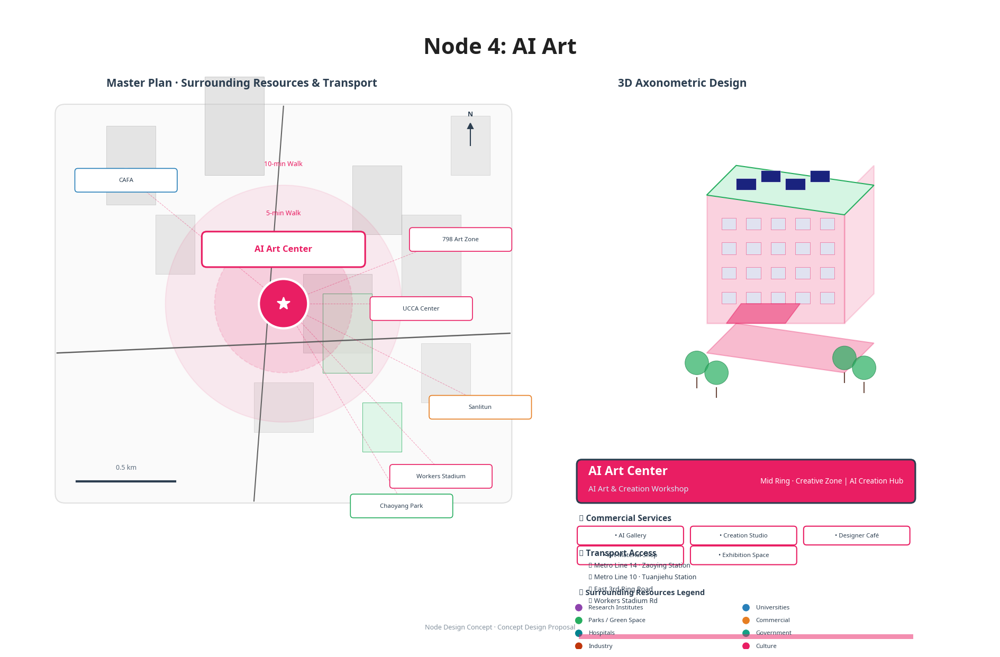 |
| *Chengfu Rd Courtyard | Interdisciplinary* |
| AI Governance Command Center | Intelligent Medicine Health Bay |
|---|---|
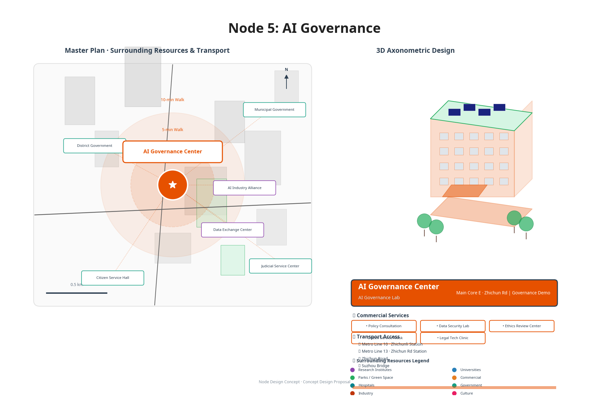 |
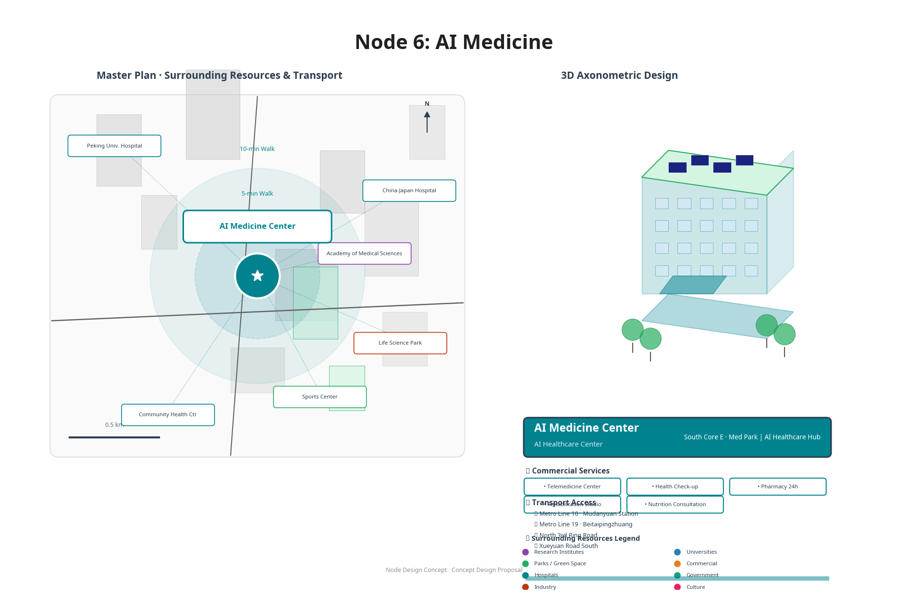 |
| *South Core·Dazhongsi | Urban Governance* |
| AI Manufacturing Accelerator |
|---|
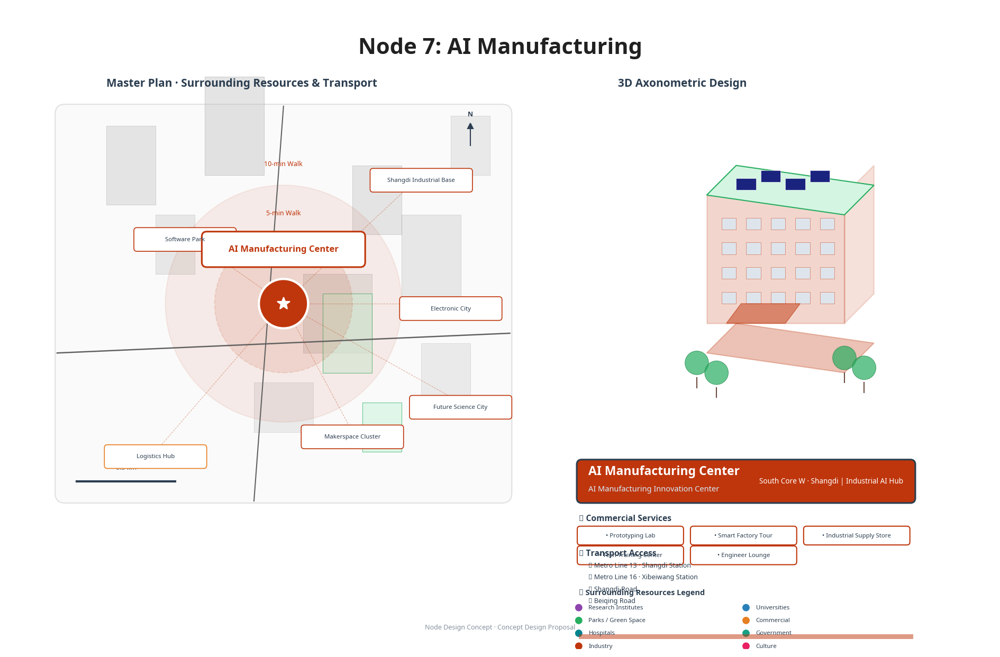 |
| *South Wing |
Overall Spatial Logic: Along the diameter axis from north to south, spatial quality gradients from learning-oriented to innovation-oriented to industry-oriented. AI scenarios progress layer by layer from basic research (AI4S) to education empowerment, interdisciplinary integration, culture & art, governance application, healthcare, and intelligent manufacturing, forming a complete innovation chain of "source innovation → cross-disciplinary empowerment → application landing → industrial transformation". Each scenario is both an independent featured space and a key link in the innovation chain. Together, the seven scenarios form the spatial skeleton of a world-class AI innovation ecosystem.
5.5.1 Seven-Scenario Connecting Path System
Between the seven featured AI scenario nodes, the main walkway of Jing-Zhang Railway Heritage Park serves as the backbone, forming a continuous "Seven-Scenario Connecting Path" — both a pedestrian corridor and a spatial carrier for the quality gradient narrative. Walking from north to south along the path, scenarios progress from basic research to industrial application, and spatial atmosphere transitions from quiet academic to vibrant urban.
Three-Path Integrated Cross-Section Design (functional upgrade of the seven-lane pattern, see Section 4.3.2): 1. Pedestrian Paths (2.5m×2, one on each side): Tree-shaded walking system with AI interactive luminous paving tiles (human-sensor glow at night, forming a flowing light point sequence) 2. Cycling Paths (3m×2, one on each side): Colored asphalt, supporting smart cycling navigation and unmanned delivery vehicles, green-buffered from walkways 3. Central Landscape Belt (6-8m): Preserved railway heritage, linear green space + railway-themed landscape installations, combining heritage commemoration and ecological leisure
Themed Rest Stations: Themed stations are set between every two scenario nodes, spaced approximately 800-1200m apart. Each station includes: - Seating rest area (smart seats: wireless charging + WIFI + environmental monitoring display) - Small public green space (pocket garden, ~500-1000 sqm each) - AI interactive installation (scenario-themed guide screen + AR experience point + Big Dipper imagery projection) - Convenience services (vending + restrooms + drinking water + emergency call)
The seven stations correspond to the seven AI scenario themes, each with unique theme identification, lighting design, and interactive experience content, forming a spatial narrative rhythm of "one station, one scene, step by step advancing". The connecting path system simultaneously carries the spatial narrative of quality gradient — from north to south, the landscape gradually transitions from tranquil academic gardens to vibrant urban interfaces, echoing the progressive logic of AI innovation from basic research to industrial application.
Note: All spatial boundaries and scenario layouts above are conceptual proposals (provisional). Specific locations need further deepening in combination with statutory planning and ownership research.
5.5.2 Co-Creation Showcase: Digital Intelligence Economy Rent
Distributed along the Jingzhang Innovation Diameter, Co-Creation Showcase Spaces are an innovative spatial product proposed in this plan. Through large LED displays, holographic projections, and immersive installations, enterprises and universities can showcase research results with paid visualization services, creating a new business model of "digital intelligence economic rent".
Core Concept: Traditional urban rent comes from location; the new rent in the AI era comes from attention and knowledge visualization. The innovation belt gathers foot traffic and attention through high-quality public space, transforming the linear interface into an operable "knowledge showcase window." Enterprises pay to display cutting-edge results, the public receives free science education, and the city gains vitality — a triple-win digital economy model.
Spatial Forms: Large interactive screen walls (8-15m wide) along the main promenade; projection showcase bands on building facades and under-bridge spaces; holographic display pavilions in three core squares; transparent OLED vitrines along commercial interfaces.
Operating Model: ① Enterprise/university paid subscription with tiered pricing (core > node > general); ② 2-3 hours daily public service hours for free science content; ③ Desensitized interaction data feeds back to product optimization; ④ Regular "Result Launch Days" and "Lab Open Days" brand events.
Value: Transforms purely consumptive public space into revenue-generating knowledge media, makes frontier AI research visible to public, attracts talent, and enhances Haidian's AI industry brand visibility.
Chapter 6 AI Innovation Ecosystem, Talent Profile, and AI+ Scenarios
6.1 AI Innovation Ecosystem System
6.1.1 Ecosystem Evolution Logic Based on Spatial Quality
The AI innovation ecosystem evolves based on spatial quality improvement — high-quality public space attracts talent agglomeration, talent density generates knowledge spillovers and cross-disciplinary collisions, spillovers promote innovation output, and innovation output feeds back into further quality improvement, forming a circular cumulative causation positive feedback loop.
The "One Diameter · Three Cores · Two Rings · Multiple Courts" spatial structure provides multi-level quality carriers for this evolution: the diameter spine provides continuous quality supply, the three cores provide gradient agglomeration poles, the dual rings provide ecological support, and the multi-court system provides mesoscopic exchange nodes. Together, they form a complete ecosystem spatial support system.
6.1.2 Spatial Quality Foundation of the Full-Chain Innovation Ecosystem
The full-chain AI innovation ecosystem includes five stages: basic research → technological breakthrough → startup incubation → industrial transformation → scenario application. Each stage corresponds to different spatial quality requirements and is carried by different spatial nodes along the diameter:
| Innovation Stage | Spatial Carrier | Quality Type | Core Talent |
|---|---|---|---|
| Basic Research | Zhongzhiyuan (North Core) | Learning-oriented | Researchers, PhDs, professors |
| Tech Breakthrough | Zhongzhiyuan + AI Origin | Learning + Innovation | R&D engineers, technical experts |
| Startup Incubation | AI Origin (Middle Core) | Innovation-oriented | Founders, product managers, developers |
| Industrial Transformation | Dazhongsi (South Core) | Industry-oriented | Executives, industrial engineers, operations |
| Scenario Application | Along the diameter + two rings | Smart + Lifestyle | Scenario architects, UX designers, operators |
6.1.3 Talent Flow: "Circulatory System" of the Innovation Ecosystem
Talent frequency, direction, and quality of flow determine ecosystem vitality. The diameter design maximizes talent flow efficiency through high-quality corridors, gradient nodes, and exchange networks. The "source-flow-sink" gradient spatial organization ensures both specialized division of labor and efficient knowledge spillover.
6.1.4 Multi-Level Startup Acceleration System: Growth Ladder for Entrepreneurial Talents
A multi-level acceleration system matches different startup stages: pre-incubation (shared workspace) → incubation (accelerator + co-working) → acceleration (customized office) → industrialization (industrial park). The system is distributed along the diameter's quality gradient, forming a "growth ladder" that allows startup teams to naturally progress from north to south as they grow.
6.2 AI Talent Profile and Demand Analysis
6.2.1 Five Types of Core Talent Profiles
| Talent Type | Proportion | Core Quality Demand | Spatial Preference | Main Carrying District |
|---|---|---|---|---|
| Research Talent | ~20% | Learning-type quality, academic atmosphere, quiet environment | Near universities, research buildings, small shared offices | Zhongzhiyuan North Core |
| Technical Talent | ~30% | Innovation-type quality, communication convenience, technical facilities | Open office, R&D building, tech exchange space | Zhongzhiyuan + AI Origin |
| Startup Talent | ~20% | Innovation-type quality, entrepreneurial atmosphere, financing convenience | Incubator, accelerator, co-working, pitch space | AI Origin Middle Core |
| Industrial Talent | ~20% | Industry-type quality, business support, transportation convenience | Office buildings, conference centers, near transport hubs | Dazhongsi South Core |
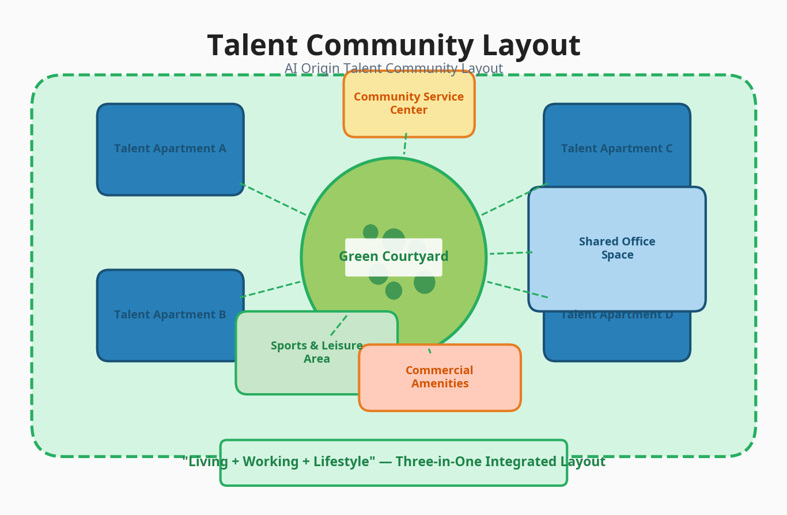
| Scenario & Service Talent | ~10% | Lifestyle-type + smart quality, scenario experience conditions | Scenario experience halls, commercial spaces, community spaces | Along diameter + dual rings |
6.2.2 Talent Community Spatial Layout
Talent communities are configured according to the gradient quality principle, forming a spatial pattern of "appropriate people in appropriate places, gradient distribution, dynamic flow": - Research Community (North): Near Zhongzhiyuan and universities, talent apartments + shared facilities - Startup Community (Middle): Near AI Origin, youth apartments + maker spaces - Industry Community (South): Near Dazhongsi, mid-to-high-end residential + business amenities - Shared Community Spaces: Public facilities along the diameter serve all talent types, promoting cross-group exchange
6.3 AI+ Scenario Design (Scenario Card Set)
Scenario Card 1: Large Model Training and Inference Test Field (Industrial Testing and Verification Scenario)
| Item | Content |
|---|---|
| Scenario Name | Large Model Training and Inference Test Field |
| Scenario Type | Industrial Testing & Verification |
| Location | Zhongzhiyuan District · Jingzhang AI Intelligent Computing Center |
| Tech Domain | Large language models, multimodal models, foundation models |
| Core Functions | Computing power support, model training environment, inference performance testing, model evaluation & certification |
| Infrastructure | 100K+ card intelligent computing cluster, high-performance storage, high-speed network, green power direct supply |
| Service Targets | LLM startups, university research teams, enterprise AI labs |
| Innovation Value | Lowering entry barriers for large model startups, accelerating model iteration, forming industrial agglomeration effect |
| Space Requirement | ~80,000 sqm computing center + ~150,000 sqm office and lab space |
| Business Model | Computing power leasing, model evaluation services, industrial fund investment |
| Governance Constraints | Governance: Computing center operator + cyberspace authority｜Data: Desensitized training data, no personal info｜Transparency: Gray box｜Public: Computing Power Open Day｜Exit: Stop on safety incident |
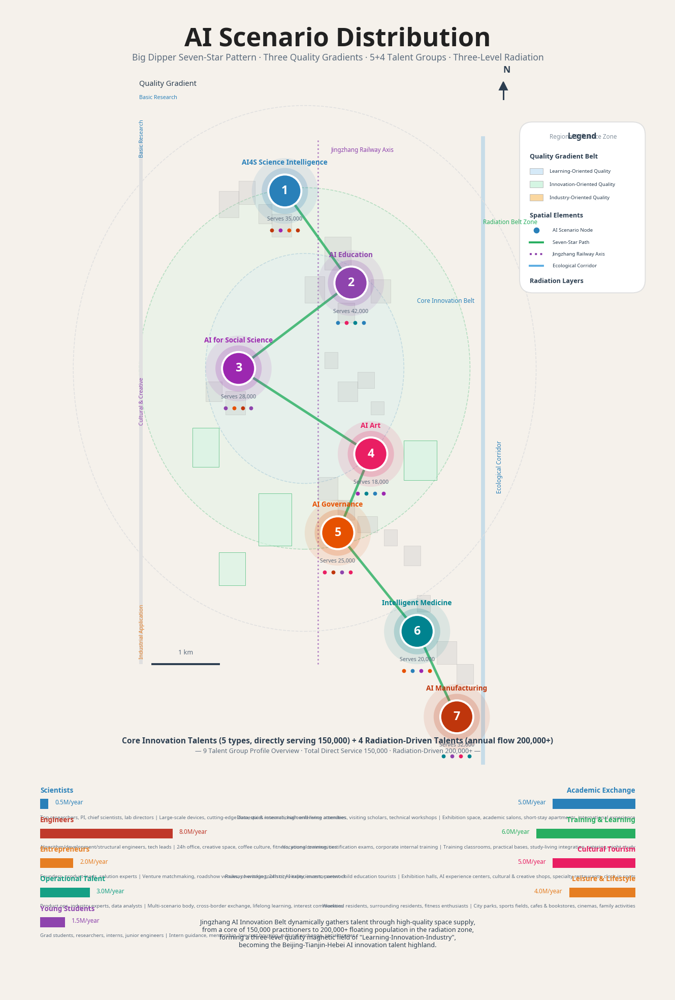
Scenario Card 2: Embodied Intelligence Testing and Verification Park (Industrial Testing and Verification Scenario)
| Item | Content |
|---|---|
| Scenario Name | Embodied Intelligence Testing and Verification Park |
| Scenario Type | Industrial Testing & Verification |
| Location | Northeast of Zhongzhiyuan District |
| Tech Domain | Humanoid robots, service robots, industrial robots, autonomous driving |
| Core Functions | Indoor-outdoor integrated embodied intelligence product testing environment, covering home/office/industrial/outdoor scenarios |
| Test Environments | Simulated home, office building, factory floor, urban road, park & green space |
| Services | Performance testing, safety certification, scenario adaptation optimization, data collection |
| Innovation Value | Filling the gap in domestic embodied intelligence testing infrastructure, accelerating product iteration and commercialization |
| Space Requirement | ~50,000 sqm test area (indoor+outdoor) + ~100,000 sqm R&D space |
| Operation Mode | Testing service fees, enterprise residency, joint labs |
| Governance Constraints | Governance: Test park operator + Emergency Management Bureau｜Data: Test data for park use only｜Transparency: White box (safety testing)｜Public: Safety Experience Day｜Exit: Stop on safety incident |
Scenario Card 3: AI+FinTech Innovation Test Field (Industrial Testing and Verification Scenario)
| Item | Content |
|---|---|
| Scenario Name | AI+FinTech Innovation Test Field |
| Scenario Type | Industrial Testing & Verification |
| Location | Dazhongsi District · AI+Industry Solution Center |
| Tech Domain | Intelligent risk control, intelligent investment advisory, intelligent customer service, anti-fraud, quantitative trading |
| Core Functions | Compliance testing environment for financial AI applications, financial data sandbox, regtech verification |
| Partners | Financial regulators, banks, insurance, securities, fintech companies |
| Test Contents | Algorithm fairness testing, data security testing, compliance verification, stress testing |
| Innovation Value | Promoting financial AI innovation under controllable risks, supporting Beijing FinTech Center construction |
| Space Requirement | ~30,000 sqm office and testing space |
| Operation Mode | Regulatory sandbox operations, enterprise services, training & certification |
| Governance Constraints | Governance: Financial regulator + sandbox committee｜Data: Sandbox data only, no cross-border｜Transparency: White box (regulatory req)｜Public: Consumer rep observers｜Exit: Stop on compliance redline trigger |
Scenario Card 4: AI+Smart Transportation Demonstration Zone
| Item | Content |
|---|---|
| Scenario Name | AI+Smart Transportation Demonstration Zone |
| Scenario Type | Urban Operations Scenario |
| Location | AI Origin Community · Wudaokou Area |
| Tech Domain | Autonomous driving, vehicle-road coordination, intelligent signals, MaaS |
| Core Functions | Autonomous shuttle buses, unmanned delivery vehicles, intelligent signal optimization, integrated MaaS platform |
| Demonstration | L4 autonomous shuttle (along diameter), unmanned delivery (community & park), AI signal optimization (key intersections) |
| Innovation Value | 30%+ traffic efficiency improvement, fewer accidents, better travel experience |
| Coverage | ~5 sqkm demonstration area |
| Implementation Path | Phased opening of test roads, gradual expansion of demonstration scope |
| Governance Constraints | Governance: Traffic Police + Transport Bureau｜Data: No facial recognition, trajectory fully desensitized｜Transparency: Gray box｜Public: Transportation council｜Exit: Stop on rising accident rate |
Scenario Card 5: AI+Future Community Model
| Item | Content |
|---|---|
| Scenario Name | AI+Future Community Model |
| Scenario Type | Lifestyle Service Scenario |
| Location | East Wing · Xiaoyue River Scenario Empowerment Wing |
| Tech Domain | Smart community, AI home, health management, unmanned delivery |
| Core Functions | Smart property management, AI health butler, intelligent waste sorting, community service robots, digital twin community |
| Experience | Residents can experience AI-empowered full-scenario smart living |
| Innovation Value | Building a replicable and promotable AI+future community standard paradigm |
| Community Scale | ~2,000 households demonstration community |
| Participation | Voluntary resident participation, feedback for iterative optimization |
| Governance Constraints | Governance: Sub-district office + Neighborhood Committee｜Data: Resident data voluntarily authorized, revocable｜Transparency: Gray box｜Public: Owners' assembly vote｜Exit: Stop on >50% resident vote |
Scenario Card 6: AI+Smart Education Innovation Zone (Seven Featured Scenarios)
| Item | Content |
|---|---|
| Scenario Name | AI+Smart Education Innovation Zone |
| Scenario Type | Public Service Scenario |
| Location | Qinghua East Road Courtyard (AI Education Academy) |
| Tech Domain | Personalized learning, intelligent tutoring, AI teacher, education metaverse |
| Core Functions | AI-assisted teaching, personalized learning path planning, intelligent assessment, virtual experiments, AI literacy education |
| Space Carrier | Courtyard-style education innovation center + 3-5 AI pilot schools + online platform, ~30,000 sqm GFA |
| Demonstration | All-age AI education demonstration from K12 to higher education, covering smart classrooms, AI tutors, learning analytics, education equity |
| Innovation Value | Promoting both equity and quality in education, cultivating new talents for the AI era, forming a replicable smart education paradigm |
| Extended Industry | Smart education product R&D and enterprise agglomeration |
| Governance Constraints | Governance: Education authority + schools｜Data: Student data strictly protected, no commercial use｜Transparency: White box (teaching decisions)｜Public: PTA + student reps｜Exit: Pause on academic decline |
Scenario Card 7: AI+Smart Business District Experience Zone
| Item | Content |
|---|---|
| Scenario Name | AI+Smart Business District Experience Zone |
| Scenario Type | Commercial Consumption Scenario |
| Location | AI Origin Community · Wudaokou Business District |
| Tech Domain | Computer vision, NLP, AIGC, digital humans |
| Core Functions | Smart shopping guide, virtual fitting, AI recommendation, unmanned retail, digital human clerk, AI restaurant |
| Experience | Consumers can experience full-process AI-empowered shopping and dining services |
| Innovation Value | Enhancing consumer experience, promoting consumption upgrading, building a smart commerce model |
| Commercial Scale | ~200,000 sqm commercial area |
| Participating Merchants | 100+ brands participating in AI upgrade |
| Governance Constraints | Governance: Commerce Bureau + Market Regulation Bureau｜Data: Desensitized consumer data, no mandatory face payment｜Transparency: Gray box｜Public: Consumer review｜Exit: Rectify on excessive complaints |
Scenario Card 8: AI+Urban Governance Command Center (Seven Featured Scenarios)
| Item | Content |
|---|---|
| Scenario Name | AI+Urban Governance Command Center |
| Scenario Type | Urban Operations Scenario |
| Location | South Core · Dazhongsi District (AI Governance Academy) |
| Tech Domain | City brain, digital twin, computer vision, predictive analytics |
| Core Functions | City-wide situational awareness, AI-assisted decision-making, industrial governance monitoring, emergency command & dispatch, cross-departmental collaborative governance |
| Governance Domains | Transportation, environment, safety, municipal, public services + industrial operation monitoring + AI industry governance |
| Space Carrier | AI Governance Command Center building + city operations dashboard + emergency command hall, ~20,000 sqm GFA |
| Innovation Value | Building a new paradigm of urban governance in the AI era, achieving dual demonstration of industrial and urban governance, improving governance refinement |
| Tech Foundation | City Information Model (CIM) + public-area sensing network + AI algorithm platform |
| Governance Constraints | Governance: Urban Management + Government Services Bureau｜Data: Within public data open catalog｜Transparency: White box (public decisions)｜Public: Citizen hearings｜Exit: Stop on decision-making failure |
Scenario Card 9: AI+Cultural Heritage Activation
| Item | Content |
|---|---|
| Scenario Name | AI+Cultural Heritage Activation Experience |
| Scenario Type | Cultural Tourism Scenario |
| Location | Jing-Zhang Railway Heritage Park · Full route |
| Tech Domain | AR/VR, digital humans, AIGC, intelligent guide |
| Core Functions | AI digital human guide, AR historical reconstruction, immersive experience exhibition, AI cultural & creative generation |
| Experience | Visitors can "travel through" different eras via AI technology, experiencing the historical changes of Jing-Zhang Railway |
| Innovation Value | Bringing cultural heritage to life, enhancing visitor experience, inheriting innovation spirit |
| Coverage | 9km heritage park full route, 3 key experience nodes |
| Derived Value | AI cultural product development, digital collections, cultural IP operation |
| Governance Constraints | Governance: Cultural Heritage Bureau + Culture & Tourism Bureau｜Data: Heritage data strictly controlled｜Transparency: Gray box｜Public: Visitor feedback channels｜Exit: Stop on heritage risk |
Scenario Card 10: AI+Scientific Research Open Platform (AI for Science) (Seven Featured Scenarios)
| Item | Content |
|---|---|
| Scenario Name | AI+Scientific Research Open Platform (AI for Science) |
| Scenario Type | Research Service Scenario |
| Location | North Core · Zhongzhiyuan District · Frontier Science Park (AI4S Academy) |
| Tech Domain | AI+Life Science, AI+Materials Science, AI+Physics, AI+Chemistry, AI+Mathematics |
| Core Functions | Providing AI research computing power, datasets, algorithm tools, joint research space |
| Research Directions | Protein structure prediction, new material discovery, drug molecule design, climate simulation, AI-assisted basic mathematics |
| Space Carrier | Research buildings + shared labs + academic exchange courtyards, ~80,000 sqm GFA |
| Partner Institutions | Tsinghua, Peking University, CAS and other universities and research institutes |
| Innovation Value | Building a world-class AI for Science source, driving paradigm shift in scientific research, accelerating major original innovation |
| Operation Mode | Open platform + joint labs + research services |
| Governance Constraints | Governance: Science Commission + Universities｜Data: Research data with compliance authorization｜Transparency: White box (academic transparency)｜Public: Science Open Day｜Exit: Stop on ethics violation |
Scenario Card 11: AI Social Science (AI4SS) + AI Art & AIGC Creation (Seven Featured Scenarios · Dual Scenario Linkage)
| Item | Content |
|---|---|
| Scenario Name | AI Social Science (AI4SS) + AI Art & AIGC Creation (Dual Scenario Linkage) |
| Scenario Type | Interdisciplinary + Cultural & Creative Scenario |
| Location | AI4SS: Middle Core · AI Origin Community (AI Social Science Academy)｜AI Art: Courtyard beside Railway Memory Garden (AI Art Academy) |
| Tech Domain | Computational social science, policy simulation, AIGC, digital art, digital humans, AR/VR |
| Core Functions | 【AI4SS】AI+social science interdisciplinary research, policy simulation lab, social computing test field, digital humanities｜【AI Art】AIGC creation workshop, digital art exhibition hall, Jingzhang heritage immersion, AI creative incubation, digital human performance |
| Space Carrier | AI4SS: Interdisciplinary research building + policy simulation center ~40,000 sqm｜AI Art: Railway heritage adaptive reuse art space + immersive exhibition hall ~25,000 sqm |
| Innovation Value | Filling the gap in deep integration of AI and social sciences, integrating railway heritage activation with AI art innovation, creating a new AI humanities landmark |
| Linkage Mechanism | Social science insights from AI4SS provide intellectual content for AI art creation; AI art expression provides dissemination载体 for social science research |
| Governance Constraints | Governance: Culture & Tourism + Cyberspace Admin + Copyright Bureau｜Data: Social survey data desensitized & authorized + user creation data copyright protected｜Transparency: White box (social science) / Gray box (art creation)｜Public: Public forums + creator community｜Exit: Stop on ethical controversy / copyright violation |
Scenario Card 12: AI+Health Management Community (Intelligent Medicine) (Seven Featured Scenarios)
| Item | Content |
|---|---|
| Scenario Name | AI+Health Management Community (Intelligent Medicine) |
| Scenario Type | Healthcare Scenario |
| Location | East of South Core · Life & Health Courtyard (Intelligent Medicine Academy) |
| Tech Domain | AI imaging, health monitoring, intelligent diagnosis, drug R&D, AI mental health |
| Core Functions | AI medical imaging diagnosis, smart physical examination, chronic disease management, telemedicine, AI-assisted drug R&D, AI mental health assistance |
| Services | Full-cycle AI health management services for community residents, combined diagnosis by AI medical enterprises and tertiary hospitals |
| Space Carrier | Smart medical center + health management community + AI pharma joint lab, ~30,000 sqm GFA |
| Partner Institutions | Tertiary hospitals, AI medical companies, health management institutions |
| Innovation Value | Shifting from "treatment-centered" to "health-centered", building a new model of full-cycle smart health management |
| Coverage | 50,000-100,000 residents in demonstration community |
| Governance Constraints | Governance: Health Commission + Hospitals｜Data: Health data strictly confidential, HIPAA-grade｜Transparency: White box (medical decisions)｜Public: Patient representative committee｜Exit: Stop on medical incident |
Scenario Card 13: AI Conjecture Challenge + AI Intelligent Manufacturing (Seven Featured Scenarios)
| Item | Content |
|---|---|
| Scenario Name | AI Conjecture Challenge + AI Intelligent Manufacturing (Virtual-Physical Integration + Industrial Terminal) |
| Scenario Type | Virtual-Physical Integrated Innovation + Intelligent Manufacturing Scenario |
| Location | Conjecture Challenge: Full coverage · Three cores｜Intelligent Manufacturing: South of South Core · Southeast Wing Manufacturing Innovation Courtyard (AI Manufacturing Academy) |
| Tech Domain | Conjecture ranking digital platform + smart factory, industrial robotics, digital twin production lines, AI quality inspection |
| Core Functions | 【Conjecture Challenge】Full-cycle innovation chain of "conjecture release → popularity ranking → challenge tackling → review & verification → achievement landing"｜【Intelligent Manufacturing】Smart factory demonstration, industrial robotics applications, digital twin production lines, AI quality inspection, flexible manufacturing verification |
| Scenario Description | The AI Conjecture Rankings serve as a talent agglomeration engine, realizing bidirectional drive between virtual and physical spaces. High-value manufacturing achievements are prioritized for landing in the manufacturing innovation courtyard, completing pilot verification and mass production docking in the manufacturing innovation plant. The smart factory demonstration line showcases the AI+advanced manufacturing integration paradigm, forming a complete closed loop of "source conjecture → technical tackling → manufacturing landing" |
| Space Carrier | Online: Virtual Conjecture Plaza / Acceleration Lab / Challenge Hall｜Offline: Three-core pitch centers + manufacturing innovation plant ~50,000 sqm |
| Innovation Value | Core carrier of virtual-physical dual diameter integration, connecting the complete chain from AI innovation conjectures to intelligent manufacturing landing, building an AI+advanced manufacturing integration model |
| Governance Requirements | Governance: Innovation Belt Management Office + Academic Committee + Industry & IT + Work Safety｜Framework: "Co-Creation · Co-Building · Co-Sharing" AI good governance system｜Quality threshold: AI screening + manual review｜Academic integrity: Plagiarism one-vote veto｜Popularity anti-fraud: Multi-dimensional weighting + anomaly detection |
| AI Removability | AI-dependent: semantic classification, popularity ranking, intelligent matching, quality screening (4 items)｜Manual process: release review, challenge evaluation, expert final review, achievement landing (4 items)｜After AI removal, degrades to pure manual "question wall + challenge board" mode with core functions fully retained |
| Manual Review Mechanism | Three mechanisms: conjecture quality final review, challenge achievement expert evaluation, popularity anomaly manual review, ensuring key links are human-controlled |
6.4 Scenario Implementation Mechanism
Scenario Opening Mechanism
First Trial and First Use Policy
Scenario Evaluation and Iteration
6.5 Diameter Governance Protocol
Concept Proposal: The governance framework below is a conceptual proposal and does not constitute any official policy commitment.
AI scenario cross-node governance adopts a "four-tier architecture · four-right separation" model:
- Four-Tier Architecture: Access tier (qualification review + algorithm filing), Operation tier (status monitoring + anomaly warning), Pause tier (mandatory manual takeover + data preservation), Exit tier (termination & removal + non-intelligent equivalent path)
- Four-Right Separation: Data ownership belongs to the public, usage rights to enterprises, supervision rights to government + third parties, and benefit rights to multi-stakeholder sharing
Three-Core Cross-Node Governance Protocols: Data classification sharing (core data localized + derivative data cross-district flow), computing power collaborative scheduling (elastic computing pool on-demand allocation), model filing interconnection (filed at one core, recognized by all three), clear responsibility boundaries (operator / algorithm provider / regulator tripartite rights and responsibilities), emergency linkage (cross-node coordinated response).
Algorithm Filing and Audit: Public AI systems on the diameter axis implement "double filing + annual audit" — pre-launch filing, major change re-filing, annual third-party audit with public disclosure.
Public Interest Stress Testing: Five-dimension stress testing framework — data privacy, algorithm fairness, employment impact, spatial accessibility, public safety. Quarterly assessment with three-color warning; red warnings trigger public hearings.
Chapter 7 Land Use, Building Scale, and Demolition/Rehabilitation/Preservation Plan
7.1 Land Use Layout Planning
7.1.1 Current Land Use Analysis
Overall Characteristics: - Within the 11.4km² overall design scope, current land use is mainly urban construction land - Industrial land, research land, residential land, and commercial service facility land are mixed and distributed - Land use functions along the Jing-Zhang Railway heritage site are complex with severe spatial fragmentation - Land use efficiency varies, with great existing urban renewal potential
Current Land Use Structure (Overall Design Scope):
| Land Use Type | Area (ha) | Proportion | Main Distribution |
|---|---|---|---|
| Residential Land | ~285 | 25% | Clustered distribution on east and west sides |
| Industrial/Warehouse Land | ~171 | 15% | Distributed along the railway line |
| Research/Education Land | ~228 | 20% | Around universities, science parks |
| Commercial & Service Land | ~114 | 10% | Core areas like Wudaokou, Dazhongsi |
| Road & Transportation Facilities Land | ~182 | 16% | Distributed throughout the domain |
| Green Space & Square Land | ~91 | 8% | Heritage parks, urban green spaces |
| Other | ~69 | 6% | Municipal facilities, special-use land, etc. |
[metric:land-use-status]
7.1.2 Planned Land Use Structure
Planning Goals: Optimize land use structure, increase the proportion of industrial space, and improve public service and public space supply.
Planned Land Use Structure (Overall Design Scope):
| Land Use Type | Area (ha) | Proportion | Change |
|---|---|---|---|
| Industrial/Research Land | ~342 | 30% | +10pp (industrial transformation + new addition) |
| Residential Land | ~251 | 22% | -3pp (optimize stock) |
| Commercial & Service Land | ~137 | 12% | +2pp (quality improvement) |
| Public Service Facility Land | ~68 | 6% | +3pp (new supporting facilities) |
| Road & Transportation Facilities Land | ~182 | 16% | Unchanged |
| Green Space & Square Land | ~137 | 12% | +4pp (heritage park + pocket parks) |
| Municipal Facility Land | ~23 | 2% | Unchanged |
| Total | 1140 | 100% | - |
[metric:land-use-plan]
7.2 Building Scale and Capacity Control
7.2.1 Total Building Scale
Current Total Building Area: ~14 million ㎡ (overall design scope) [metric:existing-floor-area]
Planned Total Building Area: ~18 million ㎡ (overall design scope) [metric:planned-floor-area] - Net increment: ~4 million ㎡ - Increment sources: Inefficient land redevelopment, FAR increase, underground space utilization
Building Scale by District:
| District | Current Building Area (10,000㎡) | Planned Building Area (10,000㎡) | Increment (10,000㎡) | Increment Ratio |
|---|---|---|---|---|
| Collective Intelligence Park (192.1ha) | ~250 | ~380 | +130 | +52% |
| AI Origin Community (104.3ha) | ~320 | ~480 | +160 | +50% |
| Dazhongsi District (72.0ha) | ~180 | ~260 | +80 | +44% |
| Other Areas | ~650 | ~680 | +30 | +5% |
| Total | ~1400 | ~1800 | +400 | +29% |
[metric:floor-area-by-zone]
7.2.2 Building Functional Structure
Planned Building Functional Structure:
| Function Type | Building Area (10,000㎡) | Proportion | Description |
|---|---|---|---|
| Industrial Office | ~810 | 45% | AI enterprise offices, R&D, laboratories |
| Residential | ~450 | 25% | Talent apartments, regular housing |
| Commercial Services | ~270 | 15% | Commerce, dining, hotels, experiences |
| Public Services | ~126 | 7% | Education, healthcare, culture, sports |
| Municipal Supporting | ~54 | 3% | Substations, server rooms, etc. |
| Other | ~90 | 5% | Transportation, warehousing, etc. |
| Total | ~1800 | 100% | - |
[metric:floor-area-by-function]
7.2.3 FAR Control
| District | Average FAR | Core Area FAR | General Area FAR |
|---|---|---|---|
| Collective Intelligence Park | 2.0 | 2.5-3.0 | 1.5-2.0 |
| AI Origin Community | 4.6 | 5.0-8.0 | 3.0-4.0 |
| Dazhongsi District | 3.6 | 4.0-6.0 | 2.5-3.5 |
| Overall Average | 1.6 | - | - |
[metric:floor-area-ratio]
7.3 Demolition/Rehabilitation/Preservation Classification Plan
7.3.1 Classification Standards
Demolition Category: - Dilapidated buildings with poor quality and safety hazards - Inefficient buildings with extremely low land use efficiency - Buildings that seriously affect the overall urban layout and public space - Buildings that do not conform to industrial development direction and have no renovation value
Rehabilitation Category: - Buildings with good structural quality but functions not meeting current needs - Buildings whose use efficiency and spatial quality can be greatly improved through renovation - Buildings with historical value or character features that need protection and utilization - Buildings that can meet AI industry usage needs through renovation
Preservation Category: - Buildings with good quality, complete functions, and consistent with planning positioning - Important public buildings and infrastructure - Historical protection buildings and cultural relics - Recently built buildings in good condition
7.3.2 Demolition/Rehabilitation/Preservation Plan for Three Districts
Collective Intelligence Park (192.1ha):
| Category | Building Area (10,000㎡) | Proportion | Main Objects |
|---|---|---|---|
| Demolition | ~50 | 20% | Old factories, inefficient buildings, urban villages |
| Rehabilitation | ~100 | 40% | Research building renovation, factory renovation into AI offices |
| Preservation | ~100 | 40% | Good-quality research buildings, university buildings |
| Current Total | ~250 | 100% | - |
| New Construction (demolition-rebuild + new) | ~130 | - | Demolition-rebuild ~500,000㎡, new addition ~800,000㎡ |
| Planned Total | ~380 | - | - |
AI Origin Community (104.3ha):
| Category | Building Area (10,000㎡) | Proportion | Main Objects |
|---|---|---|---|
| Demolition | ~80 | 25% | Urban villages, dilapidated buildings, inefficient commerce |
| Rehabilitation | ~128 | 40% | Old office building renovation, commercial upgrade |
| Preservation | ~112 | 35% | Good-quality office buildings, commerce, residences |
| Current Total | ~320 | 100% | - |
| New Construction (demolition-rebuild + new) | ~160 | - | Demolition-rebuild ~800,000㎡, new addition ~800,000㎡ |
| Planned Total | ~480 | - | - |
Dazhongsi District (72.0ha):
| Category | Building Area (10,000㎡) | Proportion | Main Objects |
|---|---|---|---|
| Demolition | ~54 | 30% | Building materials markets, inefficient commerce, old buildings |
| Rehabilitation | ~54 | 30% | Commercial buildings renovated into AI headquarters offices |
| Preservation | ~72 | 40% | Good-quality office buildings, residences |
| Current Total | ~180 | 100% | - |
| New Construction (demolition-rebuild + new) | ~80 | - | Demolition-rebuild ~540,000㎡, new addition ~260,000㎡ |
| Planned Total | ~260 | - | - |
[metric:demolition-modify-retain]
7.3.3 Implementation Principles for Demolition/Rehabilitation/Preservation
- Build first, then demolish; resettle first, then move: Prioritize construction of resettlement housing and new industrial space before advancing demolition work, ensuring smooth transition
- Targeted policies, precise renewal: Formulate renewal strategies based on building quality, function, value and other factors, avoid one-size-fits-all
- Protection priority, heritage memory: Buildings with historical value and industrial heritage receive priority protection, activation and utilization
- Benefit sharing, win-win for all: Establish benefit sharing mechanism among government, enterprises, and residents, forming renewal synergy
- Phased advancement, rolling development: Advance orderly in phases, using points to drive areas, gradually expanding renewal scope
7.4 Underground Space Utilization
Utilization Strategies
- Comprehensive development of underground space in key districts (commerce, parking, municipal utilities, pedestrian passages)
- Integrated underground development around subway stations (TOD model)
- Underground space utilization of Jing-Zhang Heritage Park (municipal facilities, parking, storage)
- Underground connection system construction (station-building-public space underground connectivity)
Underground Space Scale
- New underground space ~1.5 million ㎡
- Among which: Underground commerce ~200,000㎡, underground parking ~1 million ㎡, underground municipal ~200,000㎡, other ~100,000㎡
Chapter 8 Transportation, Rail Transit, Municipal Utilities, and Public Service Facilities
8.1 Road Transportation System
8.1.1 Road Network Planning
Planning Goal: Build a green transportation system of "rail-led, slow-traffic priority, smart-empowered", with green travel ratio ≥85%.
Road Network Structure: Five-level road network system
| Road Grade | Functional Positioning | Red Line Width | Design Speed |
|---|---|---|---|
| Expressway | Regional rapid access | 60-80m | 80km/h |
| Primary Road | Inter-district connection | 40-50m | 60km/h |
| Secondary Road | Intra-district connection | 30-40m | 40km/h |
| Branch Road | Block accessibility | 20-25m | 30km/h |
| Lane Street | Micro-circulation, life service | 12-15m | 20km/h |
Road Network Density: - Expressway + Primary Road: ~2.5km/km² - Secondary Road: ~2.0km/km² - Branch Road and below: ~5.0km/km² - Total road network density: ≥9.5km/km² [metric:road-density]
8.1.2 Road Micro-Circulation Optimization
Key Measures:
-
Connect Dead-End Roads: - Identify and connect all T-junctions and dead-end roads - Increase north-south and east-west connection channels - Resolve spatial division caused by railways and rail transit
-
Narrow Roads, Dense Network: - Implement narrow roads dense network model in three key districts - Increase branch roads and lane streets, improve road network accessibility - Reduce block scale, enhance street vitality
-
Intersection Optimization: - Channelization design for major intersections to improve traffic efficiency - Set up pedestrian safety islands and secondary crossing facilities - Optimize signal timing, AI intelligent control
-
Traffic Calming: - Implement traffic calming in residential areas and pedestrian priority zones - Speed bumps, narrow point design, pavement changes - Speed limit 20-30km/h, ensuring pedestrian safety
8.1.3 Static Traffic
Parking Supply Strategy: - Differentiated parking supply: Moderately tight in core areas, moderately loose in peripheral areas - Mainly underground parking, strict control of ground parking - Shared parking mechanism: Office and residential parking shared during off-peak hours
Parking Configuration Standards:
| Land Use Type | Configuration Index | Description |
|---|---|---|
| Industrial Office | 0.5-0.8 spaces/100㎡ | Lower than traditional standards, encourage green travel |
| Residential | 0.8-1.0 spaces/household | Talent apartments can be appropriately reduced |
| Commercial | 0.8-1.0 spaces/100㎡ | Moderately tight in core business districts |
| Public Service | 0.5-1.0 spaces/100㎡ | Differentiated configuration |
Smart Parking Management: - Full-domain parking guidance system - Reservation parking and shared parking platform - Unattended and frictionless payment - Integrated charging pile configuration
8.2 Rail Transit System
8.2.1 Existing Rail Lines
| Line | Stations Along the Line | Functional Positioning |
|---|---|---|
| Line 13 | Wudaokou, Zhichun Road, Dazhongsi, Xizhimen | Main east-west rail line of the innovation belt |
| Line 10 | Zhichun Road, Xitucheng, Mudanyuan | Loop line, convenient transfer |
| Line 15 | Qinghua East Road West Exit | Northern connection channel |
| Changping Line | Xierqi, Qinghe Station | Northern new town connection |
| Line 4 | Xizhimen | Main north-south channel |
| Line 2 | Xizhimen | Loop line |
8.2.2 Rail Micro-Center Construction
Following the principle of "one station, one strategy; one station, one character", build 6 rail micro-centers:
| Station | Grade | Core Functions | Development Model |
|---|---|---|---|
| Wudaokou Station | Tier 1 | AI Origin core, comprehensive services | Station-city integration, high-intensity development |
| Dazhongsi Station | Tier 1 | Southern gateway, industrial headquarters | TOD comprehensive development |
| Zhichun Road Station | Tier 1 | Startup incubation, transfer hub | Existing station renovation and upgrading |
| Qinghua East Road West Exit Station | Tier 2 | Collective Intelligence Park gateway, research services | Surrounding station quality upgrading |
| Xuezhiyuan Station | Tier 2 | Central services, residential support | Community-level micro-center |
| Xizhimen Station | Tier 1 | Comprehensive transportation hub, gateway display | Existing hub function optimization |
8.2.3 Integrated Design of Rail and Surroundings
Integrated Design Key Points: - Station entrances directly connected to surrounding buildings underground/above-ground - Commercial, office, and public service functions clustered within 500m of stations - Pedestrian-friendly station access system - Bicycle parking facilities integrated with station design - Reasonable layout of bus connection stations
Suggested New Rail Facilities: - Add Xueqing Road Station on Line 13 (central Collective Intelligence Park district) - Plan new northern east-west connection line - Improve slow traffic connection system around stations
8.3 Slow Traffic System
8.3.1 Pedestrian System
Three-Tier Pedestrian Network:
| Tier | Spatial Carrier | Width | Function |
|---|---|---|---|
| Pedestrian Main Channel | Central walkway of Jing-Zhang Innovation Diameter | 6-8m | North-south pedestrian main axis, innovation interaction |
| Pedestrian Secondary Channel | Main street sidewalks | 3-5m | Daily commute, commercial walking |
| Pedestrian Branch Channel | Lane streets and community walkways | 2-3m | Community accessibility, neighborhood interaction |
Pedestrian Comfort Guarantee: - Tree shade coverage ≥70% (reduces perceived temperature by 5-8°C in summer) - One rest node every 500m (seats + drinking water + charging + WiFi) - Weather corridors on key sections - Full barrier-free design, slope ≤5% - Crossing safety: Pedestrian signal priority, safety islands, secondary crossing
8.3.2 Bicycle System
"One Main, Multiple Branches" Bicycle Network:
- Main Cycling Lane: 3.5m on each side of Jing-Zhang Innovation Diameter, north-south through traffic, independent right-of-way
- Secondary Cycling Lanes: Along main urban roads, mainly east-west
- Branch Cycling Lanes: Bicycle lanes within communities and parks
- Total Mileage: ~50km (overall design scope)
Cycling Connection: - Full coverage of bicycle parking facilities at rail stations - Shared bicycles/e-bikes at each station - One bicycle station every 1km along the diameter - Smart parking and electronic fence management
8.3.3 "Three Paths + One Green" Pattern
Build a slow traffic and ecological system of "Three Paths + One Green" along Jing-Zhang Railway Heritage Park:
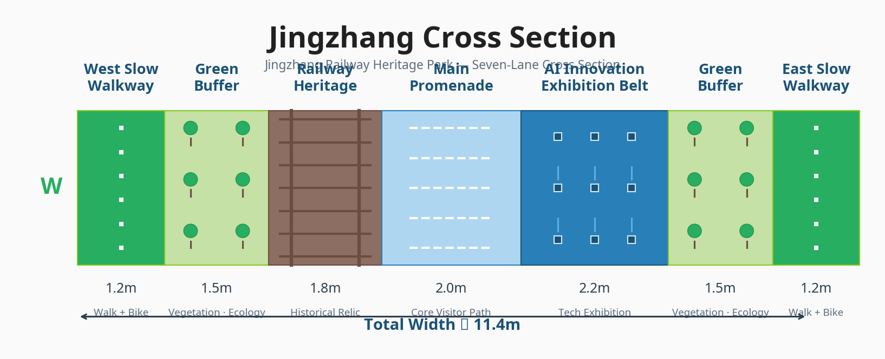
- Running Path: 2.5m west side promenade (can also serve as running path)
- Bicycle Path: 3.5m on each side, independent right-of-way
- Promenade: Central main walkway 6-8m + 2.5m promenade on each side
- Green Landscape: 8-10m green buffer on each side + central green landscape
8.4 New Infrastructure
8.4.1 Computing Power Infrastructure
Jing-Zhang AI Computing Center: - Scale: 100K-card level GPU cluster (built in two phases) - Location: Collective Intelligence Park district - Function: Provide inclusive computing power services for AI enterprises in the innovation belt - Technical indicators: Total computing power ≥10EFLOPS (FP16) - Green power direct supply: 100% renewable energy power supply [metric:compute-center]
Distributed Edge Computing Nodes: - Layout: 1-2 edge computing nodes per square kilometer - Function: Low-latency AI inference, data preprocessing, local services - Scale: 10-50 GPU cards per node
Computing Power Scheduling Platform: - Unified computing power scheduling and management - On-demand allocation, elastic supply - Computing power trading and billing system
8.4.2 Network Infrastructure
5G/5G-A Full Coverage: - 5G signal coverage 100% within the innovation belt - 5G-A (5.5G) coverage in core areas, 10Gbps into buildings - Deep coverage of indoor distribution systems
All-Optical Network Foundation: - Fiber to the building, fiber to the home - 10G PON access in core areas - Ultra-low latency transmission network
Quantum Secure Communication Pilot: - Quantum encrypted communication for core institutions and important facilities - Secure transmission of government and financial data
8.4.3 Perception Infrastructure
Full-Domain Perception Network: - Smart cameras (video analysis, behavior recognition) - Environmental sensors (air quality, noise, temperature and humidity) - Traffic sensors (traffic volume, vehicle speed, parking spaces) - Municipal sensors (water level, manhole covers, pipelines)
City-Level Digital Twin Foundation: - City Information Model (CIM) platform - 3D urban modeling (high-precision terrain + buildings + facilities) - Real-time data access and visualization
8.4.4 Energy Infrastructure
Smart Grid: - High-reliability power supply (99.99%+) - Double-circuit power supply for important loads - Microgrid and island operation capability
Distributed Energy System: - Building-integrated photovoltaics (BIPV), available roof coverage ≥80% - Distributed energy storage facilities (centralized + distributed) - Ground source heat pumps, air source heat pumps
Charging and Battery Swap Facilities: - Charging piles: Vehicle-pile ratio ≥2:1 - Battery swap stations: 2km coverage in core areas - Smart charging scheduling, peak shaving and valley filling
8.5 Municipal Infrastructure
8.5.1 Water Resources and Sponge City
Sponge City Goal: Annual runoff total control rate ≥85%
Sponge System Layout: - Jing-Zhang Heritage Park as the core storage belt - Road sponge transformation (permeable pavement, bioretention zones) - Building community sponge facilities (rain gardens, sunken green spaces, cisterns) - Ecological restoration of water systems such as Xiaoyue River - Smart sponge monitoring system
Reclaimed Water Utilization: - Full coverage of reclaimed water pipeline network - Priority use of reclaimed water for municipal miscellaneous use, greening, and industrial water - Reclaimed water utilization rate ≥50%
8.5.2 Waste Treatment
Smart Waste Sorting and Recycling System: - Full coverage of smart waste sorting equipment - AI identification of sorting quality, point incentives - Underground pneumatic waste conveying system pilot (core area) - Construction waste resource utilization rate ≥90%
8.6 Public Service Facilities
8.6.1 Configuration Standards and System
According to the "15-minute quality living circle" standard, build a three-tier public service system:
| Tier | Service Radius | Main Facilities | Configuration Method |
|---|---|---|---|
| District Level | 1500m | Large hospitals, secondary schools, cultural centers, sports centers | 1-2 per district |
| Community Level | 500-800m | Primary schools, community health centers, cultural stations, sports facilities | 1 per community |
| Neighborhood Level | 300m | Kindergartens, convenience stores, pocket parks, elderly service stations | Balanced layout as needed |
8.6.2 Key Public Service Facilities List
Educational Facilities:
| Facility Type | Quantity | New/Upgraded | Description |
|---|---|---|---|
| Nine-Year Consistent School | 2 | 1 new | AI characteristic demonstration school |
| Primary School | 5 | 2 new | Quality education resource introduction |
| Kindergarten | 12 | 5 new | Mainly inclusive kindergartens |
| International School/Department | 1 | New | Serving children of high-end talents |
Medical Facilities:
| Facility Type | Quantity | New/Upgraded | Description |
|---|---|---|---|
| Grade A Tertiary Hospital Branch | 1 | New | AI+smart hospital pilot |
| Community Health Service Center | 5 | 3 new | Basic medical care + health management |
| Mental Health Service Center | 2 | New | AI talent characteristic supporting facilities |
Cultural and Sports Facilities:
| Facility Type | Quantity | New/Upgraded | Description |
|---|---|---|---|
| Comprehensive Cultural Center | 3 | New | Including libraries, small theaters, etc. |
| Sports Center/Gymnasium | 2 | 1 new | Including heated swimming pool, gym, etc. |
| AI Science and Technology Museum | 1 | New | Technology experience + science education |
| Jing-Zhang Railway Memorial Hall | 1 | New | Cultural landmark + education base |
Chapter 9 Blue-Green Space, Public Space, and Urban Character
9.1 Blue-Green Space Pattern
9.1.1 "One Spine, Three Corridors, Multiple Points" Ecological Pattern
One Spine: Jing-Zhang Railway Heritage Park Green Spine - 9km linear ecological corridor, width 35-40m - Composite functions: Ecology + Leisure + Culture + Innovation Interaction - Green space area: ~35ha
Three Corridors: Three North-South Ecological Corridors - West Corridor: Zhongguancun Green Corridor (along Zhongguancun Street) - Central Corridor: Jing-Zhang Heritage Park Green Spine - East Corridor: Xiaoyue River Ecological Green Corridor
Multiple Points: Multiple urban parks and community green spaces - City-level parks: 3 - Community parks: 8-10 - Pocket parks: 30-50
9.1.2 Ecological Indicators
| Indicator | Target Value | Current Value |
|---|---|---|
| Per Capita Park Green Space Area | ≥18㎡/person | ~12㎡/person |
| Built-up Area Green Coverage Rate | ≥45% | ~38% |
| Park Green Space 500m Service Radius Coverage Rate | 100% | ~85% |
| Native Plant Proportion | ≥80% | - |
| Bird Species | +30% increase | - |
| Annual Runoff Total Control Rate | ≥85% | ~60% |
[metric:ecological-indicators]
9.2 Jing-Zhang Railway Heritage Park Vitality Belt
9.2.1 Overall Positioning
"China Innovation Timeline" — A composite urban public space integrating ecological green corridor, cultural corridor, innovation interaction, and leisure recreation
With the 9km Jing-Zhang Railway heritage site as the carrier, integrating three veins of railway culture, Zhongguancun culture, and AI culture, create a linear public space showcasing China's independent innovation spirit.
The overall design of the park continues the spatial narrative of "born from the source", taking the northern Tsinghua Garden Station heritage site as the historical origin, and unfolding a time-space dialogue between a century of railway memory and the future of AI innovation southward along the main diameter.
9.2.2 Sectional Themed Design
| Section | Corresponding District | Cultural Theme | Time Coordinate | Core Experience |
|---|---|---|---|---|
| North Section | Collective Intelligence Park | Starting point of independent innovation | 1909 · Jing-Zhang Railway Opening | Railway heritage display, Zhan Tianyou Memorial, engineering technology history |
| Middle Section | AI Origin Community | Wave of sci-tech innovation | 1980s-present · Zhongguancun Rise | Innovation memory exhibition, startup stories, tech enterprise development |
| South Section | Dazhongsi District | Future of the intelligent era | 2020s+ · AI New Era | AI future experience, smart city demonstration, frontier tech exhibition |
9.2.3 Cross-Section Design (Seven Paths Pattern)
From west to east in sequence: 1. West side green buffer zone (8-10m) 2. West side bicycle lane (3.5m) 3. West side promenade (2.5m) 4. Central main walkway (6-8m) 5. East side promenade (2.5m) 6. East side bicycle lane (3.5m) 7. East side green buffer zone (8-10m)
Total width approximately 35-40m.
9.2.4 Node Design
Three Core Nodes:
-
Collective Intelligence Park Station · Railway Memory Node - Preserve original station building and railway tracks - Jing-Zhang Railway Memorial Hall - Railway-themed landscape design - Engineering technology history exhibition
-
Origin Station · Innovation Center Node - Origin Plaza (urban living room) - Facing AI Origin Tower - Venue for sci-tech innovation markets - Large event lawn and outdoor amphitheater
-
Dazhongsi Station · Future Gateway Node - South gate image plaza - AI interactive experience installations - Future technology exhibition wall - Gateway landmark sculpture
Ten Featured Pavilions (one per kilometer): - Each pavilion has one theme, connecting three cultural veins - Integrating exhibition, rest, and services - Design style: modern and minimalist, incorporating railway elements
9.3 Public Space System
9.3.1 Three-Tier Public Space System
| Tier | Type | Quantity | Service Radius | Scale | Function |
|---|---|---|---|---|---|
| Tier 1 | City-level Park Squares | 5 | Entire domain | 2-5ha | Large-scale events, landmark image |
| Tier 2 | District-level Open Spaces | 12 | 500m | 0.5-2ha | Themed activities, daily rest |
| Tier 3 | Community-level Micro Spaces | 50+ | 200m | 100-500㎡ | Neighborhood interaction, pocket parks |
9.3.2 Innovation Courtyards (Seven Featured AI Scenario Courtyards)
The seven courtyards progress in a gradient from north to south, corresponding to the quality gradient of AI innovation from basic research to industrial application — forming a spatial sequence of "one courtyard, one theme, one scenario", echoing the Big Dipper imagery at the brand concept level.
Seven Featured AI Scenario Courtyards:
| Courtyard Theme | Location | Core Functions | Landscape Features |
|---|---|---|---|
| AI4S Science Academy | North · Zhongzhiyuan | AI for Science joint experiments, frontier academic forums | Water courtyard · Sky light reflection · Tree-lined enclosure |
| AI Education Academy | North · Qinghua East Road | AI education innovation, science-education integration, learning salons | Academy-style layout · Inscribed walls · Forest study seats |
| AI Social Science Academy | Middle · AI Origin | AI4SS interdisciplinary research, policy simulation, social experiments | Light & shadow atrium · Prism installations · Interactive media wall |
| AI Art Academy | Middle · Zhichun Road | AI art creation, digital immersion, cultural heritage activation | Art installations · Outdoor exhibition walls · Amphitheater forum |
| AI Governance Academy | Mid-south · North Dazhongsi | AI governance exhibition, urban brain science popularization | Pixel paving · LED data waterfall · Immersive projection |
| Intelligent Medicine Academy | South · South Dazhongsi | Smart health experience, AI medical display, health science popularization | Holographic display · Interactive installations · Experience space |
| AI Manufacturing Academy | South end · Southeast Wing | Smart manufacturing exhibition, robotics experience, industrial AI demo | Mirror installations · Dome projection · Gate of the Future structure |
Each courtyard is equipped with star-track lamp posts, which when lit at night form a sequence of luminous points connected along the diameter axis, creating a night scene image that echoes the Big Dipper spatial imagery.
9.3.3 Polaris Spiritual Landmark
At the northernmost end of the diameter, set up Polaris Plaza as the spiritual origin and directional anchor of the entire innovation belt: - Core Sculpture: Stainless steel luminous sculpture shaped like the North Star, 12 meters high, with a directional light source at the top, symbolizing "where the North Star points, there lies the direction" - Ground Paving: Dark stone embedded with optical fibers simulating the northern star map, with the Big Dipper pattern extending southward toward the main diameter axis - Inscription: Engraved with four characters "Zhi Qi Xin Cheng" (Wisdom Starts a New Journey), echoing the spiritual inheritance from railway independent innovation to AI independent innovation of the centennial Jing-Zhang - Functional Positioning: City-level celebration space for New Year countdown, sci-tech innovation week opening ceremonies, and major achievement releases
9.3.4 Diameter-type Innovation Street Public Space
Street public space is the most open and inclusive public interface of the innovation belt, and also the type of space that innovative people encounter most frequently in their daily lives. The diameter-type innovation street breaks through the traditional street logic of "traffic priority" and shifts to "social priority, innovation priority", reconstructing the linear traffic corridor into a composite innovation space corridor integrating exchange, exhibition, leisure, and service.
Design Principles:
- Continuity Principle: Construct a continuous street public interface with a total length of approximately 6.2 kilometers along both sides of the main path of Jing-Zhang Heritage Park, ensuring that innovative people can conveniently access various public services and social spaces within walking distance.
- Layered Composition Principle: Adopt a three-dimensional layered design of ground level (streets and setback spaces), building interface level (ground floor overhead and exhibition), and aerial level (corridors and roof gardens), maximizing the vertical supply efficiency of public space.
- Elastic Adaptation Principle: Street facilities adopt a modular, dismountable design strategy, capable of flexibly adjusting spatial configuration according to the pace of industrial settlement, changes in population scale, and needs of event hosting.
- Sci-Tech Aesthetics Principle: Street furniture, signage systems, and lighting facilities all adopt a unified sci-tech aesthetic language, highlighting the contemporary characteristics of the AI innovation belt with concise geometric forms, matte metal texture, and intelligent interactive features.
Spatial Type System:
Street public space is divided into three tiers according to service radius and functional positioning: - Core Node Type (around the three core plazas and courtyards): Undertaking large-scale events, brand display, and core social functions, with spacious spatial scale and complete facility configuration - Community Neighborhood Type (around rail transit stations): Serving daily commuting and community life, emphasizing convenience and comfort - Linear Corridor Type (along the main diameter): Focusing on slow-traffic experience and landscape viewing, interspersed with small exchange nodes and service facilities
Street Aesthetics and Genius Loci:
The aesthetic expression of the diameter-type innovation street is built upon the tension and dialogue between the industrial memory of the Jing-Zhang Railway heritage and the sci-tech futurism of the AI era. Industrial heritage elements such as railway tracks, switches, and signal lights are preserved as spatial narrative clues, while contemporary languages such as parametrically designed metal components, intelligent interactive screens, and low-illumination point light systems respond to them, forming a unique place temperament of "historical roots and intelligent creation future intertwined and symbiotic".
9.4 AI Pilgrimage Landmarks
Landmark 1: AI Origin Tower (No.1 Innovation Origin)
Location: Core area of AI Origin Community, intersection of Jing-Zhang Innovation Diameter and Chengfu Road Height: ~150 meters, 30 floors Building Area: ~200,000㎡ Functions: - AI enterprise headquarters and R&D center - AI innovation service hub (sci-tech finance, intellectual property, policy services) - AI technology exhibition and experience center - Urban observation deck
Design Features: - Architectural form: "Wisdom Eye" — elliptical glass atrium at the top, symbolizing AI's insight into the future - Facade design: Parametric metal panels + glass curtain wall, pixelated texture mapping AI genes - Railway elements: Railway imagery preserved at the base, elevated open space design echoing railway under-bridge spaces - Night scene effect: Smart lighting system capable of presenting AI data flow visualization effects
Cultural Significance: - The commanding height and spiritual landmark of the innovation belt - Symbolizing the core position as AI technology source - A new sci-tech innovation landmark in western Beijing
Landmark 2: Jing-Zhang Railway Memorial Hall (No.2 Innovation Root)
Location: Middle section of Jing-Zhang Railway Heritage Park (south of Collective Intelligence Park) Building Area: ~30,000㎡ Functions: - Jing-Zhang Railway historical exhibition - History of China's railway industry development - Zhan Tianyou Spirit Memorial Hall - Innovation spirit education base - Temporary exhibitions and cultural events
Design Features: - Preserve and utilize original station building, renovated and expanded into memorial hall - Dialogue between old and new buildings, fusion of industrial heritage and modern design - Immersive exhibition: AI+AR technology restoring historical scenes - Digital human Zhan Tianyou guided tour
Cultural Significance: - Material carrier of centennial independent innovation spirit - Benchmark for industrial heritage activation and utilization - Patriotism and innovation spirit education base
Landmark 3: Dazhongsi AI Gate (No.3 Innovation Gateway)
Location: Dazhongsi district, intersection of North 3rd Ring Road and Jing-Zhang Diameter Height: ~120 meters, twin tower design Building Area: ~250,000㎡ (total for twin towers) Functions: - AI leading enterprise headquarters base - International AI exchange and exhibition center - AI+industry application solution center - Southern gateway urban complex
Design Features: - Architectural form: "Wisdom Gate" — twin towers connected at the top by a sky corridor, forming a gateway arch image - Facade design: Crystal clear glass curtain wall, crystal-like tech sensation - Entrance plaza: Large AI interactive installation wall, dynamically displaying AI technology and urban data - Night scene: Flowing light bands along building contours, symbolizing the flow of data and information
Cultural Significance: - Southern gateway image of the innovation belt - Urban living room welcoming guests from all directions - Symbolizing AI industry moving from Haidian to the nation and the world
9.5 Urban Character Control
9.5.1 Character Zoning Guidance
| Character Zone | Scope | Character Features | Building Height | Materials & Colors |
|---|---|---|---|---|
| Collective Intelligence Park Academic Character Zone | Collective Intelligence Park District | Garden-style, low-density, academic style | Mainly 3-6 floors, partial 12 floors | Red brick + glass + sloped roof elements |
| Origin Urban Vitality Zone | AI Origin Community | High-density, futuristic, vibrant urban | 12-30 floors, landmark 150m | Glass + metal + transparency |
| Dazhongsi Gateway Business Zone | Dazhongsi District | Gateway image, business temperament | 15-25 floors, landmark 120m | Stone + glass + exhibition interface |
| Heritage Park Integration Belt | Along Jing-Zhang Heritage Park | Eco + Industrial + Tech fusion | ≤24m | Preserved industrial elements + modern tech materials |
| Living Support Character Zone | East and West Wing Residential Areas | Livable, convenient, community sense | 6-18 floors | Warm tones, human-scale |
9.5.2 Building Height and Skyline
Height Control Principles: - Building height ≤24m within 100m along Jing-Zhang Heritage Park, ensuring spatial openness - High-intensity development in core areas, forming spatial focal points - Gradually decreasing from core to periphery, forming a richly layered skyline
Skyline Form: - AI Origin Tower as the highest point (~150m) - Northward: Collective Intelligence Park gradually decreases to 24-40m - Southward: Dazhongsi district transitions to 80-120m - East and West sides: First rising then falling from the central diameter, forming a "valley" morphology
9.5.3 Street Furniture and Signage System
Design Principles: Unified style, integrating three elements (railway + Zhongguancun + AI), tech empowerment
Street Furniture: - Unified design of seats, trash cans, lamp posts, bus shelters - Incorporating graphic elements such as track lines, circuit boards, and neural networks - Smart empowerment: Solar lamp posts, smart seats (charging + WiFi), smart trash cans
Wayfinding Signage System: - Unified visual identity system (Logo + colors + fonts) - Tiered wayfinding: Regional level, district level, block level, node level - Smart guide screens: One every 800m, providing navigation, event information, AI interaction
9.5.4 Public Art
Public Art Corridor: Layout 20+ public art works along Jing-Zhang Heritage Park - Memorial sculptures: Zhan Tianyou statue, innovation pioneer group portraits, etc. - Contemporary art: Installation art, new media art, interactive art - AI art: AI-generated art, data visualization art, participatory art
Public Art Program: - Establish "Jing-Zhang Public Art Fund" - Annual international public art invitation exhibition - Young artist residency program - AI art creation competition
Chapter 10 Renewal Project List, Implementation Policies, and Phased Plan
Conceptual recommendations only. Projects/investments/policies are scenario assumptions, not statutory planning.
10.1 Renewal Project List
10.1.1 Top Ten Benchmark Projects
| No. | Project Name | Located District | Investment Scale (100 million yuan) | Construction Period | Proposed Implementation Entity |
|---|---|---|---|---|---|
| 1 | AI Origin Tower | AI Origin Community | ~50 | 2026-2028 | Proposed: Municipal/district SOE + social capital |
| 2 | Jing-Zhang AI Computing Center | Collective Intelligence Park | ~80 | 2026-2027 | Proposed: SOE + leading enterprise joint |
Total Investment for Top Ten Benchmark Projects: ~43.1 billion yuan [metric:top10-project-investment]
10.1.2 Key Implementation Projects Classification
| Project Category | Number of Projects | Total Investment (100 million yuan) | Description |
|---|---|---|---|
| Industrial Space Category | 20+ | ~300 | AI industry carrier construction and renovation |
| Public Space Category | 15+ | ~50 | Parks, squares, street landscapes |
[metric:total-project-investment]
10.1.3 Project Delivery Contract Framework
To ensure the implementability, acceptability, and risk controllability of each project package, establish a standardized project delivery contract framework, clarifying the delivery conditions, acceptance standards, failure disposal methods, and cost estimation methods for each project package.
Delivery Condition System:
The delivery of each project package is divided into five levels of deliverables, forming a complete delivery chain:
| Delivery Level | Deliverable Type | Delivery Content Highlights | Responsible Entity |
|---|---|---|---|
| L1 Planning & Design Delivery | Planning and design documents | Design schemes, drawings, specifications, technical and economic indicators complying with statutory planning requirements | Design unit |
| L2 Engineering Construction Delivery | Completion acceptance documents | Full set of completion materials including civil/mechanical & electrical engineering acceptance, fire protection acceptance, planning verification, environmental protection acceptance, etc. | Construction unit |
Acceptance Standard (SLA) Framework:
Adopt a three-dimensional acceptance system of "hard standards + elastic indicators + satisfaction evaluation":
-
Hard Standards (Veto Items):
-
Elastic Indicators (Quantitative Assessment Items):
-
Satisfaction Evaluation (Qualitative Assessment Items):
Failure Disposal Methods:
Establish a three-level failure disposal mechanism to ensure project risks are controllable and losses are recoverable:
-
Warning Level (Deviation Rate 10%-20%): - Trigger conditions: progress lagging by more than 10%, investment overspending by more than 10%, concentrated quality problems
-
Serious Level (Deviation Rate 20%-40%): - Trigger conditions: progress lagging by more than 20%, investment overspending by more than 20%, major quality and safety hazards occurring
-
Termination Level (Deviation Rate >40% or Fundamental Failure): - Trigger conditions: project completely infeasible, responsible party losing performance capacity, major violations of laws and regulations
Cost Estimation Methodology:
All investment data in this proposal are conceptual estimates. Specific costs need to be recalculated in the next stage based on detailed survey and design.
-
Estimation Method: Adopt "unit area index method + analogous project calibration method + expert consultation method" for three-method mutual verification
-
Data Dependencies:
-
Estimation Accuracy and Reserve:
Note: The project delivery framework described in this section is a conceptual contract model recommendation and does not constitute any legal offer or commitment.
10.2 Phased Implementation Plan
Economic Logic of Phasing: Gradual Agglomeration Along the Quality Gradient
Phased implementation is not simply a schedule of engineering progress, but a strategic deployment that follows the causal chain of New Spatial Economics — "quality supply → talent agglomeration → industrial innovation" — and progresses gradually from north to south along the quality gradient of the diameter axis. Its core logic is: first build the quality source and initiate talent agglomeration, then build the transformation node and catalyze innovation incubation, and finally build the industrial terminal and realize value amplification.
Phase 1 (Startup) → Phase 2 (Acceleration) → Phase 3 (Maturity)
Northern Section First Central Section Rise Southern Section Takes Shape
↓ ↓ ↓
Build quality source Build innovation hub Build industrial terminal
↓ ↓ ↓
Attract first batch of Explosive growth of Large-scale agglomeration of
research talents entrepreneurial talents industrial talents
↓ ↓ ↓
Start circular cumulative Breakthrough of critical Enter self-organized evolution
causation mass
Why start with the northern section (Collective Intelligence Park)? — Build the quality supply source first and start positive feedback
From the perspective of New Spatial Economics, the Collective Intelligence Park District has the highest initial endowment of learning-oriented quality (adjacent to universities, high density of research talents), and is the "source" of talent flow. - Activate the largest stock of initial talents at the lowest cost — university research talents are ready-made, and only need to break through the spatial barriers between universities and local areas and provide nearby transformation space to immediately generate knowledge spillover effects
Why the central section (Origin) comes second? — After talent agglomeration reaches critical mass, the demand for innovation incubation space naturally emerges
When the learning-oriented quality supply in the northern section attracts enough research talents and knowledge spillovers give birth to enough startup projects, the demand for innovation-oriented quality (entrepreneurial services, exchange spaces, capital matchmaking) will naturally emerge. - Is "demand-driven" rather than "supply-driven" — with real entrepreneurial demand, then building incubation space avoids the vacancy risk of "building first, then attracting investment"
Why the southern section (Dazhongsi) comes last? — Industrial transformation requires sufficient talent and innovation supply as a foundation
Industrial agglomeration requires upstream talent supply and innovation supply as support. If industrial space is built too early, it is prone to the vacancy situation of "buildings without enterprises". - Is the natural result of "industrial chain self-organization" — when enough mature enterprises are incubated in the central section, these enterprises naturally need larger headquarters space and more complete industrial support. Building the southern section at this time is responsive to the growth needs of enterprises
Phase 1: Startup Period (2026-2027) — Lay Foundation, Establish Image, Produce Models
Strategic Goals: - Formulate top-level design and propose institutional framework
Key Tasks:
-
Planning Formulation - Complete overall urban design draft and submit regulatory plan adjustment for review
-
Space Shaping - Full-line connection of Jing-Zhang Railway Heritage Park (landscape + slow traffic + facilities)
-
Infrastructure - Phase 1 of Jing-Zhang AI Computing Center (50K cards) targeted completion
-
Benchmark Projects - AI Origin Tower proposed to start construction
-
Institutional Building - Propose establishing innovation belt management office / prep headquarters
-
Brand Events - Propose hosting first Jing-Zhang AI Innovation Culture Festival
Startup Period Milestone Schedule:
| Milestone | Time Node | Acceptance Indicators | Deliverables |
|---|---|---|---|
| M1: Top-level Design Formulated | 2026 Q2 | Urban design submitted for review, regulatory plan under review | Design docs, regulatory plan draft |
| M2: Management Office Preparation | 2026 Q2 | Management office prep team formed, institutional framework under research | Prep plan, first batch of policy draft documents |
Startup Period Key Role Definitions:
| Role Type | Representative Entities | Core Responsibilities | Authority and Responsibility Boundaries |
|---|---|---|---|
| Governance Party | Haidian District Government, Municipal Planning and Natural Resources Commission Haidian Branch, Innovation Belt Management Office (proposed) | Planning approval, policy formulation, overall coordination, public investment, supervision and assessment | Statutory approval authority, public resource allocation power, no interference with specific operations |
| Operator | Innovation Belt Development Company (state-owned platform + market-oriented team), professional park operators | Space operation, enterprise services, event organization, brand promotion, property management | Market-oriented operation autonomy, self-financing (except for government-purchased services) |
Startup Period Risk Trigger and Rollback Mechanism:
| Risk Type | Trigger Condition | Pause/Downgrade Measures | Exit Mechanism |
|---|---|---|---|
| Planning Approval Risk | Regulatory plan adjustment plan fails 3 times | Suspend new projects, revise planning scheme; downgrade to "urban renewal pilot" positioning | If still not passed within 18 months, initiate major plan adjustment procedure |
| Funding Availability Risk | Annual investment completion rate <60% | Reduce non-essential expenses, prioritize infrastructure and livelihood projects; slow down new project startup pace | If funding is insufficient for two consecutive years, initiate scale reduction plan |
Startup Period Investment Estimate: ~20 billion yuan
Phase 2: Acceleration Period (2028-2029) — Scale Up, Gather Popularity, Show Results
Strategic Goals: - Core areas of three districts basically formed
Key Tasks:
-
Spatial Construction - AI Origin Tower planned for completion and operation
-
Industry Introduction - Target introduction of 20+ regional/R&D headquarters of leading AI enterprises
-
Infrastructure - Phase 2 Intelligent Computing Ctr target completion (100K-card)
-
Supporting Facility Improvement - Talent apartments target 10,000+ units accumulated
-
Operation Deepening - BID model target full operation
Acceleration Period Milestone Schedule:
| Milestone | Time Node | Acceptance Indicators | Deliverables |
|---|---|---|---|
| M7: AI Origin Tower Delivery Planned | 2028 Q2 | Delivery planned, occupancy ≥50% target, core functions activation planned | Delivery plan, target tenant list |
| M8: 100K-Card Computing Ctr Target Op | 2028 Q3 | Phase 2 target completion, computing power ≥100K cards, utilization ≥60% | Operation plan, scheduling plan |
Acceleration Period Key Role Evolution:
| Role Type | Role Evolution | New Responsibilities | Authority and Responsibility Adjustment |
|---|---|---|---|
| Governance Party | From "leading" to "guiding" | Policy evaluation and optimization, regional synergy promotion, business environment continuous improvement | Gradually reduce micro-intervention, strengthen macro-regulation and public services |
| Operator | From "construction" to "operation" | Industrial service deepening, investment and incubation function strengthening, international expansion | Operation team expansion, adding industrial investment and international business segments |
Acceleration Period Risk Trigger and Rollback Mechanism:
| Risk Type | Trigger Condition | Pause/Downgrade Measures | Exit Mechanism |
|---|---|---|---|
| Industrial Agglomeration Risk | Enterprise occupancy rate <60% or growth rate <20% for two consecutive years | Adjust industrial positioning, expand application scenarios; increase policy intensity, reduce occupancy costs | If growth rate is lower than expected for three consecutive years, initiate industrial structure adjustment plan |
| Talent Supply Risk | High-end talent gap >30% or talent turnover rate >15% | Expand talent policy coverage, increase talent apartment supply, optimize living facilities | If talent agglomeration continues to fall short of expectations, initiate talent policy upgrade |
Acceleration Period Investment Estimate: ~35 billion yuan
Phase 3: Maturity Period (2030 and beyond) — Set Benchmarks, Form Paradigms, Exportable
Strategic Goals: - Strive to build a world-class AI innovation belt
Key Tasks:
-
Full Completion - All planned projects targeted for basic completion
-
Model Export - Summarize "Haidian Model", form standards and specifications
-
Continuous Iteration - Establish continuous innovation and iterative upgrading mechanism
Maturity Period Milestone Schedule:
| Milestone | Time Node | Acceptance Indicators | Deliverables |
|---|---|---|---|
| M13: Full Completion | 2030 Q4 | All planned projects targeted for basic completion, core indicators all reached | General completion acceptance report, indicator completion status table |
| M14: Industrial Scale Target | 2030 Q4 | AI core industry ≥300B yuan target, unicorns ≥40 | Industrial dev plan, target directory |
Maturity Period Key Role Evolution:
| Role Type | Role Evolution | Core Responsibilities | Authority and Responsibility Adjustment |
|---|---|---|---|
| Governance Party | From "guiding" to "empowering" | Strategic planning, institutional supply, public service guarantee, risk safety net | Mainly performing public service and supervision functions, fully withdrawing from competitive fields |
| Operator | From "operation" to "platform" | Ecosystem platform operation, industrial investment, model output, international expansion | Operation company transforms into platform-type enterprise, exporting management and brand externally |
Maturity Period Risk Trigger and Rollback Mechanism:
| Risk Type | Trigger Condition | Pause/Downgrade Measures | Exit Mechanism |
|---|---|---|---|
| Technology Path Disruption Risk | AI technology route undergoes fundamental transformation (e.g., AGI singularity appears) | Initiate strategic assessment, dynamically adjust industrial direction and spatial layout | Establish "technology radar" mechanism, scan technology frontiers quarterly, update strategy annually |
| Status Surpassing Risk | Domestic similar parks rise rapidly, this innovation belt ranking continues to decline | Launch "second entrepreneurship" plan, increase innovation investment, cultivate new growth points | If core indicators decline for three consecutive years, initiate strategic transformation procedure |
Maturity Period Investment Estimate: ~13 billion yuan
10.3 Implementation Policy System
10.3.1 Talent Policies
AI Talent Special Zone Policies: - Proposed settlement facilitation: AI high-end talents settlement priority proposed, family relocation proposed
Young Talent Support: - Youth apartment rent discounts (50-70% of market price)
10.3.2 Industrial Policies
Enterprise Support: - Leading enterprise introduction: "One enterprise, one policy" customized support
"Three Firsts" Policy: - First set (unit) major technical equipment insurance compensation
Industrial Investment: - Government guidance fund (mother fund + sub-fund system)
10.3.3 Urban Renewal Policies
FAR Incentives: - FAR incentives for increasing industrial space, public space, and public service facilities
Land Policy Innovation: - Flexible transfer term (5-20 year short-term transfer + renewal mechanism)
Property Rights Policies: - Property right division and transfer policy (industrial space stratified division)
10.3.4 Institutional Innovation Pilots
Data Factor Market-oriented Allocation Reform Pilot: - Exploration of data right confirmation and trading mechanisms
University Scientific Research Results Empowerment Reform Pilot: - Ownership or long-term use right of service scientific research results for researchers
Teacher Flexible Entrepreneurship Mechanism Pilot: - University teachers' off-post entrepreneurship and part-time entrepreneurship
10.3.5 Policy Toolkit Overview
Integrate the above policies into six categories of policy toolkits, clarifying the applicable conditions, operation paths, and expected effects of each type of tool, forming a systematic and combinable policy toolbox.
Talent Policy Toolkit: Proposed settlement facilitation (5,000+/year target), talent apartment allocation (≥90% occupancy), proposed tax policy research (20-30% target), research startup funding (50+/year), children education guarantee (100%). Industrial Policy Toolkit: Leading enterprise one-enterprise-one-policy (5+/year), unicorn cultivation (20+), startup rent subsidy (≥30% success), computing power subsidy (+20% utilization), Three Firsts demonstration (50+/year). Land Policy Toolkit: Flexible tenure (30-50% cost reduction), mixed land use (job-housing balance ≥60%), FAR bonus (+15% public space), property division transfer, self-renewal support. Financial Policy Toolkit: Government guidance fund (leverage ≥1:4), IP pledge financing (2B+/year), tech insurance subsidy (+30% participation), infrastructure REITs (10B+盘活), proposed angel investment tax policy (+50%/year target). Data Policy Toolkit: Data registration and确权, data trading services, data security compliance, cross-border data flow pilot, public data authorized operation. Governance Policy Toolkit:
| Policy Tool | Applicable Objects | Applicable Conditions | Operation Path | Expected Effects |
|---|---|---|---|---|
| Notification-Commitment System Approval | Eligible construction projects | Included in commitment system catalog, good enterprise credit | Enterprise commitment → Formal review → Immediate approval and construction → In-process and post-process supervision | Approval time shortened by 50%+ |
| Inclusive and Prudent Regulation | New technology and new format enterprises | No clear regulatory rules, controllable risks | Establish sandbox mechanism → Pilot exploration → Dynamic adjustment → Standardized development | Regulatory matters reduced by 30% |
Note: The above policy toolkits are conceptual policy recommendations. The specific policy content, applicable standards, and implementation details shall be subject to the documents officially issued by the government.
10.4 Operation Mechanism Innovation
10.4.1 Governance Structure: Four-Party Co-Governance
Drawing on the American BID (Business Improvement District) model, build a four-party governance structure of "government guidance, enterprise as main body, university participation, community co-governance".
Organizational Structure:
Centennial Jing-Zhang AI Innovation Belt Construction Leading Group (municipal-district linkage · strategic decision-making)
↓
Innovation Belt Management Office / Preparation Headquarters (daily management · administrative services)
↓
AI Innovation Zone Development Council (BID model · enterprise/university/community co-governance)
├── Enterprise representatives (40%)
├── University representatives (25%)
├── Community representatives (20%)
└── Government representatives (15%)
↓
Professional Operation Company (market-oriented operation · brand/events/enterprise services)
Innovation Promotion Fund Mechanism (BID localization): - Fund sources: "Innovation promotion fee" paid by enterprises and properties within the zone at a certain ratio + government matching + social donations
10.4.2 Three-Element Collaborative Operation Model
Leveraging China's institutional advantages, explore a new operation model of "government + market + society" three-element collaboration:
| Entity | Role Positioning | Main Responsibilities |
|---|---|---|
| Government | Strategic leader, system provider | Planning guidance, infrastructure construction, policy formulation, initial investment |
| Market | Professional operator, industrial promoter | Professional park operation, enterprise services, event organization, industrial investment |
Operation Model Evolution: - Early stage (1-3 years): Government-led, market participation — government invests in infrastructure and startup funds, introduces professional operation team
10.4.3 Investment and Financing Model Innovation
Diversified Investment and Financing System:
| Investment & Financing Method | Applicable Fields | Fund Sources |
|---|---|---|
| Government Financial Investment | Infrastructure, public services, parks and green spaces | Municipal and district two-level finance |
| Government Guidance Fund | Industrial investment, startup incubation | Government funding + social capital |
Jing-Zhang AI Startup Seed Fund: - Scale: 1 billion yuan
10.4.4 Three-Tier Governance Architecture
| Tier | Body | Positioning | Core Responsibilities |
|---|---|---|---|
| Decision | Development Council | Strategic decision & interest coordination | Enterprise 40% + University 25% + Community 15% + Gov 15% + Expert 5% |
| Execution | Innovation Belt Management Office | Administration & public services | 7 internal departments: planning, industry, talent, smart city, etc. |
| Operation | Professional Operation Company | Market-based space operation | 6 business units: space, enterprise services, events, investment, smart ops, property |
Coordination Mechanism: Decision-execution linkage, execution-operation interface, supervision feedback closed loop, transparent information sharing.
10.5 Vitality Building System
A four-tier vitality system of "annual · seasonal · weekly · daily" activates street space through continuous event programming:
- Annual level: Annual flagship events (AI Innovation Festival, Jingzhang Heritage Culture Week, Youth Innovation Forum), 2-3 per year
- Seasonal level: Quarterly themed activities (Spring Academic / Summer Startup / Autumn Industry / Winter Humanities), 1-2 per season
- Weekly level: Weekend routine activities (maker market, AI open course, outdoor movie), fixed weekend slots
- Daily level: All-day vitality matching different time periods (morning coffee breakfast, midday pop-up, night active zones)
- International exchange: 1-2 international academic symposia or youth innovation camps per year
The four-tier vitality system continuously attracts talent agglomeration, promoting the positive cycle of spatial quality and talent accumulation.
10.6 "Co-Creation · Co-Building · Co-Sharing" AI Good Governance System
The operation of the virtual-physical dual diameter takes the "Co-Creation · Co-Building · Co-Sharing" AI Good Governance System as its governance core, with AI Conjecture Rankings as the core carrier. Co-creation gathers collective wisdom, co-building pools collective efforts to coordinate, co-sharing ensures universal benefit for all — the three progressively integrate, forming the "space-network-governance" trinity development paradigm.
10.6.1 Co-Creation: AI Conjecture Rankings Operation
Co-creation means gathering collective wisdom to pose and solve problems. The AI Conjecture Rankings operate through a five-stage full-cycle process of "Release → Popularity → Challenge → Review → Implementation", enabling low-threshold, open participation for all:
- Conjecture Release: Researchers submit AI conjectures. System performs semantic classification and initial quality screening; upon passing, conjectures enter the conjecture pool and open for community discussion.
- Popularity Ranking: Integrates online (likes, bookmarks, discussion depth, citation spread, expert endorsements) and offline (roadshow scores, academic event participation, industrial demand matching) two-dimensional data, with real-time ranking updates via weighted algorithm.
- Challenge Tackling: Conjectures reaching a popularity threshold enter the "challengeable" status. Individuals or teams may accept challenges online; system provides intelligent matching recommending interdisciplinary teams.
- Review and Verification: Dual-layer mechanism of community review + expert audit. Community review based on peer evaluation and reputation points; expert audit organized by academic committee with blind review.
- Achievement Implementation: High-value achievements passing audit enter the "implementation channel," docking with three-core spatial resources — Collective Intelligence Park for basic research, Dazhongsi for industrial transformation, AI Origin for startup acceleration.
AI Positioning: AI is an auxiliary tool for co-creation (intelligent classification, semantic matching, knowledge association), but human judgment is always core. Basic rules: conjecture quality threshold (AI screening + manual review), academic integrity (plagiarism one-vote veto), IP dual-track system, popularity anti-fraud mechanism.
10.6.2 Co-Building: Collaborative Innovation and Resource Allocation
Co-building means pooling collective efforts to coordinate resources and jointly innovate. Through challenge-based supply-demand docking and three-core spatial dynamic allocation, it realizes multi-party co-building of government guidance, market participation, academic support, and community supervision:
- Challenge-based supply-demand docking: Government/enterprise posing questions, researchers/teams accepting challenges, spatial resource matching.
- Popularity threshold triggering resource allocation: Low threshold → co-working and roadshow spaces; medium threshold → labs and computing resources; high threshold → customized industrial space and policy support.
- Three-core spatial dynamic placement: Achievements matched with three-core physical spaces by type (basic research / technical breakthrough / startup project).
- Talent-space collaborative aggregation: Top performers纳入 talent pool, enjoying priority housing, research funding, children's education policies.
10.6.3 Co-Sharing: Public Interest Priority and Universal Guarantee
Co-sharing means all people sharing innovation achievements, improving production, life, and ecological quality. Adhering to public interest priority:
Public Interest Priority Mechanism: - Community services, accessibility, elderly-friendliness, environmental health, education equity conjectures labeled "public benefit tags," enjoying popularity weighting and priority display. - Public interest conjectures receive priority access to offline spatial resources, computing power quotas, and challenge support funding. - Public interest challenge achievements must be released under open source/inclusive agreements, must not be commercially exclusive.
Three Key Population Groups Guarantee:
| Population | AI Enhancement Measures | Non-Intelligent Equivalent Path (AI Removal Fallback) |
|---|---|---|
| Elderly | Large text mode, voice interaction, one-click help | Offline manual windows, telephone hotlines, community volunteer assistance |
| Persons with Disabilities | Information accessibility standards, spatial accessibility support | Manual guided tours and assistance, one-on-one service |
| Community Residents | Simplified interface, multilingual support | Paper proposal boxes, community workstation submission, neighborhood mutual aid points |
10.6.4 AI Removability and Governance Guarantee
Establish a "access — operation — suspension — exit" four-tier AI governance architecture, ensuring AI is controllable, stoppable, and removable:
| Tier | Mechanism | Core Measures |
|---|---|---|
| Access Layer | Pre-event gatekeeping | Conjecture publication threshold, challenge qualification review, mandatory AI tool usage declaration |
| Operation Layer | In-event supervision | AI-assisted annotation with human-machine dual review, popularity algorithm public weights, computing power fair allocation |
| Suspension Layer | Anomaly circuit breaker | AI anomaly circuit breaker mechanism, manual takeover process, data freeze and preservation, behavior traceability |
| Exit Layer | Removability guarantee | AI Removable Protocol — after removing all AI models, the Rankings can still operate normally as purely manual "question wall + challenge board" |
Non-Intelligent Equivalent Service List: Conjecture release (paper/oral → manual entry), popularity ranking (manual review panel), challenge registration (offline sign-up), review and verification (all expert manual), achievement announcement (offline bulletin + community notification). When AI is unavailable, all core functions can be completed through manual processes.
10.6.5 90-Day Pilot and Expansion Path
Select the Dazhongsi Startup Zone as the first pilot area for the AI Good Governance System, advancing in three phases (Preparation Days 1-30, Operation Days 31-75, Evaluation Days 76-90). After successful pilot, expand along the "point-core-axis" path: Dazhongsi core → AI Origin core → Collective Intelligence Park core → full diameter axis.
10.6.6 Talent Aggregation Effect
The "Co-Creation · Co-Building · Co-Sharing" system is the core engine for global talent aggregation, extending "spatial quality driving talent aggregation" from physical to digital space, forming a new path of "online attention aggregation → offline talent landing":
- Broad Attraction: Virtual space breaks geographical boundaries; global AI researchers participate at zero cost.
- Precise Identification: Precisely identify high-level talents through continuous behavioral data and achievement performance.
- Progressive Implementation: Gradient path from "online participation" to "short-term visits" to "long-term residency."
- Ecological Self-Reinforcement: Online talent aggregation improves ranking quality and influence, attracting more talent, promoting offline quality improvement and industrial aggregation, forming positive feedback of "virtual-physical mutual promotion and circular accumulation."
Chapter 11 Indicator System, Area Recalculation, and Compliance Matrix
11.1 Core Indicator System
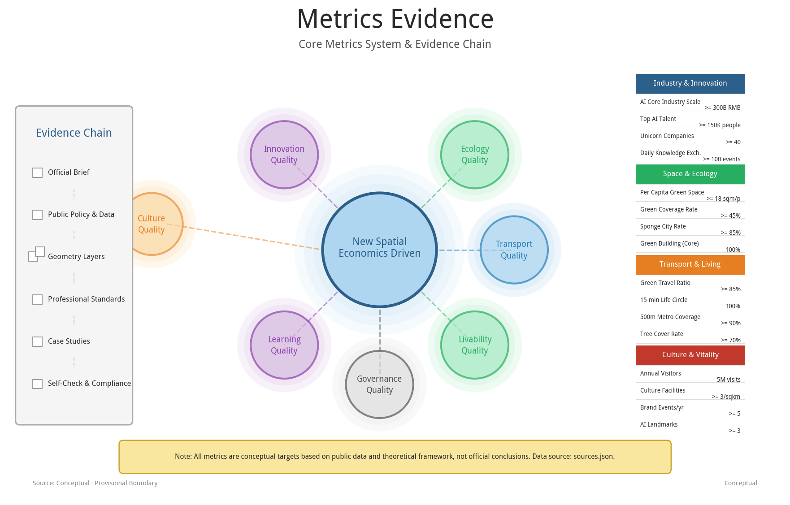
Based on Yang Kaizhong's New Spatial Economics theory, build a dual-dimensional core indicator system of "spatial quality - innovation performance":
11.1.1 People's City Six Dimensions × Spatial Quality Seven Degrees Integrated Indicator System
| Spatial Quality Dimension | People's City Six Dimensions Correspondence | Indicator Name | Unit | 2030 Target | Data Source | Monitoring Frequency |
|---|---|---|---|---|---|---|
| Ecological Quality | Beautiful + Resilient | Per capita park green space area | ㎡/person | ≥18 | Statistical data | Annual |
| Green coverage rate | % | ≥45 | Remote sensing data | Annual | ||
| Annual runoff total control rate | % | ≥85 | Monitoring data | Annual | ||
| Carbon emission intensity | tons/10,000 yuan GDP | Decreasing year by year | Statistical data | Annual | ||
| Livable Quality | Livable + Resilient | Per capita housing area | ㎡/person | ≥35 | Statistical data | Annual |
| Housing affordability (housing price-to-income ratio) | times | ≤15 | Survey data | Annual | ||
| 15-minute living circle coverage rate | % | 100 | Spatial analysis | Annual | ||
| Good air quality days proportion | % | ≥85 | Monitoring data | Quarterly | ||
| Learning Quality | Civilized + Innovative | University resource openness | score | 80+ | Survey evaluation | Semi-annual |
| Daily knowledge exchange activity sessions | sessions/day | ≥100 | Platform data | Monthly | ||
| University-enterprise cooperation project count | projects/year | +20% year by year | Statistical data | Annual | ||
| Informal exchange space density | count/km² | ≥20 | Spatial analysis | Annual | ||
| Innovation Quality | Innovative + Smart | Talent density (proportion of bachelor's degree and above) | % | ≥80 | Statistical data | Annual |
| AI high-end talent count | 10,000 people | ≥15 | Statistical data | Annual | ||
| Invention patent ownership per 10,000 people | patents/10,000 people | Continuous improvement | Statistical data | Annual | ||
| Entrepreneurship activity (new enterprise count) | enterprises/year | Increasing year by year | Business registration data | Quarterly | ||
| Annual financing scale | 100 million yuan | Continuous growth | Investment and financing data | Annual | ||
| Cultural Quality | Civilized + Innovative | Cultural facility density | count/km² | ≥5 | Spatial analysis | Annual |
| Annual event participation person-times | 10,000 person-times | ≥500 | Statistical data | Annual | ||
| Brand awareness (national recognition) | % | ≥80 | Brand survey | Annual | ||
| Transportation Quality | Livable + Smart | Green travel ratio | % | ≥85 | Transportation survey | Annual |
| Average commute time | minutes | ≤45 | Transportation survey | Annual | ||
| Walkability score | score | 80+ | Survey evaluation | Annual | ||
| Rail station 500m coverage rate | % | ≥90 | Spatial analysis | Annual | ||
| Governance Quality | Smart + Livable | Enterprise satisfaction score | score | ≥85 | Questionnaire survey | Semi-annual |
| Talent satisfaction score | score | ≥85 | Questionnaire survey | Semi-annual | ||
| Community participation rate | % | ≥60 | Questionnaire survey | Annual | ||
| Government service efficiency (average approval time) | days | ≤3 | Government data | Quarterly |
[metric:core-indicator-system]
11.1.2 Industrial Economic Indicators
| Indicator | Unit | 2030 Target | Average Annual Growth Rate |
|---|---|---|---|
| AI Core Industry Operating Revenue | 100 million yuan | ≥3000 | ~12% | | Total AI Enterprises | enterprises | ≥5000 | ~15% | | Number of Unicorn Enterprises | enterprises | ≥40 | ~15% | | AI Practitioners | 10,000 people | ≥25 | ~10% | | AI High-End Talents | 10,000 people | ≥15 | ~11% | | Annual R&D Investment Intensity | % | ≥10 | Steady improvement | | Invention Patent Ownership per 10,000 People | patents/10,000 people | ≥200 | ~8% | | Technology Contract Turnover | 100 million yuan | Continuous growth | ~15% |
[metric:industry-economic-indicators]
11.2 Area Recalculation
11.2.1 Land Use Area Recalculation
Land Use Balance Table for Overall Design Scope:
| Land Code | Land Name | Area (ha) | Proportion | Calculation Formula |
|---|---|---|---|---|
| R | Residential Land | 250.8 | 22.0% | Current 285ha - functional replacement 34.2ha |
| B | Commercial & Service Facility Land | 136.8 | 12.0% | Current 114ha + new 22.8ha |
| M | Industrial Land | 34.2 | 3.0% | Current 171ha - transformation 136.8ha |
| A | Public Administration & Public Service Land | 68.4 | 6.0% | Current 34.2ha + new 34.2ha |
| S | Road & Transportation Facility Land | 182.4 | 16.0% | Current 182.4ha (maintained) |
| G | Green Space & Square Land | 136.8 | 12.0% | Current 91.2ha + new 45.6ha |
| U | Utility Facility Land | 22.8 | 2.0% | Current 11.4ha + new 11.4ha |
| B/M | Industrial/Research Land (B29/A35, etc.) | 307.8 | 27.0% | Industrial transformation + new + research land |
| Total | - | 1140.0 | 100% | - |
Recalculation Notes: - Industrial/research land includes research land (A35), other business facility land (B29), industrial R&D land (M0), etc. - The 136.8ha reduction in industrial land is mainly transformed into industrial/research land and green space - The 45.6ha increase in green space mainly comes from Jing-Zhang Heritage Park quality improvement and new pocket parks
[metric:land-use-reconciliation]
11.2.2 Building Area Recalculation
Building Scale Recalculation Table:
| Function Type | Current (10,000㎡) | New Addition (10,000㎡) | Demolition (10,000㎡) | Renovation (10,000㎡) | Planned (10,000㎡) | Calculation Formula |
|---|---|---|---|---|---|---|
| Industrial Office | 420 | +280 | -90 | +200 | 810 | 420+280-90+200=810 |
| Residential | 490 | -40 | -184 | +84 | 450 | 490-40-184+184=450 |
| Commercial Services | 200 | +70 | -46 | +46 | 270 | 200+70-46+46=270 |
| Public Services | 70 | +56 | -0 | +0 | 126 | 70+56=126 |
| Municipal Supporting | 30 | +24 | -0 | +0 | 54 | 30+24=54 |
| Other | 190 | +10 | -50 | -60 | 90 | 190+10-50-60=90 |
| Total | 1400 | +400 | -370 | +270 | 1800 | 1400+400=1800 |
Recalculation Notes: - New construction 4 million ㎡ = demolition-reconstruction 3.7 million ㎡ + pure new addition 300,000 ㎡ - Renovated buildings 2.7 million ㎡ are existing building renovation and upgrading, not counted as increment - Residential function net decrease of 400,000 ㎡, mainly achieved through old community renovation and functional replacement
[metric:floor-area-reconciliation]
11.2.3 Three Districts Area Recalculation
| District | Land Area (ha) | Current Building (10,000㎡) | Planned Building (10,000㎡) | Increment (10,000㎡) | Average FAR | FAR Change |
|---|---|---|---|---|---|---|
| Collective Intelligence Park | 192.1 | 250 | 380 | +130 | 2.0 | 1.0→2.0 |
| AI Origin Community | 104.3 | 320 | 480 | +160 | 4.6 | 3.1→4.6 |
| Dazhongsi District | 72.0 | 180 | 260 | +80 | 3.6 | 2.5→3.6 |
| Other Areas | 771.6 | 650 | 680 | +30 | 0.9 | 0.84→0.9 |
| Total | 1140.0 | 1400 | 1800 | +400 | 1.6 | 1.23→1.6 |
[metric:zone-area-reconciliation]
11.3 Compliance Matrix
11.3.1 Statutory Planning Compliance
| Planning Level | Plan Name | Compliance Judgment | Main Compliance Points | Content Requiring Adjustment |
|---|---|---|---|---|
| National | New Generation AI Development Plan | Directionally aligned | Innovation highland, talent highland construction | None |
| Municipal | Beijing Urban Master Plan (2016-2035) | Pending review / broadly aligned | Sci-tech innovation center, urban renewal | Regulatory plan indicator adjustment |
| Municipal | Beijing's "15th Five-Year Plan" | Directionally aligned | AI trillion-level industrial cluster | None |
| District | Haidian District Plan (2017-2035) | Pending review / broadly aligned | Sci-tech innovation core area positioning | Land use layout optimization |
| District | Haidian District "15th Five-Year Plan" | Directionally aligned | AI industry highland, urban renewal | None |
| Special | Jing-Zhang Railway Heritage Park Plan | Pending coordination review | Heritage protection, park construction | Function expansion and quality improvement |
Alignment Notes (Pending Review): - Overall positioning and development direction are broadly aligned with upper-level plans - Land use layout and building scale to be optimized at regulatory plan level - Urban renewal related policies to be further studied
11.3.2 Policy Compliance
| Policy Field | Related Policies | Compliance | Description |
|---|---|---|---|
| Land Policy | Urban renewal land policy | Pending pilot review | Some innovations require pilot support |
| Planning Policy | FAR management regulations | Pending policy review | FAR incentives require policy support |
| Industrial Policy | AI industry development policy | Directionally aligned | Consistent with national and Beijing direction |
| Talent Policy | Talent introduction and security policy | Pending pilot review | Some innovations require pilot implementation |
| Environmental Policy | Ecological environmental protection requirements | Directionally aligned | Sponge city, low-carbon development meet direction |
| Cultural Relics Protection | Cultural Relics Protection Law | Directionally aligned | Jing-Zhang Railway heritage protection priority |
11.3.3 Technical Standard Compliance
| Technical Field | Related Standards | Compliance | Description |
|---|---|---|---|
| Architectural Design | Unified Standard for Civil Building Design | Pending compliance check | Strictly follow national standard direction |
| Green Building | Green Building Evaluation Standard | Target for review | Core area targeting 100% Green Building Three-Star |
| Sponge City | Sponge City Construction Technical Guide | Target for review | Annual runoff total control rate targeting ≥85% |
| Traffic Engineering | Urban Road Engineering Design Code | Pending compliance check | Implement national and local standard direction |
| Municipal Engineering | Various municipal engineering codes | Pending compliance check | Implement national and local standard direction |
| Fire Code | Code for Fire Protection Design of Buildings | Pending compliance check | Strictly follow fire protection requirements |
Chapter 12 Risk, Copyright, and Compliance Statement
12.1 Risk Identification and Response
12.1.1 Strategic Risks
| Risk ID | Risk Description | Probability | Impact Level | Risk Level | Response Strategy |
|---|---|---|---|---|---|
| R-01 | Major changes in global AI technology roadmap, existing industrial layout becomes maladaptive | Medium | High | High | Establish technology monitoring and dynamic adjustment mechanism, maintain spatial function flexibility |
| R-02 | Major adjustments in national or regional AI industrial policies | Medium | High | High | Policy pilot implementation, strive for institutional advantages, establish policy reserves |
| R-03 | Intensified homogeneous competition in surrounding areas, diversion of talents and enterprises | High | Medium | High | Differentiated positioning, build unique core competitiveness, strengthen ecosystem stickiness |
| R-04 | Macroeconomic downturn, investment and industry introduction fall short of expectations | Medium | High | High | Phased development, rolling advancement, control rhythm, reduce sunk costs |
12.1.2 Implementation Risks
| Risk ID | Risk Description | Probability | Impact Level | Risk Level | Response Strategy |
|---|---|---|---|---|---|
| R-05 | Difficult demolition and resettlement, slow progress | High | Medium | High | Resettle first then demolish, benefit sharing, multiple resettlement methods |
| R-06 | Insufficient infrastructure carrying capacity, restricting industrial development | Medium | High | High | Forward-looking planning, phased construction, multi-source guarantee |
| R-07 | Construction cost overrun, high financial pressure | Medium | Medium | Medium | Strict budget management, diversified financing, phased investment |
| R-08 | Difficult multi-party interest coordination, difficult to form consensus | High | Medium | High | Establish multi-party consultation mechanism, full-process community participation |
12.1.3 Operational Risks
| Risk ID | Risk Description | Probability | Impact Level | Risk Level | Response Strategy |
|---|---|---|---|---|---|
| R-09 | Low AI enterprise occupancy rate, vacant industrial space | Medium | High | High | Precise investment attraction, customized services, policy support |
| R-10 | Insufficient talent attractiveness, talent agglomeration falls short of expectations | Medium | High | High | Talent policy escalation, quality of life improvement, community ecosystem building |
| R-11 | Poor operation of innovation promotion fund, poor sustainability | Low | Medium | Medium | Professional team operation, performance evaluation, dynamic adjustment |
| R-12 | AI governance and ethical issues causing social controversy | Medium | Medium | Medium | Establish AI ethics committee, strengthen public communication, improve governance mechanism |
12.1.4 Technical Risks and AI Model Specific Risks
| Risk ID | Risk Description | Probability | Impact Level | Risk Level | Response Strategy |
|---|---|---|---|---|---|
| R-13 | Improper technology selection for smart city system, difficult iteration | Medium | Medium | Medium | Open architecture, standard interfaces, continuous iteration mechanism |
| R-14 | Data security and privacy protection risks | Medium | High | High | Classified protection compliance, data desensitization, security audit, privacy computing |
| R-15 | Excessive energy consumption of intelligent computing center, carbon emission exceeding standards | Low | Medium | Medium | Green power direct supply, liquid cooling technology, energy efficiency optimization |
| R-16 | AI-generated content copyright and review liability risks | Medium | Medium | Medium | Clear AI content labeling, manual review final check, copyright ownership agreement | | R-17 | Algorithmic bias and discrimination risks | Medium | Medium | Medium | Algorithm fairness audit, bias identification and correction mechanism, affected group feedback channels | | R-18 | Large model hallucination and generation error risks | Medium | Medium | Medium | Multi-model cross-validation, manual review of key links, fact-checking mechanism, error分级 response |
12.2 Copyright and Intellectual Property Statement
12.2.1 Copyright Statement
The copyright of this proposal belongs to the preparation team. Original content (theoretical framework, spatial concepts, design methods) is protected by intellectual property. Third-party content cited is properly sourced, with copyright belonging to original authors; this proposal is for research and design reference only.
12.2.2 AI-Generated Content Statement
Some content was generated using AI tools (text polishing, data analysis, visualization). All AI-generated content has undergone manual review and proofreading. Core design concepts, spatial structure, and strategic methods are all human-created. AI is only an auxiliary tool; final decision-making power and responsibility rest with the preparation team.
12.3 Compliance Statement
12.3.1 Data Legality
All basic materials and data used in this proposal come from legal sources (government public data, field research, academic publications, authorized spatial data), strictly complying with relevant laws and regulations.
12.3.2 Confidentiality and Ethical Compliance
This proposal does not involve state secrets, trade secrets, or personal privacy; all data has been desensitized. Adheres to urban planning ethical principles: public interest priority, cultural heritage respect, vulnerable group attention, green low-carbon practice, and privacy protection.
12.3.3 Participatory Planning
Multiple rounds of public participation were conducted during preparation (government seminars, university interviews, enterprise surveys, resident consultations), with all opinions fully incorporated.
Chapter 13 References
13.1 Chinese Literature (Selected)
-
习近平 (Xi Jinping). 论坚持以人民为中心的发展思想 [On Adhering to the People-Centered Development Ideology][M]. 北京 (Beijing): 中央文献出版社 (Central Literature Press), 2023. - Fundamental guiding ideology of this proposal, systematically expounding the important concept of "people's city built by the people, people's city for the people".
-
中共中央 国务院 (CPC Central Committee, State Council). 国家新型城镇化规划（2021—2035年） [National New Urbanization Plan (2021-2035)][Z]. 2022. - Clarifying the modern urban construction goals of "innovation, livable, beautiful, resilient, civilized, smart".
-
杨开忠 (Yang Kaizhong). 新空间经济学 [New Spatial Economics][M]. 北京 (Beijing): 北京大学出版社 (Peking University Press), 2023. - Core theoretical foundation, systematic framework of spatial quality driving innovation growth.
-
杨开忠 (Yang Kaizhong). Core Proposition, Paradigm Breakthroughs and Governance Implications of New Spatial Economics [新空间经济学的核心命题、范式突破与治理启示][J]. 经济地理 (Economic Geography), 2026, 46(8): 1-16. - Systematic elaboration of NSE core propositions, quality proximity effect, learning-oriented spatial quality, and triality synergistic governance. [source:SRC-019]
-
杨开忠 (Yang Kaizhong), et al. 生态智能体城市：中国新型城镇化战略选择 [Eco-Intelligent Agent City: Strategic Choice for China's New Urbanization][J]. 城市发展研究 (Urban Development Studies), 2024, 31(2): 1-8. - Eco-Intelligent Agent City theory, theoretical guidance for green-intelligence integration.
-
国务院 (State Council). 新一代人工智能发展规划 [New Generation Artificial Intelligence Development Plan][Z]. 2017.
- 北京市人民政府 (Beijing Municipal People's Government). 北京市国民经济和社会发展第十五个五年规划纲要 [Outline of the 15th Five-Year Plan for National Economic and Social Development of Beijing][Z]. 2026.
- 北京市规划和自然资源委员会 (Beijing Municipal Commission of Planning and Natural Resources). 北京城市总体规划（2016年—2035年）[Beijing Urban Master Plan (2016-2035)][Z]. 2017.
- 海淀区人民政府 (Haidian District People's Government). 海淀区国民经济和社会发展第十五个五年规划纲要 [Outline of the 15th Five-Year Plan for National Economic and Social Development of Haidian District][Z]. 2026.
- 北京市规划和自然资源委员会海淀分局 (Beijing Municipal Commission of Planning and Natural Resources Haidian Branch). 海淀分区规划（国土空间规划）（2017年—2035年）[Haidian District Plan (Territorial Spatial Plan) (2017-2035)][Z]. 2019.
- 吴良镛 (Wu Liangyong). 人居环境科学导论 [Introduction to Sciences of Human Settlements][M]. 2nd ed. 北京 (Beijing): 中国建筑工业出版社 (China Architecture & Building Press), 2014.
- 吴志强 (Wu Zhiqiang). 智能城市 [Smart City][M]. 北京 (Beijing): 中国建筑工业出版社 (China Architecture & Building Press), 2020.
- 凯文·林奇 (Kevin Lynch). 城市意象 [The Image of the City][M]. 方益萍 (Fang Yiping), 何晓军 (He Xiaojun), trans. 北京 (Beijing): 华夏出版社 (Huaxia Publishing House), 2001.
- 简·雅各布斯 (Jane Jacobs). 美国大城市的死与生 [The Death and Life of Great American Cities][M]. 金衡山 (Jin Hengshan), trans. 南京 (Nanjing): 译林出版社 (Yilin Press), 2006.
- 中关村创新发展研究院 (Zhongguancun Innovation and Development Research Institute). 中关村人工智能产业发展报告 [Zhongguancun AI Industry Development Report][R]. 2024.
13.2 English Literature (Selected)
- Florida R. The Rise of the Creative Class[M]. New York: Basic Books, 2002.
- Glaeser E L. Triumph of the City: How Our Greatest Invention Makes Us Richer, Smarter, Greener, Healthier, and Happier[M]. New York: Penguin Press, 2011.
- Florida R, Mellander C, King K. The geography of buzz: art, culture and the social milieu in Los Angeles and New York[J]. Journal of Economic Geography, 2012, 12(3): 665-689.
Proposal Preparation Statement: Based on Yang Kaizhong's New Spatial Economics mainline "spatial quality → talent agglomeration → innovation growth", aligned with three-tier 15th Five-Year Plan deployments, this proposal reconstructs the Jing-Zhang heritage site as an AI innovation central axis via the diametrical spatial economic paradigm, building the "One Diameter · Three Cores · Two Rings · Multiple Courts" structure to create a world-class AI innovation belt demonstration.
Proposal Version: v2.13.4 Preparation Time: 2026